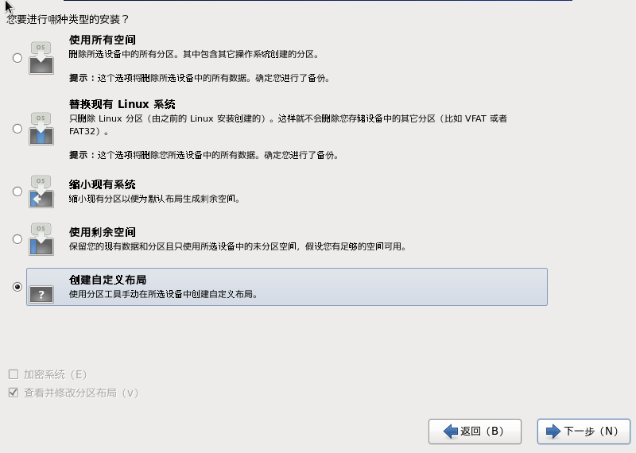
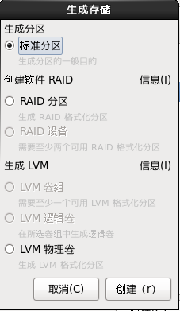
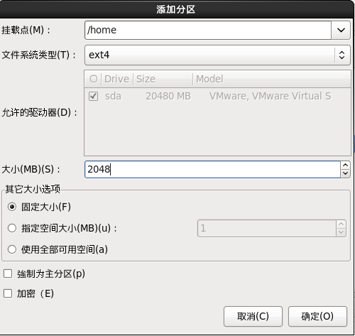

第一讲 Linux系统简介1.1 UNIX与Linux发展史1.2 开源软件简介第二讲 Linux系统安装2.1 VMware虚拟机安装与使用2.2 系统分区2.3 Linux系统安装2.4 远程登录管理工具第三讲 初学者建议3.1 学习Linux的注意事项3.2 服务器管理和维护建议3.2.1 各目录的作用3.2.2 服务器注意事项第四讲 Linux常用命令4.1 文件处理命令4.1.1 命令格式与目录处理命令ls4.1.2 目录处理命令4.1.2.1 创建目录 mkdir4.1.2.2 切换目录 cd4.1.2.3 显示当前目录 pwd4.1.2.4 删除空目录 rmdir4.1.2.5 复制文件或目录 cp4.1.2.6 剪切文件 、改名 mv4.1.2.7 删除文件（也可以删除目录） rm4.1.3 文件处理命令4.1.3.1 创建空文件 touch4.1.3.2 显示文件内容 cat （适合浏览内容较少的文件）4.1.3.3 显示文件内容(反向列示) tac4.1.3.4 分页显示文件内容 more4.1.3.5 分页显示文件内容（可向上翻页） less4.1.3.6 显示文件前面几行 head4.1.3.7 显示文件后面几行 tail4.1.4 链接命令4.1.4.1 生成链接文件 ln4.2 权限管理命令4.2.1 改变文件或目录权限 chmod4.2.2 改变文件或目录的所有者 chown4.2.3 改变文件或目录的所属组 chgrp4.2.4 显示、设置文件的缺省权限 umask4.3 文件搜索命令4.3.1 文件搜索命令 find(相当于windows中的搜索)4.3.2 其他搜索命令4.3.2.1 在文件资料库中查找文件 locate4.3.2.2 搜索命令所在目录及别名信息 which4.3.2.3 搜索命令所在目录及帮助文档路径 whereis4.3.2.4 在文件中搜寻字串匹配的行并输出 grep4.4 帮助命令4.4.1 获得帮助信息 man4.4.2 查看命令的简短信息 whatis4.4.3 查看配置文件的简短信息 apropos4.4.4 查看命令的描述信息 --help4.4.5 获得Shell内置命令的帮助信息 help4.5 用户管理命令4.5.1 添加新用户 useradd4.5.2 设置用户密码 passwd4.5.3 查看登录用户信息 who4.5.4 查看登录用户祥细信息 w4.6 压缩解压命令4.6.1 压缩文件 gzip4.6.2 解压缩.gz的压缩文件 gunzip / gzip -d4.6.3 打包目录 tar4.6.4 压缩解压命令 tar4.6.4 压缩文件或目录 zip4.6.5 解压.zip的压缩文件 unzip4.6.6 压缩文件 bzip24.6.7 解压.bz2压缩格式的文件 bunzip24.7 网络命令4.7.1 给用户发信息， 以Ctrl+D保存结束 write4.7.2 给所有用户发广播消息 wall4.7.3 测试网络连通性 ping4.7.4 查看和设置网卡息 ifconfig4.7.5 查看发送电子邮件 mail4.7.6 检查某特定用户上次登录的时间 lastlog4.7.7 列出目前与过去登入系统的用户信息 last4.7.8 显示数据包到主机间的路径 traceroute4.7.9 显示网络相关信息 netstat4.7.10 配置网络 setup4.7.11 挂载命令 mount4.7.12 卸载挂载点 umount4.8 关机重启命令4.8.1 关机重启命令 shutdown4.8.2 其他关机命令 halt poweroff init 04.8.3 其他重启命令4.8.4 系统运行级别？4.8.4 退出登录命令 logout第五讲 文本编辑器Vim5.1 Vim常用操作5.2 Vim使用技巧第六讲 软件包管理简介6.1 软件包分类6.1.1 源码包6.1.2 RPM包6.2 rpm包管理-rpm命令管理6.2.1 rpm命令管理-包命名与依赖性6.2.2 rpm命令管理-安装、升级与卸载6.2.3 rpm命令管理-查询6.2.3 rpm包校验和文件提取6.3 rpm包管理-yum在线管理6.3.1 IP地址配置和网络yum源6.3.2 yum命令6.3.3 光盘yum源搭建6.4 源码包管理6.4.1 源码包和RPM包的区别6.4.2 源码包安装过程6.5 脚本安装包与软件包选择第七讲 用户和用户组管理7.1 用户配置文件7.1.1 用户配置文件-用户信息文件/etc/passwd7.1.2 用户配置文件-影子文件/etc/shadow7.1.3 用户配置文件-组信息文件/etc/group和组密码文件/etc/gshadow7.2 用户管理相关文件7.3 用户管理命令7.3.1 用户添加命令useradd7.3.2 修改用户密码passwd7.3.3 修改用户信息usermod及修改用户密码状态chage7.3.4 删除用户userdel及用户切换命令su7.4 用户组管理命令第八讲 权限管理8.1 ACL权限8.1.1 ACL权限简介与开启8.1.2 查看与设定ACL权限8.1.3 最大有效权限与删除ACL权限8.1.4 默认ACL权限和递归ACL权限8.2 文件特殊权限8.2.1 SetUID8.2.2 SetGID8.2.3 Sticky BIT8.3 文件系统属性chattr权限8.4 系统命令sudo权限第九讲 文件系统管理9.1 回顾分区和文件系统9.2 文件系统常用命令9.2.1 df命令、du命令、fack命令和dump2fs命令9.2.2 挂载命令9.2.3 挂载光盘与U盘9.2.4 支持NTFS文件系统9.3 fdisk分区9.3.1 fdisk命令分区过程9.3.2 分区自动挂载与fstab文件修复9.4 分配swap分区第十讲 Shell基础10.1 Shell概述10.2 Shell脚本的执行方式10.3 Bash的基本功能10.3.1 历史命令与命令补全10.3.2 命令别名与常用快捷键10.3.3 输入输出重定向10.3.4 多命令顺序执行与管道符10.3.5 通配符与其他特殊符号10.4 Bash的变量10.4.1 用户自定义变量10.4.2 环境变量10.4.3 位置参数变量10.4.4 预定义变量10.5 Bash的运算符10.5.1 数值运算与运算符10.5.2 变量测试与内容替换10.6 环境变量配置文件10.6.1 环境变量配置文件简介10.6.2 环境变量配置文件作用10.6.3 其他配置文件和登录信息第十一讲 Shell编程11.1 基础正则表达式11.2 字符截取命令11.2.1 cut字段提取命令11.2.2 printf命令11.2.3 awk命令11.2.4 sed命令11.3 字符处理命令11.4 条件判断11.5 流程控制11.5.1 if语句11.5.2 case语句11.5.3 for循环11.5.4 while循环与until循环第十二讲 Linux服务管理12.1 服务简介与分类12.2 RPM包安装服务的管理12.2.1 独立服务的管理12.2.2 基于xinetd服务的管理12.3 源码包安装服务的管理12.4 服务管理总结第十三讲 Linux系统管理13.1 进程管理13.1.1 进程查看13.1.2 进程管理（终止进程）13.2 工作管理13.3 系统资源查看13.4 系统定时任务第十四讲 日志管理14.1 日志管理简介14.2 rsyslogd日志服务14.3 日志轮替第十五讲 启动管理15.1 CentOS 6.3 启动管理15.1.1 系统运行级别15.1.2 系统启动过程（字符界面）15.2 启动引导程序grub15.3 系统修复模式第十六讲 备份与恢复16.1 备份概述16.2 dump和restore命令
视频网址：https://study.163.com/course/introduction/983014.htm
第一讲 Linux系统简介
1.1 UNIX与Linux发展史
1965年，美国麻省理工学院（MIT）、通用电气公司（GE）及AT&T的贝尔实验室联合开发Multics工程计划，其目标是开发一种交互式的具有多道程序处理能力的分时操作系统，但因Multics追求的目标过于庞大复杂，项目进度远远落后于计划，最后贝尔实验室宣布退出。
1969年，美国贝尔实验室的肯*汤普森在DEC PDP-7机器上开发出了UNIX系统。
1971年，肯*汤普森的同事丹尼斯*里奇发明了C语言；1973年，UNIX系统的绝大部分源代码用C语言重写，这为提高UNIX系统的可移植性打下基础。
UNIX主要发行版本
| 操作系统 | 公司 | 硬件平台 |
|---|---|---|
| AIX | IBM | PowerPC |
| HP-UX | HP | PA-RISC |
| Solaris | Sun | SPARC |
| Linux | Red Hat Linux、 Ubuntu Linux ... ... | IA(Intel、AMD、Cyrix、RISE...) |
Linux系统诞生于1991年，由芬兰大学生李纳斯(Linus Torvalds)和后来陆续加入的众多爱好者共同开发完成。
Linux是开源软件，源代码开放的UNIX
Linux内核版本
Linux内核官网：www.kernel.org
内核版本说明
2.6.18
2：主版本
6：次版本
Linux主要发行版本
最主要区别是软件安装的方法不同。
1.2 开源软件简介
开源软件
使用的自由
- 绝大多数开源软件免费
研究的自己
- 可以获得软件源代码
散布及改良的自由
- 可以自由传播、改良甚至销售
支撑互联网的开源技术
LAMP
- Linux 操作系统
- Apache Web服务器
- MySql 数据库
- PHP 编程语言
1.3 Linux应用领域
基于Linux的企业服务器
嵌入式应用
Linux在电影娱乐业
1.4 Linux学习方法
第二讲 Linux系统安装
2.1 VMware虚拟机安装与使用
VMware简介
VMware是一个虚拟PC的软件，可以在现有的操作系统上虚拟出一个新的硬件环境，相当于模拟出一台新的PC，以此来实现在一台机器上真正同时运行两个独立的操作系统。
WMware官方网站 http://www.vmware.com
VMware主要特点：
- 不需要分区或重新开机就能在同一台PC上使用两种以上的操作系统
- 本机系统可以与虚拟机系统网络通信
- 可以设定并且随时修改虚拟机操作系统的硬件环境
新建虚拟机
虚拟机硬件设置
虚拟机使用技巧
- 快照
- 克隆
2.2 系统分区
磁盘分区
- 磁盘分区是使用分区编辑器（partition editor）在磁盘上划分几个逻辑部分，碟片一旦划分成数个分区（Partition）,不同类的目录与文件可以存储进不同的分区。
分区类型
主分区：最多只能有4个。
扩展分区：
- 最多只能有1个。
- 主分区加扩展分区最多有4个
- 不能写入数据，只能包含逻辑分区
逻辑分区
格式化
- 格式化（高级格式化）又称逻辑格式化，它是指根据用户选定的文件系统（如FAT16、FAT32、NTFS、EXT2、EXT3、EXT4 等），在磁盘的特定区域写入特定数据，在分区中划出一片用于存放文件分配表、目录表等用于文件管理的磁盘空间。
硬件设备文件名
硬件 设备文件名 IDE硬盘 /dev/hd[a-d] SCSI/SATA/USB硬盘 /dev/sd[a-p] 光驱 /dev/cdrom或/dev/sr0 软盘 /dev/fd[0-1] 打印机（25针） /dev/lp[0-2] 打印机（USB） /dev/usb/lp[0-15] 鼠标 /dev/mouse 分区设备文件名
设备文件名
- /dev/hda1(IDE硬盘接口)
- /dev/sda1(SCSI硬盘接口、SATA硬盘接口)
接口及传输速度
接口 理论速度 主要用途 IDE 133MB/s SCSI 200MB/s 服务器 SATA（串口硬盘）1代、2代、3代 500MB/s 服务器，个人机一般都是此接口 sdb1 主分区
sdb2 扩展分区
sdb5、6、7 逻辑分区
1-4只能给主分区或扩展分区使用，所以逻辑分区是从5开始的，就算主分区和逻辑分区没有分够4个分区，逻辑分区也不能占用1-4。
挂载
必须分区
- / (根分区)
- swap分区（交换分区（虚拟内存），建议分物理内存的2倍，但最大不超过2GB）
推荐分区
- /boot （启动分区，200MB）：专门用来保存启动时的数据，建议单独分区目的是防止根分区数据写满后，无法启动系统。
从系统上来看，/boot目录、/home目录都是根目录的子目录，但是从硬盘上来看，他们可以每一个目录都有自己独立的硬盘空间。
总结
- 分区：把大硬盘分为小的逻辑分区
- 格式化：写入文件系统
- 分区设备文件名：给每个分区定义设备文件名
- 挂载： 给每个分区分配挂载点
2.3 Linux系统安装
1.安装欢迎界面
如果未进入，请先设置BIOS，按F2或F12进入
- “Install or upgrade an existing system”:安装或升级现有系统
- “Install system with basic video driver”:安装过程采用基本的显卡驱动
- "Rescue installed system": 进入系统修复模式
- "Boot from local drive": 退出安装从硬盘启动
- "Memory test" : 存储介质检测
选择Skip不检测光盘（光盘没有问题，直接安装）
选择Next
选择中文简体，Next
选择默认的美式键盘，下一步
选择基本存储设备，下一步
本来就是一个空的硬盘，选择“是，忽略所有数据”
主机名默认，选择下一步（在Windows系统中同一局域网中主机名称不能相同，Linux系统中不存在这个问题，可以都使用一样的主机名）
使用默认的亚州/上海时间
设置密码，下一步
密码原则：
复杂性
- 八位字符以上、大小写字母、数字、符号
- 不能是英文单词
- 不能是和用户相关的内容
易记忆性
时效性
选择创建自定义布局，进行手工分区

进行分区

先分/boot分区 200M：

再分swap分区（这里分1G）：
根据需要分/home分区，当然此分区不是必须单独分一个区的，当系统用作文件上传下载服务器时，可分此分区，这里我们也分一个/home分区。

最后“使用全部可用空间”来分“/”根分区：
分区完成，单击“下一步”：

选择“格式化”：
默认选择“在/dev/sda中安装引导装载程序”，单击下一步：
软件包选择
- Desktop(桌面)
- Minimal Desktop （最小化桌面）
- Minimal (最小化)
- Basic Server (基本服务器)
- Database Server (数据库服务器)
- Web Server (网页服务器)
- Virtual Host (虚拟主机)
- software development workstation (软件开发工作站)
如果用作服务器，建议选择最小化安装（Minimal），如果是个人使用，可以选择桌面（Desktop）
但是最小化安装，有一些常用的工作会没有，所以选择基本服务器（Basic Server）
如果对系统比较了解，可以选择 “现在自定义”，来下一步后选择具体的安装选项。
这里选择以后自定义：

稍等片刻，系统安装完成后，选择“重新引导”
选择“重新引导”后，会自动重新进入系统，如果是真实的主机，则需要设置为硬盘启动，然后，进入系统。
root下的目录：
1/root/install.log:存储了安装在系统中的软件包及其版本信息2/root/install.log.syslog:存储了安装过程中留下的事件记录3/root/anaconda-ks.cfg 以Kickstart配置文件的格式记录安装中设置的选项信息
2.4 远程登录管理工具
xxxxxxxxxx41虚拟机网络配置：2桥接：使用真实的网卡， 可以和局域网内同IP段内的其他计算机通信，但是会占用IP，如果真实的网卡可以上网，虚拟机也可以访问互联网3NAT:通过虚拟网卡vmnet8 只能和本机电脑通信 不会占用IP,如果本机可能访问网络，虚拟机也可以访问互联网4host_only:通过虚拟网卡vmnet1 只能和本机电脑通信 不会占用IP，只能和本机通信
host_only: host_only是和VMnet1进行通信，设置一下VMnet1的IP
x1ifconfig 查看网卡2配置网卡：3ifconfig eth0 192.168.118.24eth0:网卡名5192.168.118.2：配置的网卡6此配置，只是临时有效，重启后失效，如果想长期生效，则需要修改配置文件78如果出现设置了桥接，并且在同一个IP地址段的地址后，还是无法连接，则可能针对于笔记本，如果有主机有两块网卡，一个有线网卡，一个无线网卡，9在桥接时，虚拟机中编加-虚拟机网络配置中 手动设置一下桥 接哪个网卡
在主机中ping 192.168.118.2 如果能通则说明连接上了。
第三讲 初学者建议
3.1 学习Linux的注意事项
xxxxxxxxxx161注意：1.严格区分大小写22.linux中所有内容以文件形式保存，包括硬件3硬盘文件是/dev/sd[a-p]4光盘文件是/dev/sr0等5命令行只是临时保存6ls /bin/ 底下都是可执行命令83.Linux不靠扩展名区分文件类型9压缩包：“*.gz” *.bz2 *.tar.bz2 *.tgz等10二进制软件包： *.rpm11网页文件 *.html *.php12脚本文件 *.sh (shell脚本)13配置文件 *.conf144.Linux所有的存储设备都必须挂载之后用户才能使用，包括硬盘、U盘和光盘155.Windows下的程序不能直接在Linux中安装和运行
3.2 服务器管理和维护建议
3.2.1 各目录的作用
| 目录 | 说明 |
|---|---|
| /bin/ | 存放系统命令的目录，普通用户和超级用户都可以执行。不过放在/bin下的命令在单用户模式下也可以执行 |
| /sbin/ | 保存和系统环境设置相关的命令，只有超级用户可以使用这些命令进行系统环境设置，但是有些命令可以允许普通用户查看 |
| /usr/bin/ | 存放系统命令的目录，普通用户和超级用户都可以执行。这些命令和系统启动无关，在单用户模式下不能执行 |
| /usr/sbin/ | 存放根文件系统不必要的系统管理命令，例如多数服务程序。只有超级用户可以使用。大家其实可以注意到linux的系统，在所有sbin目录中保存的命令只有超级用户可以使用，“bin”目录中保存的命令所有用户都可以使用 |
| /boot/ | 系统启动目录 ，保存系统启动相关的文件，如内核文件和启动引导程序（grub）文件等 |
| /dev/ | 设备文件保存位置。我们已经说过linux中所有内容以文件形式保存，包括硬件。那么这个目录就是用来保存所有硬件设备文件的 |
| /etc/ | 配置文件保存位置。系统内所有采用默认安装方式（rpm安装）的服务的配置文件全部都保存在这个目录当中，如用户账户和密码，服务的启动脚本常用服务的配置文件等 |
| /home/ | 普通用户的家目录。建立每个用户时，每个用户要有一个默认的登录位置，这个位置就是这个用户的家目录，所有普通用户的家目录就是在/home下建立一个和 用户名相同的目录。如用户user1的家目录就是/home/user1 |
| /lib/ | 系统调用的函数库保存位置 |
| /lost+found/ | （丢失的+找到的）当系统意外崩溃或机器意外关机，而产生一些文件碎片放在这里。当系统启动的过程 中fsck工具会检查这里，并修复已经损坏的文件系统。这个目录只在每个分区中出现，例如/lost+found就是根分区的备份恢复目录， /boot/lost+found就是/boot分区的备份恢复目录 |
| /media/ | 挂载目录。系统建议是用来挂载体设备的，例如软盘和光盘 |
| /mnt/ | 挂载目录。早期linux中只有这一个挂载目录，并没有细分，现在这个目录系统建议挂载额外设备，如u盘，移动硬盘和其他操作系统的分区 |
| /misc/ | 挂载目录。系统建议用来挂载nfs服务的共享目录。我们在刚刚已经解释了挂载，我们应该知道只要是一个已经建立的空目录就可以作为挂载点。那么系统虽然准备了三个默认挂载目录/media /mnt /misc，但是到底在哪个目录中挂载什么设备都可以由管理员自己决定 |
| /opt/ | 第三方安装的软件保存位置。这个目录就是放置和安装其他软件的位置，我手工安装的源码包软件都可以安装到这个目录当中。不过我还是习惯把软件放置到/usr/local目录当中，也就是说/usr/local目录也可以用来安装软件 |
| /proc/ | 虚拟文件系统，该目录中的数据并不保存到硬盘当中，而是保存到内存当中。主要保存系统的内核，进程，外部设备状态和网络状态灯。如/proc/cpuinfo是保存cpu信息的，/proc/devices是保存设备驱动的列表的，/proc/filesystems是保存文件系统列表的，/proc/net/是保存网络协议信息的 |
| /sys/ | 虚拟文件系统。和/proc目录相似，都是保存在内存当中的，主要是保存于内核相关信息的 |
| /root/ | 超级用户的家目录。普通用户家目录在/home/下，超级用户家目录直接在"/"下 |
| /srv/ | 服务数据目录。一些系统服务启动之后，可以在这个目录中保存所需要的数据 |
| /tmp/ | 临时目录。系统存放临时文件的目录，该目录下所有用户都可以访问和写入。我们建议此目录中不能保存重要数据最好每次开机都把该目录清空 |
| /usr/ | 系统软件资源目录。注意usr不是user的缩写，而是" Unix Softwre Resource"的缩写，所以不是存放用户数据，而是存放系统软件资源的目录。系统中安装的软件大多数保存在这里，所以除了/usr/bin/ 和 /usr/sbin/这两个目录，我在介绍几个/usr/下的二级目录 |
| /var/ | 动态数据保存位置。主要保存缓存、日志以及软件运行所产生的文件 |
3.2.2 服务器注意事项
xxxxxxxxxx71远程服务器不允许关机，只能重启2重启时应该关闭服务3不要在服务器访问高峰运行高负载命令4远程配置防火墙时不要把自己踢出服务器5指定合理的密码规范并定期更新6合理分配权限（系统启动服务越少越好，权限越小越好）7定期备份重要数据和日志（etc lib var usr boot）
第四讲 Linux常用命令
xxxxxxxxxx61命令格式2命令 【-选项】 【参数】3例： ls -la /etc4说明：个别命令使用不遵循此格式5当有多个选项时，可以写在一起6简化选项与完整选项
4.1 文件处理命令
4.1.1 命令格式与目录处理命令ls
xxxxxxxxxx171命令名称: ls2命令英文原意：list3命令所在路径: /bin/ls4执行权限 ：所有用户5功能描述：显示目录文件6语法 : ls 选项[-ald] [文件或目录]7-a 显示所有文件，包括隐藏文件 all8-l 详细信息显示 lang9权限|计数|所有者|所属组|文件大小(字节)|最后一次修改时间|文件名10- rw- --- --- 1 root root 1205 3月 3 08:10 文件名11分组分为3类 u所有者，g用户组，o其他人12- rw- r-- r--13-文件类型（-二进制文件 d目录 l软链接文件）14r 读 w写 x执行15-d 查看目录属性16-h 人性化选项17-i i-node号
4.1.2 目录处理命令
4.1.2.1 创建目录 mkdir
xxxxxxxxxx71命令英文原意：make directories2命令所在路径: /bin/mkdir3执行权限 ：所有用户4语法 : mkdir -p [目录名称]5-p 递归创建6范例：$ mkdir -p /tmp/Japan/boduo7$ mkdir /tmp/Japan/longze/tmp/Japan/cangjing
4.1.2.2 切换目录 cd
xxxxxxxxxx61命令英文原意：change directory2命令所在路径: shell内置命令3执行权限 ：所有用户4语法 : cd [目录]5范例：$ cd /tmp/Japan/boduo 切换到指定目录6$ cd .. 回到上一级目录
4.1.2.3 显示当前目录 pwd
xxxxxxxxxx61命令英文原意: pring working directory2命令所在路径: /bin/pwd3执行权限 ：所有用户4语法 : pwd5范例：$ pwd6/tmp/Japan
4.1.2.4 删除空目录 rmdir
xxxxxxxxxx51命令英文原意: remove empty directories2命令所在路径: /bin/rmdir3执行权限 ：所有用户4语法 : rmdir[目录名]5范例：$ rmdir /tmp/Japan/boduo
4.1.2.5 复制文件或目录 cp
xxxxxxxxxx91命令英文原意: copy2命令所在路径: /bin/cp3执行权限 ：所有用户4语法 : cp -rp [原文件或目录] [目标目录]5-r 复制目录6-p 保留文件属性7范例：$ cp /tmp/Japan /home/jia+ (复制的同时改名)9不加 -r 则是复制文件
4.1.2.6 剪切文件 、改名 mv
xxxxxxxxxx71命令英文原意: movie2命令所在路径: /bin/mv3执行权限 ：所有用户4语法 : mv [原文件或目录] [目标目录]5mv可以剪切目录或文件 和cp不一样，不需要加-r6范例：$ mv /tmp/Japan/cangjing /root7$ mv /tmp/Japan /home/jia+ (前切的同时改名)
4.1.2.7 删除文件（也可以删除目录） rm
xxxxxxxxxx71命令英文原意: remove2命令所在路径: /bin/rm3执行权限 ：所有用户4语法 : rm -rf [文件或目录]5-r 删除目录6-f 强制执行(删除之前不询问)7范例：$
任何一个命令终止可按Ctrl+c
4.1.3 文件处理命令
4.1.3.1 创建空文件 touch
xxxxxxxxxx61命令英文原意:2命令所在路径: /bin/touch3执行权限 ：所有用户4语法 :touch [文件名]5范例：$ touch Japanlovestory.list6$ touch "Japanlovestory go"
4.1.3.2 显示文件内容 cat （适合浏览内容较少的文件）
xxxxxxxxxx71命令英文原意:2命令所在路径: /bin/cat3执行权限 ：所有用户4语法 :cat [文件名]5-n 显示行号6范例：$ cat /etc/issue7$ cat -n /etc/services
4.1.3.3 显示文件内容(反向列示) tac
xxxxxxxxxx61命令英文原意:2命令所在路径: /usr/bin/tac3执行权限 ：所有用户4语法 :tac [文件名]5-n 显示行号6范例：$ tac /etc/issue
4.1.3.4 分页显示文件内容 more
xxxxxxxxxx81命令英文原意:2命令所在路径: /bin/more3执行权限 ：所有用户4语法 :more [文件名]5(空格)或f 一页一页翻6（Enter） 一行一行翻7q或Q 退出8范例：$ more /etc/services
4.1.3.5 分页显示文件内容（可向上翻页） less
xxxxxxxxxx121命令英文原意:2命令所在路径: /usr/bin/less3执行权限 ：所有用户4语法 :less [文件名]5(空格)或f 一页一页翻6（Enter） 一行一行翻7pageUP 向上翻页8上箭头 向上翻一行9按/ service 搜索关键词service10按n 搜索下一处关键词11q或Q 退出12范例：$ less /etc/services
4.1.3.6 显示文件前面几行 head
xxxxxxxxxx71命令英文原意:2命令所在路径: /usr/bin/head3执行权限 ：所有用户4语法 :head [文件名]5-n 指定行数6(不指定行数，默认显示前10行)7范例：$ head -n 20 /etc/services
4.1.3.7 显示文件后面几行 tail
xxxxxxxxxx91命令英文原意:2命令所在路径: /usr/bin/tail3执行权限 ：所有用户4语法 :tail [文件名]5-n 指定行数6(不指定行数，默认显示后10行)7-f 动态显示文件末尾内容8（当文件（日志）内容更新后，会显示更新的内容）9范例：$ tail -n 20 /etc/services
4.1.4 链接命令
4.1.4.1 生成链接文件 ln
xxxxxxxxxx161命令英文原意: link2命令所在路径: /bin/ln3执行权限 ：所有用户4语法 :ln -s [原文件] [目标文件]5-s 创建软链接6范例：$ ln -s /etc/issue /tmp/issue.soft7创建/etc/issue的软链接/tmp/issue.soft8$ ln /etc/issue /tmp/issue.hard9创建文件/etc/issue的硬链接/tmp/issue.hard10软链接特点：1.权限三个rwx 2.文件大小很小，相当于windows快捷方式，113.ls查看时，箭头指向源文件12硬链接特点：131.相同于copy，可同步更新，原文件删除， 硬链接文件还可打开。142.每个文件都有各自的i节点，硬链接文件的i节点和原文件相同。153.硬链接不可跨分区164.硬链接不可针对目录使用
4.2 权限管理命令
4.2.1 改变文件或目录权限 chmod
xxxxxxxxxx111命令英文原意: change the permissions mode of a file2命令所在路径: /bin/chmod3执行权限 ：所有用户4语法 : chmod [{ugoa}[+-=]{rwx}] [文件或目录]5-R 递归修改6u:所有者7g：所属组8o:其他9a:所有all（所有者，所属组，其他）10[mode=421] [文件或目录]11权限的数字表示：
| 权限 | 数字 |
|---|---|
| r | 4 |
| w | 2 |
| x | 1 |
| 权限 | 数字 |
|---|---|
| rwx | 7 |
| rw- | 6 |
| r-- | 4 |
文件目录权限总结
xxxxxxxxxx51代表字符 | 权限 | 对文件的含义 | 对目录的含义2---|---|---|---|3r | 读权限 | 可以查看文件内容 | 可以列出目录中的内容4w | 写权限 | 可以修改文件内容 | 可以在目录中创建、删除文件5x | 执行权限 | 可以执行文件 | 可以进入目录
xxxxxxxxxx71•2•3•4范例： chmod u+x /tmp/filename5chmod 421 /tmp/filename6chmod -R 777 testdir7修改目录testfile及其目录下文件为所有用户具有全部权限
改变文件的权限 所有者和root都可以
4.2.2 改变文件或目录的所有者 chown
xxxxxxxxxx61命令英文原意: change file ownership2命令所在路径: /bin/chown3执行权限 ：所有用户4语法 : chown [用户] [文件或目录]5范例： $ chown haojiaxin testfile6改变文件testfile的所有者为haojiaxin
只有root可以改变文件的所有者 所有者是必须存在的
4.2.3 改变文件或目录的所属组 chgrp
xxxxxxxxxx61命令英文原意: change file group ownership2命令所在路径: /bin/chgrp3执行权限 ：所有用户4语法 : chgrp [用户组] [文件或目录]5范例： $ chgrp lampbrother fengjie6改变文件fengjie的所属组为lampbrother
文件或目录创建的默认的所有者为创建文件的人，默认的所属组为创建文件的用户的缺省组
4.2.4 显示、设置文件的缺省权限 umask
xxxxxxxxxx71命令英文原意: the user file-creation mask2命令所在路径: Shell内置命令3执行权限 ：所有用户4语法 : umask [-S]5-S 以rwx形式显示新建文件缺省权限6范例： $ umask -S7umask 023 设置创建目录或文件的权限为023
创建目录或文件时的默认权限为rwxr-xr-x=755
如要修改创建目录或文件时的默认权限为rwxr-xr--
则先写出rwxr-xr-- = 754
777 - 754 = 023
再执行 umask 023
即可修改创建目录或文件时的默认权限为rwxr-xr--
创建目录的默认权限为rwxr-xr-x
创建文件的默认权限为rw-r--r--
直接执行umask(老版本linux系统) 显示0022 新版本linux系统可以使用 -S 选项来看到rwx格式的权限
第一个码：0？？ 第二个：第三个,第四个码:777-022=755=rwxr-xr-x
4.3 文件搜索命令
4.3.1 文件搜索命令 find(相当于windows中的搜索)
windows中Everything搜索工具
xxxxxxxxxx111命令英文原意:2命令所在路径: /bin/find3执行权限 ：所有用户4语法 : find [搜索范围] [匹配条件]5范例： $ find /etc -name init7在目录/etc中查找文件init（只能搜索文件名等于init的文件）8$ find /etc -name *init* （通配符）10在目录/etc中查找文件名包含init的文件11-iname 不区分大小写
| 通配符 | 含义 |
|---|---|
| * | 表示0个或0个以上 任意字符 |
| ？ | 表示1个任意字符 |
xxxxxxxxxx361$ find / -size +204800 （单位是数据块：linux系统中存储文件的最小单位）2在根目录下查找大于100MB的文件3+n 大于 -n 小于 n 等于4$ find /home -user haojiaxin6在根目录下查找所有者为haojiaxin的文件78$ find /home -group haojiaxin9-group 根据所属组查找10$ find /etc -cmin -512-n 分钟之内 +n 超过分钟13在/etc下查找5分钟内被修改过的属性的文件和目录14-amin 访问时间 access16-cmin 文件属性 change17-mmin 文件内容 modify18$ find /etc -size +163840 -a -size -20480020在 /etc 下查找大于80MB小于100MB的文件21-a 两个条件同时满足22-o 两个条件满足任意一个即可23$ find /etc -name init* -a -type f25在/etc目录下查找名为init开头的文件26-type 根据文件类型查找 f 文件 d 目录 l 软链接文件28$ find . -inum 31531 -exec rm {} \;30在当前目录中查找i 节点为31531 的文件 然后执行删除；31-inum 根据i节点查找32（用i节点可以查找同一分区中（因为硬链接不可跨分区）硬链接的文件，或者删除文件名称比较复杂的文件）33$ find /etc -name inittal -exec ls -l {} \;35在/etc下查找inittab文件并显示其祥细信息36-exec/-ok 命令 {} \;对搜索结果执行操作
| 选项 | 含义 |
|---|---|
| -exec/-ok | 命令连接符 ：对前面结果的执行 -ok:执行前会询问每个 |
| 命令 | 要执行的命令 |
| { } | 查找到结果的集合，结果可能不是一个 |
| \; | ;结束，其中\为转义符 |
linux系统中 1个数据块=512字节=0.5K 1kB等于2个数据块
100M = 102400KB = 204800数据块
4.3.2 其他搜索命令
4.3.2.1 在文件资料库中查找文件 locate
xxxxxxxxxx101命令英文原意:2命令所在路径: /usr/bin/locate3执行权限 ：所有用户4语法 : locate 文件名5-i 不区分大小写6范例： $ locate inittab8使用locate 搜索 locate10其中有个/var/lib/mlocate/mlocate.db就是一个文件资料库，所有的文件系统会定期更新到mlocate.db,刚建立的文件使用locate可以查找不到，因为没有更新到mlocate.db中，可以使用 updatedb 命令手动更新 mlocate.db
注意：/tmp 中的文件不在文件资料库收录的范围，所以如果是在/tmp中的文件，使用locate不会搜索出来。
4.3.2.2 搜索命令所在目录及别名信息 which
xxxxxxxxxx41命令英文原意:2命令所在路径: /usr/bin/which3执行权限 ：所有用户4语法 : which 命令
范例： $ which rm 查看rm命令 显示：alias rm = "rm -i" /bin/rm alias:别名
4.3.2.3 搜索命令所在目录及帮助文档路径 whereis
xxxxxxxxxx41命令英文原意:2命令所在路径: /usr/bin/whereis3执行权限 ：所有用户4语法 : whereis [命令名称]
范例： $ whereis ls 查看ls命令
4.3.2.4 在文件中搜寻字串匹配的行并输出 grep
xxxxxxxxxx111命令英文原意:2命令所在路径: /bin/grep3执行权限 ：所有用户4语法 : grep -iv [指定字串] [文件]5-i 不区分大小写6-v 排除指定字串7范例： $ grep mysql /root/install.log9$ grep -v ^# /etc/inittal11查找/etc/initial文件中排除以#号开头的行
4.4 帮助命令
4.4.1 获得帮助信息 man
xxxxxxxxxx181命令英文原意: manual2命令所在路径: /usr/bin/man3执行权限 ：所有用户4语法 : man [命令或配置文件]5范例： $ man ls8查看ls命令的帮助信息9查看命令：10看这个命令的name，选项; 再使用more进行查看11$ man services（不需要加绝对路径，否则会显示文件内容）12查看配置文件：13看这个配置文件的name，格式; 再使用more进行查看14查看配置文件services的帮助信息15q 退出16/string 要查找的string17空格：下一页c18回车：下一行
xxxxxxxxxx21$ man passwd linux系统中有一个命令叫passwd 有一个配置文件也叫passwd 使用 man passwd 查询时，默认会显示命令，如果查询配置文件的帮助2执行 man 5 passwd
xxxxxxxxxx21whereis passwd2帮助类型有很多种，其中
| 符号 | 含义 |
|---|---|
| passwd.1.gz | 命令的帮助 |
| passwd.5.gz | 配置文件帮助 |
4.4.2 查看命令的简短信息 whatis
xxxxxxxxxx51命令英文原意:2命令所在路径:3执行权限 ：所有用户4语法 : whatis [命令]5
4.4.3 查看配置文件的简短信息 apropos
xxxxxxxxxx41命令英文原意:2命令所在路径:3执行权限 ：所有用户4语法 : apropos [命令]
4.4.4 查看命令的描述信息 --help
xxxxxxxxxx51命令英文原意:2命令所在路径:3执行权限 ：所有用户4语法 : [命令] --help5
4.4.5 获得Shell内置命令的帮助信息 help
xxxxxxxxxx61命令英文原意:2命令所在路径: Shell内置命令3执行权限 ：所有用户4语法 : help 命令5范例： $ help umask6查看umask命令的帮助信息
xxxxxxxxxx11所有 which/whereis 找不到所在路径的命令 都是Shell内置命令 不能使用man来查看帮助
xxxxxxxxxx31修改日期：2查看日期格式 man date3date MMDDhhmm......
4.5 用户管理命令
4.5.1 添加新用户 useradd
xxxxxxxxxx61命令英文原意:2命令所在路径: /usr/sbin/useradd3执行权限 ：root4语法 : useradd 用户名5范例： $ useradd yangmi6
4.5.2 设置用户密码 passwd
xxxxxxxxxx61命令英文原意:2命令所在路径: /usr/bin/passwd3执行权限 ：所有用户4语法 : passwd 用户名5范例： $ passwd yangmi6
4.5.3 查看登录用户信息 who
xxxxxxxxxx61命令英文原意:2命令所在路径: /usr/bin/who3执行权限 ：所有用户4语法 : who5范例： $ who6
who返回信息格式 登录用户名 登录终端（ tty本地终端 pts远程终端 ) 登录时间（/登录IP地址）
4.5.4 查看登录用户祥细信息 w
xxxxxxxxxx61命令英文原意:2命令所在路径: /usr/bin/w3执行权限 ：所有用户4语法 : w5范例： $ w6
4.6 压缩解压命令
4.6.1 压缩文件 gzip
.zip window和linux都不需要装软件就可以解压
xxxxxxxxxx71命令英文原意: GNUzip2命令所在路径: /bin/gzip3执行权限 ：所有用户4语法 : gzip[文件]5压缩后文件格式： .gz6范例： $ w7
4.6.2 解压缩.gz的压缩文件 gunzip / gzip -d
xxxxxxxxxx71命令英文原意: GUN unzip2命令所在路径: /bin/gunzip3执行权限 ：所有用户4语法 : gunzip [压缩文件]5压缩后文件格式： .gz6范例： $ gunzip boduo.gz7
特点：只能压缩 文件，压缩 后不保留原文件
4.6.3 打包目录 tar
xxxxxxxxxx121命令英文原意:2命令所在路径: /bin/tar3执行权限 ：所有用户4语法 : tar 选项[-zcf] [压缩后文件名] [目录]5-c 打包6-v 显示祥细信息7-f 指定文件名8-z 打包同时压缩9压缩后文件格式： .tar.gz10范例： $ tar -zcf Japan.tar.gz Japan11将目录Japan打包并压缩为.tar.gz文件12
4.6.4 压缩解压命令 tar
xxxxxxxxxx101命令英文原意:2命令所在路径: /bin/tar3执行权限 ：所有用户4语法 : tar 选项[-zxvf] [压缩的文件名]5-x 解包6-v 显示祥细信息7-f 指定解压文件8-z 解压缩910范例： $ tar -zxvf Japan.tar.gz
4.6.4 压缩文件或目录 zip
压缩比不高
xxxxxxxxxx71命令英文原意:2命令所在路径: /usr/bin/zip3执行权限 ：所有用户4语法 : zip 选项[-r] [压缩后文件名] [文件或目录]5-r 压缩目录6压缩后文件格式： .zip7范例： $ zip japan.zip japan
4.6.5 解压.zip的压缩文件 unzip
xxxxxxxxxx51命令英文原意:2命令所在路径: /usr/bin/unzip3执行权限 ：所有用户4语法 : unzip [压缩文件]5范例： $ unzip test.zip
4.6.6 压缩文件 bzip2
xxxxxxxxxx101命令英文原意:2命令所在路径: /usr/bin/bzip23执行权限 ：所有用户4语法 : bzip2 选项[-k][文件]5-k 产生压缩文件后保留原文件6压缩后文件格式 .bz27范例： $ bzip2 -k boduo8压缩文件boduo9$ tar -cjf Japan.tar.bz2 Japan10压缩目录 Japan （先打包再压缩 为.bz2格式）
4.6.7 解压.bz2压缩格式的文件 bunzip2
xxxxxxxxxx101命令英文原意:2命令所在路径: /usr/bin/bunzip23执行权限 ：所有用户4语法 : bunzip2 选项[-k][压缩文件]5-k 解压缩后保留原文件6压缩后文件格式 .bz27范例： $ bunzip2 -k boduo.bz28解压文件boduo.bz29$ tar -xjf Japan.tar.bz210解压目录 Japan.tar.bz2 （解压并解包）
解压缩命令总结
| 格式 | 压缩 | 解压缩 |
|---|---|---|
| .gz | gzip | gunzip(gzip -d) |
| .tar | tar -cf | tar -xf |
| .tar.gz | tar -zcf | tar -zxf |
| .zip | zip -r | unzip |
| .bz2 | bzip2 | bunzip2 |
| .tar.bz2 | tar -cjf | tar -xjf |
4.7 网络命令
4.7.1 给用户发信息， 以Ctrl+D保存结束 write
xxxxxxxxxx51命令英文原意:2命令所在路径: /usr/bin/write3执行权限 ：所有用户4语法 : write <用户名>5范例： # write linzhiling
4.7.2 给所有用户发广播消息 wall
xxxxxxxxxx51命令英文原意:2命令所在路径: /usr/bin/wall3执行权限 ：所有用户4语法 : wall [message]5范例： # wall ShenChao is a honest man!
4.7.3 测试网络连通性 ping
xxxxxxxxxx91命令英文原意:2命令所在路径: /bin/ping3执行权限 ：所有用户4语法 : ping 选项 ip地址5-c 指定发送次数6ctrl+c 取消7范例： # ping 192.168.118.1568# ping -c 3 192.168.118.1569ping 3次
4.7.4 查看和设置网卡息 ifconfig
xxxxxxxxxx51命令英文原意: interface configure2命令所在路径: /sbin/ifconfig3执行权限 ：root4语法 : ifconfig 网卡名称 ip地址5范例： # ifconfig eth0 192.168.118.2
eth：代表本地的真实网卡，从eth0开始、以此类推,如果有第2块网卡则是eth1
lo：回环网卡
4.7.5 查看发送电子邮件 mail
xxxxxxxxxx121命令英文原意:2命令所在路径: /bin/mail3执行权限 ：所有用户4语法 : mail [用户名]5范例：# mail root [messge] Ctrl+D 发送6mail 后面不跟用户名，则是查看7输入1：查看邮件号为1的邮件8h:返回邮件列表9d 邮件号：删除邮件10q： 退出。11
4.7.6 检查某特定用户上次登录的时间 lastlog
xxxxxxxxxx71命令英文原意:2命令所在路径: /usr/bin/lastlog3执行权限 ：所有用户4语法 : lastlog5范例：$ lastlog6$ lastlog -u 5027查看指定用户uid(用户管理)的最后一次登录时间
4.7.7 列出目前与过去登入系统的用户信息 last
xxxxxxxxxx51命令英文原意:2命令所在路径: /usr/bin/last3执行权限 ：所有用户4语法 : last5范例：$ last
4.7.8 显示数据包到主机间的路径 traceroute
xxxxxxxxxx51命令英文原意:2命令所在路径: /bin/traceroute3执行权限 ：所有用户4语法 : traceroute5范例：$ traceroute www.lampbrother.net
4.7.9 显示网络相关信息 netstat
xxxxxxxxxx71命令英文原意:2命令所在路径: /bin/netstat3执行权限 ：所有用户4语法 : netstat [选项]5范例：netstat -tlun 查看本机监听的端口6netstat -an 查看本机所用的网络连接7netstat -rn 查看本机路由表
选项
| 选项 | 说明 |
|---|---|
| -t | TCP协议：三次握手 HTTP采用TCP ： 传输控制协议的简称 |
| -u | UDP协议：快，不握手，连接可靠性差点事 ：像发短信，可能别人收不到 。 |
| -l | 监听 |
| -r | 路由 |
| -n | 显示IP地址和端口号 |
4.7.10 配置网络 setup
xxxxxxxxxx51命令英文原意:2命令所在路径: /usr/bin/setup3执行权限 ：root4语法 : setup5范例：setup
DHCP 自动分配
配置完成IP后，需要重启网络服务 网络服务命令： service network restart
4.7.11 挂载命令 mount
xxxxxxxxxx51命令英文原意:2命令所在路径: /bin/mount3执行权限 ：所有用户4语法 : mount [-t 文件系统] 设备文件名 挂载点5范例：# mount -t iso9660 /dev/sr0 /mnt/cdrom
- /dev/sr0 是默认的 设备文件名
- 挂载之前首先要创建 /mnt/cdrom/ 目录
- -t iso9660 可以省略
- mount 不加选项查看已经挂载的设备
4.7.12 卸载挂载点 umount
xxxxxxxxxx51命令英文原意:2命令所在路径: /bin/umount3执行权限 ：所有用户4语法 : umount 挂载点5范例：# umount /mnt/cdrom
- 卸载时，当前目录不能在挂载点上，否则会提示正忙
- 卸载时，umount 后面可以跟随设备名，也可以跟随挂载点，只能跟随一个
4.8 关机重启命令
4.8.1 关机重启命令 shutdown
xxxxxxxxxx111命令英文原意:2命令所在路径:3执行权限 ：所有用户4语法 : shutdown [选项] 时间5范例：# shutdown -h now6# shutdown -r now7# shutdown -h 20:308选项：9-c 取消前一个关机命令（针对指定关机时间时使用）10-h 关机11-r 重启
4.8.2 其他关机命令 halt poweroff init 0
xxxxxxxxxx31语法 : halt2语法 : poweroff3语法 : init 0
4.8.3 其他重启命令
xxxxxxxxxx21语法 : reboot2语法 : init 6
4.8.4 系统运行级别？
| 数字 | 含义 |
|---|---|
| 0 | 关机 |
| 1 | 单用户 |
| 2 | 不完全多用户，不含NFS服务 |
| 3 | 完全多用户 |
| 4 | 未分配 |
| 5 | 图形界面 |
| 6 | 重启 |
xxxxxxxxxx81使用以下命令可查看inittab配置文件中的配置2或修改系统默认运行级别3# cat /etc/inittab4注：5默认不能改为0或667查询系统运行级别使用以下命令：8# runlevel
4.8.4 退出登录命令 logout
xxxxxxxxxx11语法 : logout
第五讲 文本编辑器Vim
- Vim是一个功能强大的全屏幕文本编辑器，是Linux/UNIX上最常用的文本编辑器，它的作用是建立、编辑、显示文本文件。
- Vim没有菜单， 只有命令。
5.1 Vim常用操作
- 进入 vi filename
- 插入模式： i a o
| 命令 | 作用 |
|---|---|
| a | 在光标所在字符后插入 |
| A | 在光标所在行尾插入 |
| i | 在光标所在字符前插入 |
| I | 在光标所在行行首插入 |
| o | 在光标下插入新行 |
| O | 在光标上插入新行 |
- 定位命令
| 命令 | 作用 |
|---|---|
| :set nu | 在光标所在字符后插入 |
| :set nonu | 在光标所在行尾插入 |
| gg | 到第一行 |
| G | 到最后一行 |
| nG | 到第n行 |
| :n | 到第n行 |
| $ | 移至行尾 |
| 0 | 移至行首 |
- 删除命令
| 命令 | 作用 |
|---|---|
| x | 删除光标所在处字符 |
| nx | 删除光标所在和n个字符 |
| dd | 删除光标所在行，ndd删除n行 |
| dG | 删除光标所在行到文件末尾内容 |
| D | 删除光标所在处到行尾内容 |
| :n1,n2d | 删除指定范围的行 |
- 复制和剪切命令
| 命令 | 作用 |
|---|---|
| yy | 复制当前行 |
| nyy | 复制当前行以下n行 |
| dd | 剪切当前行 |
| ndd | 剪切当前行以下n行 |
| p、P | 粘贴在当前光标所在行下或行上 |
- 替换和取消命令
| 命令 | 作用 |
|---|---|
| r | 取代光标所在处字符 |
| R | 从光标所在处开始替换字符，按Esc结束 |
| u | 取消上一步操作 |
- 搜索和搜索替换命令
| 命令 | 作用 |
|---|---|
| /string | 搜索指定字符串，搜索时忽略大小写 :set ic |
| n | 搜索指定字符串的下一个出现位置 |
| :%s/old/new/g | 全文替换指定字符串 |
| :n1,n2s/old/new/g | 在一定范围（行）内替换指定字符串 |
- 保存和退出命令
| 命令 | 作用 |
|---|---|
| :w | 保存修改（write） |
| :w new_filename | 另存为指定文件 |
| :wq | 保存修改并退出 (quit) |
| ZZ | 快捷键，保存修改并退出 |
| :q! | 不保存修改退出 |
| :wq! | 强行保存修改并退出没有写权限的文件 （文件所有者及root可使用） |
- 回到命令模式： Esc
- 退出： :wq
- 显示行号 :set number / set nu
5.2 Vim使用技巧
- 导入其他文件内容到光标位置： :r filename
- 查看命令所在路径： :!which 命令
xxxxxxxxxx11范例： :!which ls
- 导入命令执行结果： :r !命令
xxxxxxxxxx21导入date（时间）命令执行结果到当前光标所在位置，2范例： :r !date
- 定义快捷键： :map 快捷键 触发命令
xxxxxxxxxx91范例： :map ^P I#<ESC> （在行首插入注释符#）2^:ctrl+v3P:ctrl+p4I:跳到行首5#：插入#号6<ESC>:回到命令格式7:map ^B 0x （删除行首注释#）8:map ^H isamlee@lampbrother.net （插入邮箱）9
- 连续行注释： :n1,n2s/^/#/g （在行首加#号） :n1,n2s/^#//g （去掉行首#号） :n1,n2s/^/\/\//g （其他语言中的注释，\：转义符）
- 替换： :ab mymail samlee@lampbrother.net
注：vim的这些编辑命令快捷键,在重新启动系统后就失效了，因此可以在宿主目录下添加配置文件.vimrc ，root用户在/root下 其他用户在/home/username下
xxxxxxxxxx41set nu2map ^P I#<ESC>3ab mymail email@163.com4......
第六讲 软件包管理简介
6.1 软件包分类
源码包
- 脚本安装包
二进制包（.RPM包、系统默认包）
当前市面上流行的Linux系统主要分为Readhat和Debian两大系列，而android底层直接用linux原版内核。
一、Redhat系列
Redhat：(yum需要收费)主要是服务器型Linux，商用收费；RHEL是Red Hat Enterprise Linux的缩写。
CentOS：Redhat的100%复制版本，不收版权费用。
二、Debian系列
Debian：主要是桌面型Linux，代表为Ubuntu。
6.1.1 源码包
源码包的优点是：
- 开源，如果有足够的能力，可以修改源代码
- 可以自由选择所需的功能
- 软件是编译安装，所以更加适合自己的系统，更加稳定也效率更高
- 卸载方便
源码包的缺点：
- 安装过程步骤较多，尤其安装较大的软件集合时（如LAMP环境搭建），容易出现拼写错误
- 编辑过程时间较长，安装比二进制安装时间长
- 因为是编译安装，安装过程中一旦报错新手很难解决
6.1.2 RPM包
二进制包的优点：
- 包管理系统简单，只通过几个命令就可以实现包的安装、升级、查询和卸载
- 安装速度比源码包安装快的多
二进制包的缺点：
- 经过编译，不再可以看到源代码
- 功能选择不如源码包灵活
- 依赖性（安装顺序）
6.2 rpm包管理-rpm命令管理
6.2.1 rpm命令管理-包命名与依赖性
RPM包命名原则
- httpd-2.2.15-15.el6.centos.1.i686.rpm
| 名称 | 含义 |
|---|---|
| httpd | 软件包名 |
| 2.2.15 | 软件版本 |
| 15 | 软件发布的次数 |
| el6.centos | 适合的Linux平台 |
| i686 | 适合的硬件平台 |
| rpm | rpm包扩展名 |
xxxxxxxxxx21- 包名：httpd2- 包全名：httpd-2.2.15-15.el6.centos.1.i686.rpm
RPM包依赖性
- 树形依赖： a->b->c
- 环形依赖： a->b->c->a
- 模块依赖： 模块依赖查询网站：www.rpmfind.net .so.0是库文件 ，则需要上网查
6.2.2 rpm命令管理-安装、升级与卸载
包全名与包名
- 包全名：操作的包是没有安装的软件包时，使用包全名。而且要注意路径（安装，升级）
- 包名：操作已经安装的软件包时，使用包名。是搜索/var/lib/rpm/中的数据库 （查询，卸载）
RPM 包安装
xxxxxxxxxx61rpm -ivh 包全名2选项：3-i (install) 安装4-v (verbose) 显示详细信息5-h （hash）显示进度6--nodeps 不检测依赖性
- RPM 包升级
xxxxxxxxxx41rpm -Uvh 包全名2选项：3-U (upgrade) 升级4
- 卸载
xxxxxxxxxx41rpm -e 包名2选项：3-e (erase) 卸载4-- nodeps 不检查依赖性
6.2.3 rpm命令管理-查询
- 查询包是否安装
xxxxxxxxxx31rpm -q 包名2选项：3-q 查询（query）
- 查询所有已经安装的RPM包
xxxxxxxxxx31rpm -qa2选项：3-a 所有（all）
xxxxxxxxxx21rpm -qa | grep httpd2
- 查询软件包详细信息
xxxxxxxxxx41rpm -qi 包名2选项：3-i 查询软件信息（information）4-p 查询未安装包信息（package）需加全包名
- 查询包中文件安装位置
xxxxxxxxxx41rpm -ql 包名2选项：3-l 列表(list)4-p 查询未安装包信息（package）需加全包名 （查询打算安装在哪，安装位置在包组建时就决定了的）
- 查询系统文件属于哪个RPM包
xxxxxxxxxx41rpm -qf 系统文件名2选项：3-f 查询系统文件 属于哪个软件包(file)4
- 查询软件包的依赖性
xxxxxxxxxx41rpm -qR 包名2选项：3-R 查询软件包的依赖性(requires)4-p 查询未安装包信息（package）
6.2.3 rpm包校验和文件提取
- RPM包校验
xxxxxxxxxx41rpm -V 已安装的包名2选项：3-V 校验指定RPM包中的文件 （verify）4如果未提示，则未修改过
验证内容中的8个信息的具体内容如下：
| 字符 | 含义 |
|---|---|
| S | 文件大小是否改变 |
| M | 文件的类型或文件的权限(rwx)是否被改变 |
| 5 | 文件MD5校验和是否改变（可以看成文件内容是否改变） |
| D | 设备的中，从代码是否改变 |
| L | 文件路径是否改变 |
| U | 文件的属主（所有者）是否改变 |
| G | 文件的属组是否改变 |
| T | 文件的修改时间改变 |
- RPM包中文件提取
xxxxxxxxxx131rpm2cpio 包全名 | \2cpio -idv .文件绝对路径34\:换行符，一行输不下时使用56rpm2cpio7#将rpm包转换为cpio格式的命令89cpio10#是一个标准工具，它用于创建软件档案文件和从档案文件中提取文件11选项：12-V 校验指定RPM包中的文件 （verify）13如果未提示，则未修改过
xxxxxxxxxx51cpio 选项 < [文件 | 设备]2选项：3-i: copy-in模式，还原4-d: 还原时自动新建目录5-v: 显示还原过程
例：
xxxxxxxxxx111rpm -qf /bin/ls2#查询ls命令属于哪个软件包34mv /bin/ls /tmp/5#造成ls命令误删除假象67rmp2cpio /mnt/cdrom/Packages/coreutils-8.4-19.el6.i868.rpm | cpio -idv ./bin/ls8#提取RPM包中ls命令到当前目录的/bin/ls下910cp /root/bin/ls /bin/11#把ls命令复制到/bin/目录，修复文件丢失
6.3 rpm包管理-yum在线管理
红帽子公司需要收费
6.3.1 IP地址配置和网络yum源
- 访问内网只需 配ip和子网掩码 访问公同需配置网关和dns、IP、子网掩码缺一不可
- 使用setup命令
xxxxxxxxxx11# setup
- 启动网卡
xxxxxxxxxx31# vi /etc/sysconfig/network-scripts/ifcfg-eth02把ONBOOT="no"改为3ONBOOT="yes"
- 重启网络服务
xxxxxxxxxx11# service network restart
- 网络yum源
xxxxxxxxxx21# vi /etc/yum.repos.d/CentOS-Base.repo2
| 配 置 | 说明 |
|---|---|
| [base] | 容器名称，一定要放在[]中 |
| name | 容器说明，可以自己随便写 |
| mirrorlist | 镜像站点，这个可以注释掉（mirrorlist和baseurl都一样，mirrorlist是镜像，baseurl是真正的地址，建议注释掉mirrorlist，打开baseurl，但是都可以用） |
| baseurl | 我们的yum源服务器的地址。默认是CentOS官方的yum源服务器，是可以使用的，服务器在国外，如果觉得慢，可以改成你喜欢的yum源地址 |
| enabled | 此容器是否生效，如果不写或写成enable=1都是生效，写成enable=0 就是不生效 |
| gpgcheck | 如果是1是指RPM的数字证书生效，如果是0则不生效 |
| gpgkey | 数字证书的公钥文件保存位置。不用修改 |
- 查看yum源地址
xxxxxxxxxx31ls /etc/yum.repos.d/2默认为：CentOS-Base.repo3如果不能上网，可以让CentOS-Media.repo生效，让本机光驱设备作为yum源
6.3.2 yum命令
- 查询
xxxxxxxxxx21# yum list2查询所有可用软件包列表
xxxxxxxxxx21# yum search 关键字2搜索服务器上所有和关键字相关的包
- 安装
xxxxxxxxxx51# yum -y install 包名2选项：3install 安装4-y 自动回答yes5例：yum -y install gcc
- 升级
xxxxxxxxxx51# yum -y update 包名2选项：3update 升级4-y 自动回答yes5如果不添加包名，则默认更新所有软件包，包括linux内核，更新linux内核后有的需要配置一下才能生效，如果远程的话，会导致linux系统崩溃,无法启动，慎重。
- 卸载
xxxxxxxxxx51# yum -y remove 包名2选项：3remove 卸载4-y 自动回答yes5yum卸载时，所依赖的包都会卸载，有可能被linux内核所依赖的包也会卸载，这样会导致系统崩溃。所以建议，安装软件包时，最小安装，尽量不卸载 。
- yum软件组管理命令
xxxxxxxxxx21# yum grouplist2列出所有可用的软件组列表
xxxxxxxxxx21# yum groupinstall 软件组名2安装指定软件组，组名可以由grouplist查询出来
xxxxxxxxxx21yum groupremove 软件组名2卸载指定软件组
6.3.3 光盘yum源搭建
- 挂载光盘
xxxxxxxxxx11mount /dev/cdrom /mnt/cdrom/
- 让网络yum源文件失效
xxxxxxxxxx41cd /etc/yum.repos.d/2mv CentOS-Base.repo CentOS-Base.repo.bak3mv CentOS-Debuginfo.repo CentOS-Debuginfo.repo.bak4mv CentOS-Vault.repo CentOS-Vault.repo.bak
- 修改光盘yum源文件
xxxxxxxxxx151vim CentOS-Media.repo23[c6-media]4#容器5name=CentOS-$releasever - Media6#容器说明7baseurl=file:///mnt/cdrom/8# file:///media/cdrom/9# file:///media/cdrecorder/10#地址，不再用网络作为源，所以协议为file，第三个/开始为光盘挂载点的绝对路径，注释掉两个多余地址11gpgcheck=112enabled=113# 修改为enabled=1 为让光盘yum源生效14gpgkey=file:///etc/pki/rpm-gpg/RPM-GPG-KEY-CentOS-615
6.4 源码包管理
6.4.1 源码包和RPM包的区别
区别
- 安装之前的区别：概念上的区别
- 安装之后的区别：安装位置不同
RPM包安装位置
- 是安装在默认位置中
RPM包默认安装路径
| 目录 | 说明 |
|---|---|
| /etc/ | 配置文件安装目录 |
| /usr/bin/ | 可执行的命令安装目录 |
| /usr/lib/ | 程序所使用的函数库保存位置 |
| /usr/share/doc/ | 基本的软件使用手册保存位置 |
| /usr/share/man | 帮助文件保存位置 |
源码包安装位置
- 安装在指定位置当中，一般是 /usr/local/软件名/
安装位置不同带来的影响
RPM包安装的服务可以使用系统服务管理命令（service）来管理，例如RPM包安装的apache的启动方法有两种：
- /etc/rc.d/init.d/httpd start (RPM包的服务一般都会安装在此目录下)
- service httpd start (service：redhat专有命令,此命令会搜索以上目录，找到执行，找不到报错，所以源码包安装的不能在以上目录中找到)
httpd的网址安装在 /var/www/html/
而源码包安装的服务则不能被服务管理命令管理，因为没用安装到默认路径中。所以只能用绝对路径进行服务的管理，如：
- /usr/local/apache2/bin/apachect1 start
6.4.2 源码包安装过程
安装准备
- 安装C语言编译器 gcc (执行 rpm -q gcc 查看是否安装gcc)
- 下载源码包 http://mirror.bit.edu.cn/apache/httpd/
安装注意事项
源代码保存位置 ：/usr/local/src/
- usr:unix系统资源目录
- local:本地
- src:源代码缩写
软件安装位置: /usr/local/
如何确定安装过程报错：
- 安装过程停止
- 并出现error、warning或no的提示
源码包安装过程
下载源码包
解压缩下载的源码包( tar -zxvf httpd-2.4.29)
进入解压缩目录
- INSTALL：安装说明(可查看其中的安装步骤说明来进行安装)
- README:使用说明
./configure 软件配置与检查 ./configure -- prefix=/usr/local/软件名称（例如：apache2）
- 定义需要的功能选项
- 检测系统环境是否符合安装要求
- 把定义好的功能选项和检测系统环境的信息都写入Makefile文件 ，用于后续的编辑( 执行完命令后，会自动写入)
make 编译
- make 报错后，执行make clean清空一下，重新执行
make install 编译安装
启动apache ，启动方法在INSTALL文件中有提示
- /usr/local/apache2/bin/apachectl start 启动成功后，在网页中输入IP地址显示it works! 则成功。
源码包的卸载
- 不需要卸载命令，直接删除安装目录即可。不会遗留任何垃圾文件。
xxxxxxxxxx11- rm -rf /usr/local/apache2/
6.5 脚本安装包与软件包选择
脚本安装包
- 脚本安装包并不是独立的软件包类型，常见安装的是源码包。
- 是人为把安装过程写成了自动安装的脚本，只要执行脚本，定义简单的参数，就可以完成安装。
- 非常类似于windows下软件的安装方式。
Webmin的作用
- Webmin是一个基于Web的Linux系统管理界面。您就可以通过图形化的方式设置用户帐号、Apache、DNS、文件共享等服务。
Webmin安装过程
下载软件
解压缩，并进入解压缩目录
- du -sh webmin-1.881 查看文件大小
执行安装脚本
- ./setup.sh
软件包选择
- 用于网络用户访问的，如apache 建议使用源码包
- 用于本机使用的，使用二进制包即可。
第七讲 用户和用户组管理
7.1 用户配置文件
7.1.1 用户配置文件-用户信息文件/etc/passwd
用户管理简介
- 所以越是对服务器安全性要求高的服务器，越需要建立合理的用户权限等级制度和服务器操作规范
- 在Linux中主要是通过用户配置文件来查看和修改用户信息
/etc/passwd
第1字段：用户名称
第2字段：密码标志:存放在影子文件中,只有root可以查看
第3字段：UID（用户ID）
- 0: 超级用户
- 1-499：系统用户（伪用户），不能删除，否则会崩溃
- 500-65535：普通用户
第4字段：GID(用户初始组ID)
第5字段: 用户说明
第6字段：家目录
- 普通用户：/home/用户名/
- 超组长户: /root/
第7字段：登录之后的Shell
初始组和附加组
- 初始组：就是指用户一登录就立刻拥有这个用户组的相关权限，每个用户的初始组只能有一个，一般就是和这个用户的用户名相同的组名作为这个用户的初始组。
- 附加组：指用户可以加入多个其他的用户组，并拥有这些组的权限，附加组可以有多个。
Shell是什么
- Shell就是Linux的命令解释器。
- 在/etc/passwd当中，除了标准Shell是/bin/bash之外，还可以写如/sbin/nologin。
7.1.2 用户配置文件-影子文件/etc/shadow
- ll 命令可以查看文件信息
xxxxxxxxxx11# ll /etc/shadow
影子文件 /etc/shadow
第1字段：用户名
第2字段：加密密码
- 加密算法升级为SHA512散列加密算法
- 如果密码位是“！！”或“*”代表没有密码，不能登录，（需要时可以在前面加个！禁用密码）
第3字段：密码最后一次修改日期
- 使用1970年1月1日作为标准时间，每过一天时间戳加1
第4字段：两次密码的修改间隔时间（和第3字段相比）
第5字段：密码有效期（和第3字段相比）
第6字段：密码修改到期前的警告天数（和第5字段相比）
第7字段： 密码过期后的宽限天数（和第5字段相比）
- 0：代表密码过期后立即失效
- -1：则代表密码永远不会失效。
第8字段：账号失效时间
- 要用时间戳表示
第9字段：保留
时间戳换算
把时间戳换算为日期
- date -d "1970-01-01 16066 days"
把日期换算为时间戳
- echo (datecv '' --date="2014/01/06"+%s)/86400+1))
7.1.3 用户配置文件-组信息文件/etc/group和组密码文件/etc/gshadow
组信息文件 /etc/group
- 第1字段：组名
- 第2字段：组密码标志
- 第3字段：GID
- 第4字段：组中附加用户
组密码文件/etc/gshadow
- 第1字段：组名
- 第2字段：组密码
- 第3字段：组管理员用户名
- 第4字段：组中附加用户
7.2 用户管理相关文件
用户的家目录
- 普通用户：/home/用户名/，所有者和所属组都是此用户名，权限是700
- 超级用户：/roo/，所有者和所属组都是root用户，权限是550
用户的邮箱
- /var/spool/mail/用户名/
用户模板目录
- /etc/skel/ :添加用户时会自动从此目录中copy信息到用户的家目录中
7.3 用户管理命令
7.3.1 用户添加命令useradd
- useradd命令格式
xxxxxxxxxx81# useradd [选项] 用户名2选项：3-u UID: 手工指定用户的UID号4-d 家目录：手工指定用户的家目录5-c （comment）用户说明：手工指定用户的说明6-g 组名：手工指定用户的初始组7-G 组名：指定用户的附加组8-s shell：手工指定用户的登录shell. 默认是/bin/bash
- 添加默认用户
xxxxxxxxxx81# useradd sc2执行命令后查看以下文件 ，其是是在以下文件 中添加了相关的信息3- # grep sc /etc/passwd4- # grep sc /etc/shadow5- # grep sc /etc/group6- # grep sc /etc/gshadow7- # ll -d /home/lamp/8- # ll /var/spool/mail/lamp
- 指定选项添加用户
xxxxxxxxxx41useradd -u 666 -G root,bin -d /home/lamp1 -c "test user" -s /bin/bash sc23-g ：不建议指定初始组，不好管理4-G： 可以使用此选项添加附加组，附加组必须是系统中已存在的组
用户默认值文件
- /etc/default/useradd
xxxxxxxxxx812GROUP=100 #用户默认组3HOME=/home #用户家目录4INACTIVE=-1 #密码过期宽限天数 （shadow文件7字段）5EXPIRE= #密码失效时间（8）6SHELL=/bin/bash #默认shell7SKEL=/etc/skel #模板目录8CREATE_MAIL_SPOOL=yes #是否建立邮箱
xxxxxxxxxx11- /etc/login.defs
xxxxxxxxxx81PASS_MAX_DAYS 99999 #密码有效期（5）2PASS_MIN_DAYS 0 #密码修改间隔（4）3PASS_MIN_LEN 5 #密码最小5位（PAM）4PASS_WARN_AGE 7 #密码到期警告（6）5UID_MIN 500 #最小和最大UID范围6UID_MAX 600007ENCRYPT_METHOD SHA512 #加密模式8
7.3.2 修改用户密码passwd
- passwd命令格式
xxxxxxxxxx61# passwd [选项] 用户名2选项：3-S 查询用户密码的密码状态。仅root用户可用。4-l 暂时锁定用户。仅root用户可用5-u 解锁用户。仅root用户可用6--stdin 可以通过管道符输出的数据作为用户的密码。
- 查看密码状态
xxxxxxxxxx81# passwd -S xiaoming2xiaoming PS 2013-01-06 0 99999 7 -13- 用户名密码设定时间（2013-01-06）4- 密码修改间隔时间（0）5- 密码有效期（99999）6- 警告时间 （7）7- 密码不失效（-1）8
- 锁定用户和解锁用户
xxxxxxxxxx21# passwd -l xiaoming2# passwd -u xiaoming
- 使用字符串作为用户的密码
xxxxxxxxxx11# echo '123' | passwd --stdin xiaoming
7.3.3 修改用户信息usermod及修改用户密码状态chage
- 修改用户信息usermod
xxxxxxxxxx71# usermod [选项] 用户名2选项：3-u UID: 修改用户的UID号4-c 用户说明：修改用户的说明信息5-G 组名：修改用户的附加组6-L: 临时锁定用户（Lock）7-U： 解锁用户锁定(Unlock)
- 例：
xxxxxxxxxx81# usermod -c "test user" lamp2#修改用户的说明3# usermod -G root lamp4#把lamp用户加入root组5# usermod -L lamp6#锁定用户7# usermod -U lamp8#解锁用户
- 修改用户密码状态chage
xxxxxxxxxx91# chage [选项] 用户名2选项：3-l: 列出用户的祥细密码状态4-d 日期: 修改密码最后一次更改日期（shadow3字段）5-m 天数： 两次密码修改间隔（4字段）6-M 天数： 密码有效期（5字段）7-W 天数: 密码过期前警告天数（6字段）8-I 天数： 密码过期后宽限天数（7字段）9-E 日期： 账号失效时间(8字段)
可使用VIM直接修改shadow文件
xxxxxxxxxx31# chage -d 0 lamp2#这个命令其实是把密码修改日期归0了（shadow第3字段）3#这样用户一登陆就要修改密码
7.3.4 删除用户userdel及用户切换命令su
- 删除用户userdel
xxxxxxxxxx31# userdel [-r] 用户名2选项：3-r 删除用户的同时删除用户家目录
- 手工删除用户
xxxxxxxxxx71# vi /etc/passwd2# vi /etc/shadow3# vi /etc/group4# vi /etc/gshadow5# rm -rf /var/spool/mail/lamp6# rm -rf /home/lamp/7外加skel模板文件？
- 查看用户ID
xxxxxxxxxx11# id 用户名
- 切换用户身份su
xxxxxxxxxx41# su [选项] 用户名2选项：3-: 选项使用“-”代表连带用户的环境变量一起切换 ，必填，否则报错4-c 命令： 仅执行一次命令，而不切换用户身份
xxxxxxxxxx21$ su - root2#切换成root
xxxxxxxxxx31$ su - root -c "useradd user3"2#不切换成root,但是执行useradd命令添加user3用户3#只是借root身份执行一下useradd命令，useradd命令只能管理员使用
xxxxxxxxxx11# env 查看当前环境变量
如果从超级用户切换为普通用户不需要输入密码。
7.4 用户组管理命令
- 添加用户组
xxxxxxxxxx31# groupadd [选项] 组名2选项：3-g GID: 指定组ID
- 修改用户组
xxxxxxxxxx61# groupmod [选项] 组名2选项：3-g GID: 修改组ID4-n 新组名：修改组名5# groupmod -n testgrp group16#把组名group1修改为testgrp
- 删除用户组
xxxxxxxxxx11# groupdel 组名
如果组内有初始用户，不能删除，如果都是附加用户，可以删除 添加用户时如果指定用户组 使用-g 指定用户组的话，不会生成与用户相同的用户组 如果使用-G指定附加组的话，还是会生成与用户相同名的用户组
- 把用户添加入组或从组中删除
xxxxxxxxxx51# gpasswd 选项 组名2选项：3-a 用户名： 把用户加入组4-d 用户名： 把用户从组中删除5# gpasswd 命令是将用户以附加用户的形式加入到组中，可查看/etc/group文件 ，可以看到的都是附加用户。
第八讲 权限管理
8.1 ACL权限
access control list 访问控制表
8.1.1 ACL权限简介与开启
- ACL权限简介
- 查看分区 ACL权限是否开启
xxxxxxxxxx41[root@localhost~]# dumpe2fs -h /dev/sda32#dumpe2fs命令是查询指定分区详细文件系统信息的命令3选项：4-h 仅显示超级块中信息，而不显示磁盘块组的详细信息
xxxxxxxxxx21[root@localhost~]# df -h2#查看系统有哪些分区？
- 临时开户分区ACL权限
xxxxxxxxxx21[root@localhost~]# mount -o remount,acl /2#重新挂载根分区，并挂载加入acl权限
- 永久开户分区ACL权限
xxxxxxxxxx81[root@localhost~]# vi /etc/fstab2UUID=c2ca6f57-b15c-43ea-bca0-f239083d8bd2 / ext4 defaults,acl 1 13#加入“acl”4# 此文件系统每次启动时会执行此文件，挂载分区56[root@localhost~]# mount -o remount /7#重新挂载文件系统或重启动系统，使修改生效8
8.1.2 查看与设定ACL权限
- 查看ACL命令
xxxxxxxxxx21[root@localhost~]# getfacl 文件名2#查看acl权限
- 设定ACL权限的命令
xxxxxxxxxx81[root@localhost~]# setfacl 选项 文件名2选项：3-m : 设定ACL权限4-x : 删除指定的ACL权限5-b : 删除所有的ACL权限6-d ：设定默认的ACL权限7-k ：删除默认ACL权限8-R : 递归设定ACL权限
- 给用户设定ACL权限
xxxxxxxxxx301[root@bogon ~]# mkdir /project2#添加目录project3[root@bogon ~]# useradd bimm4#添加用户bimm5[root@bogon ~]# useradd cangls6#添加用户cangls7[root@bogon ~]# groupadd tgroup8#添加用户组tgroup9[root@bogon ~]# gpasswd -a bimm tgroup10Adding user bimm to group tgroup11#将用户bimm添加到用户组tgroup12[root@bogon ~]# gpasswd -a cangls tgroup13Adding user cangls to group tgroup14#将用户cangls添加到用户组tgroup15[root@bogon ~]# cat /etc/group16......17......18bimm:x:502:19cangls:x:503:20tgroup:x:504:bimm,cangls21#要看group文件 ，可看到bimm,cangls已经添加到group用户组了22[root@bogon ~]# chown root:tgroup /project/23#修改/project/文件 所有者和所属组24[root@bogon ~]# chmod 770 /project/25#修改/project/目录的访问权限26[root@bogon ~]# ll -d /project/27drwxrwx--- 2 root tgroup 4096 5月 14 08:16 /project/28#查看/project/目录的权限2930
xxxxxxxxxx51[root@bogon ~]# useradd st2#添加一个特殊用户3[root@bogon ~]# setfacl -m u:st:rx /project/4#给用户st赋予r-x权限 ，使用"u:用户名:权限"格式5
- 给用户组设定ACL权限
xxxxxxxxxx41[root@bogon ~]# groupadd tgroup22#添加一个用户组3[root@bogon ~]# setfacl -m g:tgroup2:rwx /project/4#给用户组tgroup2赋予ACL权限 ，使用"g:组名:权限"格式
8.1.3 最大有效权限与删除ACL权限
最大有效权限mask
- mask是用来指定最大有效权限的。如果我给用户赋予了ACL权限，是需要和mask的权限“相与”才能得到用户的真正权限。
| A | B | and |
|---|---|---|
| r | r | r |
| r | - | - |
| - | r | - |
| - | - | - |
用户和mask“相与” 得到最大有效权限
- 修改最大有效权限
xxxxxxxxxx21[root@bogon ~]# setfacl -m m:rx 文件名2#设定mask权限为r-x. 使用“m:权限”格式
xxxxxxxxxx11[root@bogon ~]# setfacl -m m:rx /project/
xxxxxxxxxx131[root@bogon ~]# setfacl -m m:rx /project/2[root@bogon ~]# getfacl /project/3getfacl: Removing leading '/' from absolute path names4# file: project/5# owner: root6# group: tgroup7user::rwx8user:st:r-x9group::rwx #effective:r-x10mask::r-x11other::---12# 从以上例子中可以看出，mask最大权限为rx：13假如给了用户rwx或组rwx，但其实最大权限还是rx
- 删除ACL权限
xxxxxxxxxx21[root@localhost~]# setfacl -x u:用户名 文件名2#删除指定用户的ACL权限
xxxxxxxxxx21[root@localhost~]# setfacl -x g:组名 文件名2#删除指定用户组的ACL权限
xxxxxxxxxx21[root@localhost~]# setfacl -b 文件名2#删除文件的所有的ACL权限
8.1.4 默认ACL权限和递归ACL权限
递归ACL权限（对现有文件）
- 递归是父目录在设定ACL权限时，所有的子文件和子目录也会拥有相同的ACL权限。
xxxxxxxxxx11[root@localhost~]# setfacl -m u:用户名:权限 -R 目录名（必须是目录，不能是文件 ，否则会报错）
默认ACL权限（对未来文件）
- 默认ACL权限的作用是如果给父目录设定了默认ACL权限，那么父目录中所有新建的子文件都会继承父目录的ACL权限。
xxxxxxxxxx11setfacl -m d:u:用户名:权限 目录名
8.2 文件特殊权限
8.2.1 SetUID
SetUID的功能
- 只有可以执行的二进制程序才能设定SUID权限
- 命令执行者要对该程序拥有x(执行)权限
- 命令执行者在执行该程序时获得该程序文件属主的身份（在执行程序的过程中灵魂附体为文件的属主）
- SetUID权限只在该程序执行过程中有效，也就是说身份改变只在程序执行过程中有效
- passwd命令拥有SetUID权限，所以普通用户可以修改自己的命令
xxxxxxxxxx21[root@localhost~]# ll /usr/bin/passwd2-rwsr-xr-x. 1 root root 25980 2月 22 2012 /usr/bin/passwd
- cat命令没有SetUID权限，所以普通用户不能查看/etc/shadow文件内容
xxxxxxxxxx21[root@localhost~]# ll /bin/cat2-rwxr-xr-x 1 root root 47976 6月 22 2012 /bin/cat
设定SetUID的方法
4代表 SUID
- chmod 4755 文件名
- chmod u+s 文件名
xxxxxxxxxx61[root@bogon ~]# ll abc2-rw-r--r-- 1 root root 0 5月 22 06:35 abc3[root@bogon ~]# chmod 4755 abc4[root@bogon ~]# ll abc5-rwsr-xr-x 1 root root 0 5月 22 06:35 abc6
取消SetUID的方法
- chmod 755 文件名
- chmod u-s 文件名
危险的SetUID
- 关键目录应严格控制写权限。比如“/”、 “/usr” “/etc”、 “/lib” 等
- 用户的密码设置要严格遵守密码三原则
- 对系统中默认应该具有SetUID权限的文件作一列表，定时检查有没有这之外的文件被设置了SetUID权限
注意：如果是大S则不能使用的。
8.2.2 SetGID
SetGID针对文件的作用
- 只有可执行的二进制程序才能设置SGID权限
- 命令执行者要对该程序拥有x(执行)权限
- 命令执行者在执行程序的时候，组身份升级为该程序文件的属组
- SetGID权限同样只在该程序执行过程中有效，也就是说组身份改变只在程序执行过程中有效
xxxxxxxxxx61例：2[root@localhost~]# ll /usr/bin/locate3-rwx--s--x 1 root slocate 35612 8月 24 2010 /usr/bin/locate45[root@localhost~]# ll /var/lib/mlocate/mlocate.db6-rw-r----- 1 root slocate 1838850 1月 20 04:29 /var/lib/mlocate/mlocate.db
xxxxxxxxxx41- /usr/bin/locate是可执行二进制程序， 可以赋予SGID2- 执行用户lamp对/usr/bin/locate命令拥有执行权限3- 执行/usr/bin/locate命令时，组身份会升级为slocate组，而slocate组对/var/lib/mlocate/mlocate.db数据库拥有r权限，所以普通用户可以使用locate命令查询mlocate.db数据库4- 命令结束，lamp用户的组身份返回为lamp组
SetGID针对目录的作用
- 普通用户必须对此目录拥有r和x权限，才能进入此目录
- 普通用户在此目录中的有效组会变成此目录的属组
- 若普通用户对此目录拥有w权限时，新建的文件的默认属组是这个目录的属组
设定SetGID
2代表SGID
- chmod 2755 文件名
- chmod g+s 文件名
xxxxxxxxxx91[root@localhost~]# cd /tmp/2[root@localhost tmp]# mkdir test3[root@localhost tmp]# chmod g+s test4[root@localhost tmp]# ll -d test/5[root@localhost tmp]# chmod 777 test/6[root@localhost tmp]# su - lamp7[lamp@localhost~]$ cd /tmp/test/8[lamp@localhost test]$ touch abc9[lamp@localhost test]$ ll
取消SetGID
chmod 755 文件名
chmod g-s 文件名
8.2.3 Sticky BIT
SBIT粘着位作用
- 粘着位目前只对目录有效
- 普通用户对该目录拥有w和x权限，即普通用户可以在此目录拥有写入权限
- 如果没有粘着位，因为普通用户拥有w权限，所以可以删除此目录下所有文件，包括其他用户建立的文件。一但赋予了粘着位，除了root可以删除所有文件 ，普通用户就算拥有w权限 ，也只能删除自己建立的文件，但是不能删除其他用户建立的文件
xxxxxxxxxx21[root@localhost~]# ll -d /tmp/2drwxrwxrwt. 3 root root 4096 12月 13 11:22 /tmp/
设置与取消粘着位
设置粘着位
- chmod 1755 目录名
- chmod o+t 目录名
取消粘着位
- chmod 777 目录名
- chmod o-t 目录名
8.3 文件系统属性chattr权限
- chattr命令格式
xxxxxxxxxx71[root@localhost~]# chattr [+-=] [选项] 文件或目录名2+： 增加权限3-： 删除权限4=: 等于某权限5选项：6- i: 如果对文件设置i属性，那么不允许对文件进行删除、改名，也不能添加和修改数据；如果对目录设置i属性，那么只能修改目录下文件的数据，但不允许建立和删除文件。7- a: 如果对文件设置a属性, 那么只能在文件中增加数据，但是不能删除也不能修改数据；如果对目录设置a属性，那么只允许在目录中建立和修改文件，但是不允许删除。
- 查看文件系统属性
xxxxxxxxxx41[root@localhost~]# lsattr 选项 文件名2选项：3-a : 显示所有文件和目录4-d : 若目标是目录，仅列出目录本身的属性，而不是子文件的
8.4 系统命令sudo权限
sudo权限
- root把本来只能超级用户执行的命令赋予普通用户执行。
- suto的操作对象是系统命令
sudo使用
xxxxxxxxxx81[root@localhost~]# visudo2#实际修改的是/etc/sudoers文件34root ALL=(ALL) ALL5#用户名 被管理主机的地址=（可使用的身份） 授权命令（绝对路径）67# %wheel ALL=(ALL) ALL8#%组名 被管理主机的地址=（可使用的身份） 授权命令（绝对路径）
- 授权sc用户可以重启服务器
xxxxxxxxxx51[root@localhost~]# visudo23sc ALL=/sbin/shutdown -r now45ALL： 代表本机，或者填写本机IP地址
- 普通用户执行sudo赋予的命令
xxxxxxxxxx61[root@localhost~]# su - sc2[sc@localhost~]$ sudo -l3# 查看可用的sudo命令45[sc@localhost~]$ sudo /sbin/shutdown -r now6#普通用户执行sudo赋予的命令
第九讲 文件系统管理
9.1 回顾分区和文件系统
分区类型
- 主分区：总共最多只能分四个
- 扩展分区：只能有一个，也算作主分区的一种，也就是说主分区加扩展分区最多有四个。但是扩展分区不能存储数据和格式化，必须再划分成逻辑分区才能使用。
- 逻辑分区：逻辑分区是在扩展分区中划分的，如果是IDE硬盘，Linux最多支持59个逻辑分区，如果是SCSI硬盘Linux最多支持11个逻辑分区
分区表示方法
sda：代表SCSI硬盘接口 hda: 代表IDE硬盘接口 分区的设备文件名
| 分区 | 表示方法 |
|---|---|
| 主分区1 | /dev/sda1 |
| 主分区2 | /dev/sda2 |
| 主分区3 | /dev/sda3 |
| 扩展分区 | /dev/sda4 |
| 逻辑分区1 | /dev/sda5 |
| 逻辑分区2 | /dev/sda6 |
| 逻辑分区3 | /dev/sda7 |
| 分区 | 表示方法 |
|---|---|
| 主分区1 | /dev/sda1 |
| 扩展分区 | /dev/sda2 |
| 逻辑分区1 | /dev/sda5 |
| 逻辑分区2 | /dev/sda6 |
| 逻辑分区3 | /dev/sda7 |
/sda1 /sda2 /sda3 /sda4 只能由主分区使用
文件系统
- ext2:是ext文件系统的升级版本，RedHat Linux7.2版本以前的系统默认都是ext2文件系统。1993年发布，最大支持16TB的分区和最大2TB的文件（1TB=1024GB=1024*1024kb）
- ext3: ext3文件系统是ext2文件系统的升级版本，最大的区别就是带日志功能，以在系统突然停止时提高文件系统的可靠性。支持最大16TB的分区和最大2TB的文 件。
- ext4: 它是ext3文件系统的升级版。ext4在性能、伸缩性和可靠性方面进行了大量改进。EXT4的变化可以说是翻天覆地的，比如向下兼容EXT3、最大1EB文件系统和16TB文件、多块分配、延迟分配、持久预分配、快速FSCK、日志校验、无日志模式、在线碎片整理、inode增强、默认启用barrier等。是CentOS6.3的默认文件系统（1EB=1024PB=1024*1024TB）
9.2 文件系统常用命令
9.2.1 df命令、du命令、fack命令和dump2fs命令
- 文件系统查看命令df
xxxxxxxxxx71[root@localhost~]# df [选项] [挂载点]2选项：3-a 显示所有的文件系统信息，包括特殊文件系统，如/proc、/sysfs4-h 使用习惯单位显示容量，如KB, MB或GB等5-T 显示文件系统类型6-m 以MB为单位显示容量7-k 以KB为单位显示容量。默认就是以KB为单位
- 统计目录或文件大小du
xxxxxxxxxx51[root@localhost~]# du [选项] [目录或文件名]2选项：3-a 显示每个子文件的磁盘占用量。默认只统计子目录的磁盘占用量4-h 使用习惯单位显示磁盘占用量，如KB, MB或GB等5-s 统计总占用量，而不列出子目录和子文件的占用量
du命令和df命令的区别
- df命令是从文件系统考虑的，不光要考虑文件占用的空间，还要统计被命令或程序占用的空间（最常见的就是文件已经删除，但是程序并没有释放空间）
- du命令是面向文件的，只会计算文件或目录占用的空间
文件系统修复命令fsck (知道就行，一般不用，有时反而会造成系统异常)
xxxxxxxxxx41[root@localhost~]# fsck [选项] 分区设备文件名2选项：3-a: 不用显示用户提示，自动修复文件系统4-y: 自动修复。 和-a作用一致，不过有些文件系统只支持-y
- 显示磁盘状态命令dumpe2fs
xxxxxxxxxx11[root@localhost~]# dumpe2fs 分区设备文件名
9.2.2 挂载命令
- 查询与自动挂载
xxxxxxxxxx211[root@localhost~]# mount [-l]2#查询系统中已经挂载的设备 -l会显示卷标名称34[root@localhost~]# mount -a5#依据配置文件 /etc/fstab的内容，自动挂载6#硬盘其实就是每次开机时依据这个文件进行自动挂载的，7#移动硬盘，光盘，U盘，最好不要进行自动挂载 ，因为每次开机的时候，不能保证都插入了光盘，U盘等，这样系统一开机就会崩溃。8910[root@bogon etc]# mount11#直接回车12/dev/sda5 on / type ext4 (rw)13proc on /proc type proc (rw)14#内存15sysfs on /sys type sysfs (rw)16#内存17devpts on /dev/pts type devpts (rw,gid=5,mode=620)18tmpfs on /dev/shm type tmpfs (rw)19/dev/sda1 on /boot type ext4 (rw)20/dev/sda2 on /home type ext4 (rw)21none on /proc/sys/fs/binfmt_misc type binfmt_misc (rw)
- 挂载命令的格式
xxxxxxxxxx51[root@localhost~]# mount [-t 文件系统] [-L 卷标名] [-o 特殊选项] 设备文件名 挂载点2选项：3-t 文件系统： 加入文件系统类型来指定挂载的类型，可以ext3、ext4、iso9660等文件系统：如果挂载的是硬盘、是分区默认的文件系统是ext4，如果挂载的是光盘默认文件系统是iso96604-L 卷标名：挂载指定卷标的分区,而不是安装设备文件名挂载5-o 特殊选项：可以指定挂载的额外选项
特殊选项
| 参数 | 说明 |
|---|---|
| atime/noatime | 更新访问时间/不更新访问时间。访问分区文件时，是否更新文件的访问时间，默认为更新 |
| async/sync | 异步/同步，默认为异步 |
| auto/noauto | 自动/手动，mount -a命令执行时，是否会自动按照/etc/fstab文件内容挂载，默认为自动 |
| defaults | 定义默认值，相当于rw,suid,dev,exec,auto,nouser,async这七个选项 |
| exec/noexec | 执行/不执行，设定是否允许在文件系统中执行可执行文件，默认exec允许 |
| remount | 重新挂载已经挂载的文件系统，一般用于指定修改特殊权限 |
| rw/ro | 读写/只读 , 文件系统挂载时，是否具有读写权限 ，默认是rw |
| suid/nosuid | 具有/不具有SUID权限，设定文件系统是否具有SUID和SGID的权限，默认是具有 |
| user/nouser | 允许/不允许普通用户挂载，设定文件系统是否允许普通用户挂载，默认是不允许，只有root可以挂载分区 |
| usrquota | 写入代表文件系统支持用户磁盘配额，默认不支持 |
| grpquota | 写入代表文件系统支持组磁盘配额，默认不支持 |
xxxxxxxxxx111[root@localhost~]# mount -o remount,noexec /home2#重新挂载/boot分区，并使用noexec权限3[root@localhost~]# cd /home4[root@localhost home]# vi hello.sh5#编写一个简单的hello.sh文件6[root@localhost home]# chmod 755 hello.sh7[root@localhost home]# ./hello.sh8[root@localhost home]# mount -o remount,exec /home9#记得改回来啊，要不会影响系统启动的1011
9.2.3 挂载光盘与U盘
- 挂载光盘
xxxxxxxxxx71[root@localhost~]# mkdir /mnt/cdrom/2#建立挂载点34[root@localhost~]# mount -t iso9660 /dev/cdrom /mnt/cdrom/5#挂载光盘67[root@localhost~]# mount /dev/sr0 /mnt/cdrom
cdrom是 sr0的软链接 如果有多个光盘则是cdrom1 或sr1
- 卸载光盘
xxxxxxxxxx31[root@localhost~]# umount 设备文件名或挂载点23[root@localhost~]# umount /mnt/cdrom
- 挂载U盘
xxxxxxxxxx41[root@localhost~]# fdisk -l2#查看U盘设备文件名34[root@localhost~]# mount -t vfat /dev/sdb1 /mnt/usb/
注意：Linux默认是不支持NTFS文件系统的 系统将fat16识别为fat 将fat32识别为vfat
9.2.4 支持NTFS文件系统
- 下载NTFS-3Gc插件
http://www.tuxera.com/community/ntfs-3g-download/
- 安装NTFS-3G
xxxxxxxxxx101[root@localhost~]# tar -zxvf ntfs-3g_ntfsprogs-2013.1.13.tgz2#解压3[root@localhost~]# cd ntfs-3g_ntfsprogs-2013.1.134#进入解压目录5[root@localhost ntfs-3g_ntfsprogs-2013.1.13]# ./configure6#编译器准备。没有指定安装目录，安装到默认位置中7[root@localhost~]# make8#编译9[root@localhost~]# make install10#编译安装
- 使用
xxxxxxxxxx11[root@localhost~]# mount -t ntfs-3g 分区设备文件名 挂载点
9.3 fdisk分区
9.3.1 fdisk命令分区过程
- 添加硬盘
- 查看新硬盘
xxxxxxxxxx11[root@localhost~]# fdisk -l
- 使用fdisk命令分区
xxxxxxxxxx11[root@localhost~]# fdisk /dev/sdb
fdisk/sdb 后面不带任何数字
fdisk交互指令说明
| 命令 | 说明 |
|---|---|
| a | 设置可引导标记 |
| b | 编辑bsd磁盘标签 |
| c | 设置DOS操作系统兼容标记 |
| d | 删除一个分区 |
| l | 显示已知的文件系统类型。82为Linux swap分区，83为Linux分区 m |
| n | 新建分区 |
| o | 建立空白DOS分区表 |
| p | 显示分区列表 |
| q | 不保存退出 |
| s | 新建空白SUN磁盘标签 |
| t | 改变一个分区的系统ID |
| u | 改变显示记录单位 |
| v | 验证分区表 |
| w | 保存退出 |
| x | 附加功能（仅专家） |
- 重新读取分区表信息
xxxxxxxxxx11[root@localhost~]# partprobe
- 格式化分区
xxxxxxxxxx11[root@localhost~]# mkfs -t ext4 /dev/sdb1
xxxxxxxxxx321[root@bogon ~]# fdisk -l23Disk /dev/sda: 21.5 GB, 21474836480 bytes4255 heads, 63 sectors/track, 2610 cylinders5Units = cylinders of 16065 * 512 = 8225280 bytes6Sector size (logical/physical): 512 bytes / 512 bytes7I/O size (minimum/optimal): 512 bytes / 512 bytes8Disk identifier: 0x000e01dc910Device Boot Start End Blocks Id System11/dev/sda1 * 1 26 204800 83 Linux12Partition 1 does not end on cylinder boundary.13/dev/sda2 26 281 2048000 83 Linux14Partition 2 does not end on cylinder boundary.15/dev/sda3 281 409 1024000 82 Linux swap / Solaris16Partition 3 does not end on cylinder boundary.17/dev/sda4 409 2611 17693696 5 Extended18/dev/sda5 409 2611 17692672 83 Linux1920Disk /dev/sdb: 10.7 GB, 10737418240 bytes21255 heads, 63 sectors/track, 1305 cylinders22Units = cylinders of 16065 * 512 = 8225280 bytes23Sector size (logical/physical): 512 bytes / 512 bytes24I/O size (minimum/optimal): 512 bytes / 512 bytes25Disk identifier: 0xbf9e4b6c2627Device Boot Start End Blocks Id System28/dev/sdb1 1 262 2104483+ 83 Linux29/dev/sdb2 263 1305 8377897+ 5 Extended30#注意：扩展分区不能格式化和写入数据31/dev/sdb5 263 524 2104483+ 83 Linux32
- 创建目录并挂载分区
xxxxxxxxxx51[root@bogon ~]# mkdir /disk12[root@bogon ~]# mkdir /disk53[root@bogon ~]# mount /dev/sdb1 /disk1/4[root@bogon ~]# mount /dev/sdb5 /disk5/5
- 查看已挂载分区
xxxxxxxxxx31[root@bogon ~]# df2或3[root@bogon ~]# mount
9.3.2 分区自动挂载与fstab文件修复
- /etc/fstab文件
- 第一字段：分区设备文件名或UUID（硬盘通用唯一识别码）
xxxxxxxxxx21[root@localhost~]# dumpe2fs -h /dev/sdb12#查看UUID
- 第二字段：挂载点
- 第三字段：文件系统名称
- 第四字段：挂载参数（挂载权限：可参考前面的mount）
- 第五字段：指定分区是否被dump备份，0代表不备份，1代表每天备份，2代表不定期备份
xxxxxxxxxx61[root@localhost~]# cd /2[root@localhost~]# ls3bin demo disk5 lib media net project selinux temp usr4boot dev etc lib64 misc opt root srv test var5cgroup disk1 home lost+found mnt proc sbin sys tmp6#其中的 lost+found 就是备份的信息（只有分区才有一份）
- 第六字段：指定分区是否被fsck检测，0代表不检测，其他数字代表检测的优先级，那么当然1的优先经比2高
- 分区自动挂载
xxxxxxxxxx31[root@localhost~]# vi /etc/fstab2...省略部分输出...3/dev/sdb1 /disk1 ext4 defaults 1 2
xxxxxxxxxx31[root@localhost~]# mount -a2#设置完自动挂载 并在系统重启之前先执行此命令3#依据配置文件/etc/fstab的内容，自动挂载
- /etc/fstab文件修复
此修复方式不是万能的，因为此方式只能修复/etc/fstab文件错误导致的原因
xxxxxxxxxx31[root@localhost~]# mount -o remount,rw /2#当/etc/fstab文件写错，重启后报错，虽然经过输入root密码进入了系统，但是修改不了/etc/fstab文件，因为报错，挂载分区时挂载为了只读权限3#重新将分区挂载为读写权限可修复报错
9.4 分配swap分区
- free命令
xxxxxxxxxx51[root@localhost~]# free [选项]2选项：3-m : 以单位兆（M）显示4#查看内存与swap分区使用状态5
- cached(缓存)：是指把读取出来的数据保存在内存当中，当再次读取时，不用读取硬盘而而直接从内存当中读取，加速了数据了读取过程
- buffer(缓冲)：是指在写入数据时，先把分散的写入操作保存到内存当中，当达到一定程度再集中写入硬盘，减少了磁盘碎片和硬盘的反复寻道，加速了数据的写入过程
- 新建swap分区
xxxxxxxxxx61[root@localhost~]# fdisk /dev/sdb23#别忘记把分区ID改为82456
格式化之前别忘记重新读取分区表信息，如果不行则需重启系统
xxxxxxxxxx11[root@localhost~]# partprobe
- 格式化
xxxxxxxxxx21[root@localhost~]# mkswap /dev/sdb62#/dev/sdb6是刚分出来的区
- 加入swap分区
xxxxxxxxxx21[root@localhost~]# swapon /dev/sdb62#加入swap分区
xxxxxxxxxx21[root@localhost~]# swapoff /dev/sdb62#取消swap分区
- swap分区开机自动挂载
xxxxxxxxxx21[root@localhost~]# vi /etc/fstab2/dev/sdb6 swap swap defaults 0 0
xxxxxxxxxx31[root@localhost~]# mount -a2#执行重新挂载所有分区3#如果不报错，则说明配置正确
第十讲 Shell基础
10.1 Shell概述
- Shell是什么
- Shell是一个命令行解释器，它为用户提供了一个向Linux内核发送请求以便运行程序的界面系统级程序，用户可以用Shell来启动、挂起、停止甚至是编写一些程序。

- Shell还是一个功能相当强大的编程语言，易编写，易调试，灵活性较强。Shell是解释执行的脚本语言，在Shell中可以直接调用Linux系统命令。
- Shell的分类
- Bourne Shell : 从1979起Unix就开始使用Bourne Shell, Bourne Shell的主文件名为sh。
- C Shell：ＣShell主要在BSD版的Unix系统中使用，其语法和C语言相类似而得名。
- Shell的两种主要语法类型有Bourne和C，这两种语法彼此不兼容。Bourne家族主要包括sh、ksh、Bash、psh、zsh；C家族主要包括： csh、tcsh
- Bash：Bash与sh兼容， 现在使用的Linux就是使用Bash作为用户的基本Shell。
- Linux支持的Shell
- /etc/shells
xxxxxxxxxx11[root@localhost~]# cat /etc/shells
10.2 Shell脚本的执行方式
- echo输入命令
xxxxxxxxxx31[root@localhost~]# echo [选项] [输出内容]2选项：3-e 支持反斜线控制的字符转换
| 控制字符 | 作用 |
|---|---|
| \\ | 输出\本身 |
| \a | 输出警告音 |
| \b | 退格键，也就是向左删除键 |
| \c | 取消输出行末的换行符。和“-n”选项一致 |
| \e | ESCAPE键 |
| \f | 换页符 |
| \n | 换行符 |
| \r | 回车键 |
| \t | 制表符，也就是Tab键 |
| \v | 垂直制表符 |
| \0nnn | 按照八进制Ascii码表输出字符。其中0为数字零，nnn是三位八进制数 |
| \xhh | 按照十六进制Ascii码表输出字符。其中hh是两位十六进制数 |
xxxxxxxxxx81[root@localhost~]# echo -e "ab\bc"2#删除左侧字符34[root@localhost~]# echo -e "a\tb\tc\nd\te\tf"5#制表符与换行符67[root@localhost~]# echo -e "\x61\t\x62\t\x63\n\x64\t\x65\t\x66"8#按照十六进制ASCII码同样也可以输出
xxxxxxxxxx41[root@localhost~]# echo -e "\e[1;31m abcd \e[0m"2#输出颜色3#30m = 黑色 31m = 红色 32m=绿色 33m=黄色4#34m = 蓝色 35m = 洋红 36m=青色 37m=白色
- 第一个脚本helloworld
xxxxxxxxxx61[root@localhost~]# vi hello.sh2#!/bin/Bash3#The first program4#Author: axin (axin@qq.com)56echo -e "hello world!"
- 脚本执行
赋予执行权限，直接运行
xxxxxxxxxx21[root@localhost~]# chmod 755 hello.sh2[root@localhost~]# ./hello.sh通过Bash调用执行脚本
xxxxxxxxxx21[root@localhost~]# bash hello.sh2#用此命令，权限都可以不用给就可以执行
xxxxxxxxxx61[root@localhost~]# dos2unix2#将文件格式从dos格式转换为unix格式3#如果没有可以使用yum进行安装此命令45[root@localhost~]# dos2unix6#将文件格式从unix格式转换为linux格式
10.3 Bash的基本功能
10.3.1 历史命令与命令补全
- 历史命令
xxxxxxxxxx51[root@localhost~]# history [选项] [历史命令保存文件]2选项：3-c： 清空历史命令（不建议清空）4-w: 把缓存中的历史命令写入历史命令保存文件 ~/.bash_history5注意：使用history查询历史命令时，显示的是缓存中的。查看bash_history发现其中并没有刚刚执行过的命令，这时，使用-w选项可以将刚执行过的命令写入历史命令保存文件中
历史命令默认会保存1000条，可以在环境变量配置文件 /etc/profile中进行修改
xxxxxxxxxx81[root@localhost~]# vim /etc/profile245 fi346447 HOSTNAME=`/bin/hostname 2>/dev/null`548 HISTSIZE=1000649 #这一行就是设置历史命令保存的条数，如果系统超过1000条，会删除第1条，保存第1001条命令。750 if [ "$HISTCONTROL" = "ignorespace" ] ; then851 export HISTCONTROL=ignoreboth历史命令的调用
- 使用上、下箭头调用以前的历史命令
- 使用"！n" 重复执行第n条历史命令
- 使有 "!!" 重复执行上一条命令
- 使用"! 字串" 重复执行最后一条以该字串开头的命令
- 命令与文件补全
- 在Bash中，命令与文件补全是非常方便与常用的功能，我们只要在输入命令或文件时，按“Tab”键就会自动进行补全。
10.3.2 命令别名与常用快捷键
- 命令别名
xxxxxxxxxx61[root@localhost~]# alias 别名=‘原命令’2#设定命令别名3#此方法只能临时生效45[root@localhost~]# alias6#查询命令别名
命令执行时顺序
1.第一顺位执行用绝对路径或相对路径执行的命令
- 第二顺位执行别名。
- 第三顺位执行Bash的内容命令
第四顺位执行按照$PATH环境变量定义的目录查找顺序找到的第一个命令。
xxxxxxxxxx21[root@localhost~]# echo $PATH2#查看环境变量
让别名永久生效
xxxxxxxxxx11[root@localhost~]# vi /root/.bashrc
- 删除别名
xxxxxxxxxx11[root@localhost~]# unalias 别名
Bash常用快捷键
快捷键 作用 ctrl+A 把光标移动到命令行开头。如果我们输入的命令过长，想要把光标移动到命令行开头时使用。 ctrl+E 把光标移动到命令行结尾 ctrl+C 强制终止当前的命令 ctrl+L 清屏，相当于clear命令 ctrl+U 删除或剪切光标之前的命令。我输入了一行很长的命令，不用使用退格键一个一个字符的删除，使用这个快捷键会更加方便 ctrl+K 删除或剪切光标之后的内容 ctrl+Y 粘贴ctrl+U或ctrl+K剪切的内容 ctrl+R 在历史命令中搜索，按下ctrl+R之后，就会出现搜索界面，只要输入搜索内容，就会从历史命令中搜索 ctrl+D 退出当前终端 ctrl+Z 暂停，并放入后台。这个快捷键牵扯工作管理的内容，我们在系统管理章节详细介绍 ctrl+S 暂停屏幕输出 ctrl+Q 恢复屏幕输出
10.3.3 输入输出重定向
- 标准输入输出
| 设备 | 设备文件名 | 文件描述符 | 类型 |
|---|---|---|---|
| 键盘 | /dev/stdin | 0 | 标准输入 |
| 显示器 | /dev/sdtout | 1 | 标准输出 |
| 显示器 | /dev/sdterr | 2 | 标准错误输出 |
- 输出重定向
| 类型 | 符号 | 作用 |
|---|---|---|
| 标准输出重定向 | 命令>文件 | 以覆盖的方式，把命令的正确输出输出到指定的文件或设备当中 |
| 命令>>文件 | 以追加的方式，把命令的正确输出输出到指定的文件或设备当中 | |
| 标准错误输出重定向 | 错误命令 2> 文件 | 以覆盖的方式，把命令的错误输出输出到指定的文件或设备当中。 |
| 错误命令 2>> 文件 | 以追加的方式，把命令的错误输出输出到指定的文件或设备当中。 | |
| 正确输出和错误输出同时保存 | 命令 > 文件 2>&1 | 以覆盖的方式，把正确输出和错误输出都保存存到同一个文件当中 |
| 命令 >> 文件 2>&1 | 以追加的方式，把正确输出和错误输出都保存到同一个文件当中。 | |
| 命令 &> 文件 | 以覆盖的方式，把正确输出和错误输出都保存到同一个文件当中。 | |
| 命令 &>> 文件 | 以追加的方式，把正确输出和错误输出都保存到同一个文件当中 | |
| 命令 >> 文件1 2>>文件2 | 把正确的输出追加到文件1中，把错误的输出追加到文件2 中。 |
xxxxxxxxxx21[root@localhost~]# ls &> /dev/null2#把结果丢弃到垃圾箱 /dev/null 是一个特殊的文件
- 输入重定向(了解)
xxxxxxxxxx51[root@localhost~]# wc [选项] [文件名]2选项：3-c 统计字节数4-w 统计单词数5-l 统计行数
xxxxxxxxxx101#统计键盘输入2[root@localhost home]# wc3jkfdsfjasfdjsaf dfsajfsaj4fdsafsa5fdsfdasfda6sss7saa8a96 7 5610#按ctrl+D结束输入，显示统计结果6行，7个单字，56个字节数
- 命令<文件 把文件作为命令的输入
xxxxxxxxxx31[root@localhost ~]# wc < anaconda-ks.cfg255 125 12893#把anaconda-ks.cfg文件作为输入
xxxxxxxxxx81[root@localhost ~]# wc << hello2> aaa3> bbb4> ccc5> defaa6> hello74 4 188#2个<<号，把2个hello之间的键盘输入作为输入
10.3.4 多命令顺序执行与管道符
多命令顺序执行
多命令执行符 格式 作用 ; 命令1；命令2 多个命令顺序执行，命令之间没有任何逻辑联系 && 命令1&&命令2 逻辑与
当命令1正确执行，则命令2才会执行
当命令1执行不正确，则命令2不会执行|| 命令1||命令2 逻辑或
当命令1执行不正确，则命令2才会执行
当命令1正确执行，则命令2不会执行例子
xxxxxxxxxx21[root@localhost~]# ls; date; cd /user; pwd2#cd /user会报错，原因是根目录下没有user目录，但是不影响后面的pwd的执行xxxxxxxxxx101[root@localhost~]# dd if=输入文件 of=输出文件 bs=字节数 count=个数2选项：3if=输入文件 指定源文件或源设备4of=输出文件 指定目标文件或目标设备5bs=字节数 指定一次输入/输出多少字节，即把这些字节看做一个数据块6count=个数 指定输入/输出多少个数据块78例子：9[root@localhost~]# date ; dd if=/dev/zero of=/root/testfile bs=1k count=100000; date10#/dev/zero 0xxxxxxxxxx81[root@localhost~]# ls anaconda-ks.cfg && echo yes23[root@localhost~]# ls /root/test || echo "no45[root@localhost~]# 命令 && echo yes || echo no6#可以用这种方法判断命令是否正确78- 管道符
命令格式：
xxxxxxxxxx41[root@localhost~]# 命令 | 命令22#命令1的正确输出作为命令2的操作对象3颜色显示4例子：
xxxxxxxxxx41[root@localhost~]# ll -a /etc/ | more2#more是用来分屏显示文件内容用的，但是在这里使用了|符，则可以分屏显示 ll -a /etc/ 的输出结果34[root@localhost~]# netstat -an | grep "ESTABLISHED"
- grep命令
xxxxxxxxxx61[root@localhost~]# grep [选项] "搜索内容" 文件名2选项：3-i : 忽略大小写4-n: 输出行号5-v: 反向查找6--color=auto 把搜索出的关键字用颜色显示
10.3.5 通配符与其他特殊符号
- 通配符
| 通配符 | 作用 |
|---|---|
| ？ | 匹配一个任意字符 |
| * | 匹配0个或任意多个任意字符，也就是可以匹配任何内容 |
| [ ] | 匹配中括号中任意一个字符。例如：[abc]代表一定匹配一个字符，或者是a,或者是b,或者是c |
| [ - ] | 匹配中括号中任意一个字符，-代表一个范围。例如：[a-z]代表匹配一个小写字母 |
| [ ^ ] | 逻辑非，表示匹配不是中括号内的一个字符。例如：[^0-9]代表匹配一个不是数字的字符 |
例：
xxxxxxxxxx1012[root@localhost ~]# cd /tmp/3[root@localhost tmp]# rm -rf *4[root@localhost tmp]# touch abc5[root@localhost tmp]# touch abcd6[root@localhost tmp]# touch 0127[root@localhost tmp]# touch 0abc8[root@localhost tmp]# ls ?abc9[root@localhost tmp]# ls [0-9]*10[root@localhost tmp]# ls [^0-9]*
- Bash中其他特殊符号
| 符号 | 作用 |
|---|---|
| '' | 单引号。 在单引号中所有的特殊符号，如“$”和“`”（反引号）都没有特殊含义 |
| "" | 双引号。在双引号中特殊符号都没有特殊含义，但是“$”、"`"和“\”是例外，拥有“调用变量的值”、“引用命令”和“转义符”的特殊含义。 |
| `` | 反引号。反引号括起来的内容是系统命令，在Bash中会先执行它。和()，因为反引号非常容易看错。 |
| $() | 和反引号作用一样，用来引用系统命令。 |
| # | 在Shell脚本中，#开头的行代表注释 |
| $ | 用于调用变量的值，如需要调用变量name的值时，需 要用$name的方式得到变量的值。 |
| \ | 转义符，跟在\之后的特殊符号将失去特殊含义，变为普通字符。如\”符号，而不当做是变量引用。 |
单引号与双引号
xxxxxxxxxx91[root@localhost ~]# name=sc2[root@localhost ~]# echo '$name'3$name4[root@localhost ~]# echo "$name"5sc6[root@localhost ~]# echo '$(date)'7$(date)8[root@localhost ~]# echo "$(date)"92018年 05月 28日 星期一 22:37:10 CST
反引号与$()
xxxxxxxxxx101[root@localhost ~]# abc='date'2#建议使用abc=$(date)3[root@localhost ~]# echo $abc42018年 05月 28日 星期一 22:37:10 CST56[root@localhost ~]# echo ls7ls8[root@localhost ~]# echo $(ls)9abc anaconda-ks.cfg install.log install.log.syslog Japanlovestory.list sh testfile10
10.4 Bash的变量
10.4.1 用户自定义变量
- 什么是变量
- 变量是计算机内存的单元，其中存放的值可以改变。当Shell脚本需要保存一些信息时，如一个文件名或是一个数字，就把它存放在一个变量中。每个变量有一个名字，所以很容易引用它。使用变量可以保存有用的信息，使系统获知用户相关设置，变量也可以用于保存暂时信息。
- 变量设置规则
- 变量名称可以由字母、数字或下划线组成，但是不能以数字开头。如果变量名是"2name"则是错误的。
- 在Bash中，变量的默认类型都是字符串型，如果要进行数值运算，则必修指定变量类型为数值型。
- 变量用等号连接值，等号左右两侧不能有空格。
- 变量的值如果有空格，需要使用单引号或双引号包括。
- 在变量的值中，可以使用""转义符。
- 如果需要增加变量的值，那么可以进行变量值的叠加。不过变量需要用双引号包含“{变量名}包含。
- 如果是把命令的结果作为变量值赋予变量，则需要使用反引号或$（）包含命令。
- 环境变量名建议大写，便于区分。
- 变量分类
- 用户自定义变量
- 环境变量：这种变量中主要保存的是和系统操作环境相关的数据。
- 位置参数变量：这种变量主要是用来向脚本当中传递参数或数据的，变量名不能自定义，变量作用是固定的。
- 预定义变量：是Bash中已经定义好的变量，变量名不能自定义，变量作用也是固定的。
- 本地变量（用户自定义变量）
- 变量定义
xxxxxxxxxx11[root@localhost ~]# name="axin"
- 变量叠加
xxxxxxxxxx71[root@localhost ~]# aa=1232[root@localhost ~]# aa="$aa"4563[root@localhost ~]# echo $aa41234565[root@localhost ~]# aa=${aa}7896[root@localhost ~]# echo $aa7123456789
- 变量调用
xxxxxxxxxx11[root@localhost ~]# echo $name
- 变量查看
xxxxxxxxxx11[root@localhost ~]# set
- 变量删除
xxxxxxxxxx11[root@localhost ~]# unset name
10.4.2 环境变量
- 环境变量是什么
- 用户自定义变量只在当前Shell中生效，而环境变量会在当前Shell和这个Shell的所有子Shell当中生效。如果把环境变量写入相应的配置文件，那么这个环境变量就会在系统中所有的Shell中生效
- 设置环境变量
xxxxxxxxxx101[root@localhost ~]# export 变量名=变量值2#申明变量34[root@localhost ~]# env5#set用来查询所有变量6#env专门用来查询环境变量78[root@localhost ~]# unset 变量名9#删除变量10
xxxxxxxxxx281[root@localhost ~]# bash2#在当前Shell中，还可以再进入一个bash的Shell34#查询当前在哪个shell中，使用pstree5[root@localhost ~]# pstree6init─┬─abrtd7├─acpid8├─atd9├─auditd───{auditd}10├─automount───4*[{automount}]11├─certmonger12├─crond13├─cupsd14├─dbus-daemon15├─hald─┬─hald-runner─┬─hald-addon-acpi16│ │ ├─hald-addon-inpu17│ │ └─hald-addon-rfki18│ └─{hald}19├─master─┬─pickup20│ └─qmgr21├─mcelog22├─6*[mingetty]23├─rpc.statd24├─rpcbind25├─rsyslogd───3*[{rsyslogd}]26├─sshd───sshd───bash───bash───pstree #在此查看27└─udevd───2*[udevd]28[root@localhost ~]# exit
- 系统常见环境变量
- PATH：系统查找命令的路径
xxxxxxxxxx21[root@localhost ~]# echo $PATH2/usr/lib64/qt-3.3/bin:/usr/local/sbin:/usr/local/bin:/sbin:/bin:/usr/sbin:/usr/bin:/root/bin
- PATH="$PATH":/root/sh （ PATH变量叠加）
xxxxxxxxxx31[root@localhost ~]# PATH="$PATH":/root/sh2#PATH变量叠加3#这种方式也只是临时生效，想长久生效必须写入文件
PS1：定义系统提示符的变量
- \d： 显示日期，格式为“星期 月 日”
- \h： 显示简写主机名。如默认主机名“localhost’”
- \t： 显示24小时制时间，格式为“HH:MM:SS”
- \T： 显示12小时制时间， 格式为"HH:MM:SS"
- \A： 显示24小时制时间， 格式为"HH:MM"
- \u： 显示当前用户名
- \w： 显示当前所在目录的完整名称
- \W： 显示当前所在目录的最后一个目录
- \#： 执行的第几个命令
- \$ ： 提示符。如果是root 用户会显示提示符为"#"，如果是普通用户会显示提示符为“$”
举例：
xxxxxxxxxx61[root@localhost ~]# PS1='[\u@\t \w]\$'2#此方式也只是临时生效，如果想长久生效，则写入配置文件3[root@04:50:08 /usr/local/src]# PS1='[\u@\@ \h \#\W]\$'45[root@04:53 上午 localhost 31 src]# PS1='[\u@\h \W]\$'6
10.4.3 位置参数变量
- 位置参数变量
| 位置参数变量 | 作用 |
|---|---|
| $n | n为数字，1-{10}. |
| $* | 这个变量代表命令行中所有的参数，$*把所有的参数成一个整体 |
| $@ | 这个变量也代表命令行中所有的参数，不过$@把每个参数区分对待 |
| $# | 这个变量代表命令行中所有参数的个数 |
例1：
xxxxxxxxxx91[root@localhost ~]# vim plus.sh2#!/bin/bash3num1=$14num2=$25sum=$(($sum1+$sum2))6#变量sum的和是sum1加sum27echo $sum8#打印变量sum的值9
xxxxxxxxxx41[root@localhost ~]# chmod 755 plus.sh2[root@localhost ~]# ./plus.sh 11 223334#输出33
例2：
xxxxxxxxxx91[root@localhost ~]# vim test.sh2#!/bin/bash3echo "A total of $# parameters"4#使用$#代表所有参数的个数5echo "The parameters is : $*"6#使用$*代表所有的参数7echo "The parameters is: $@"8#使用$@也代表所有的参数9
xxxxxxxxxx61[root@localhost ~]# chmod 755 test.sh2[root@localhost ~]# ./test.sh 11 22 333A total of 3 parameters4The parameters is : 11 22 335The parameters is: 11 22 336
例子3: @的区别
xxxxxxxxxx141[root@localhost ~]# vim test2.sh2#！/bin/bash3for i in "$*"4#$*中的所有参数看成是一个整体，所以这个for循环只会循环一次5do6echo "The parameters is: $i"7done8x=19for y in "$@"10#$@中的每个参数都看成是独立的，所以"$@"中有几个参数，就会循环几次11do12echo "The parameter$x is: $y"13x=$(($x+1))14done
xxxxxxxxxx81[root@bogon sh]# vim test2.sh2[root@bogon sh]# chmod 755 test2.sh3[root@bogon sh]# ./test2.sh 11 22 334The parameters is: 11 22 335The parameter1 is: 116The parameter2 is: 227The parameter3 is: 338
10.4.4 预定义变量
预定义变量
预定义变量 作用 $? 最后一次执行的命令的返回状态。如果这个变量的值为0，证明上一个命令正确执行；如果这个变量的值为非0（具体是哪个数，由命令自己来决定），则证明上一个命令执行不正确了。 $$ 当前进程的进程号（PID) $! 后台运行的最后一个进程 的进程号（PID） 例：
xxxxxxxxxx101[root@bogon sh]# ls2game.sh hello.sh plus.sh test2.sh test.sh3[root@bogon sh]# echo $?405[root@bogon sh]# ldjflksajf6-bash: ldjflksajf: command not found7[root@bogon sh]# echo $?81279[root@bogon sh]#10xxxxxxxxxx111#!/bin/bash2#Author: axin (E-mail: axin@qq.com)3echo "The current process is $$"4#输出当前进程的PID5#这个PID就是variable.sh这个脚本执行时，生成的进程的PID67find /root -name hello.sh &8#使用find命令在root目录下查找hello.sh文件9#符号&的意思是把命令放入后台执行，工作管理我们在系统管理章节会祥细介绍10echo "The last one Daemon process is $!"11- 接收键盘输入
xxxxxxxxxx61[root@localhost ~]# read [选项] [变量名]2选项：3-p "提示信息"： 在等待read输入时，输出提示信息4-t 秒数： read命令会一直等待用户输入，使用此选项可以指定等待时间5-n 字符数： read命令只接受指定的字符数，就会执行6-s: 隐藏输入的数据，适用于机密信息的输入xxxxxxxxxx161#！/bin/bash2# Author: axin (E-mail: axin@qq.com)3read -t 30 -p "Please input your name: " name4#提示"请输入姓名"并等待30秒，把用户的输入保存入变量name中5echo "Name is $name"67read -s -t 30 -p "Please enter your age:" age8#年龄是隐私，所以我们用"-s" 选项隐藏输入9echo -e "/n"10echo "Age is $age"1112read -n 1 -t 30 -p "Please select your gender[M/F]:" gender13#使用 "-n 1"选项只接收一个输入字符就会执行（都不用输入回车）14echo -e "/n"15echo "Sex is $gender"16
10.5 Bash的运算符
10.5.1 数值运算与运算符
- declare声明变量类型
xxxxxxxxxx71[root@localhost ~]# declare [+/-][选项] 变量名2选项：3-: 给变量设定类型属性4+: 取消变量的类型属性5-i: 将变量声明为整数型(integer)6-x: 将变量声明为环境变量7-p: 显示指定变量的被声明的类型
xxxxxxxxxx141[root@bogon sh]# aa=112[root@bogon sh]# bb=223[root@bogon sh]# cc=$aa+$bb4[root@bogon sh]# echo $cc511+226#输出为字符串7[root@bogon sh]# declare -p aa8declare -- aa="11"9#查看aa的类型10[root@bogon sh]# export aa11#将aa设定为环境变量 ， 使用 -x 也可以，大部分习惯用export命令12[root@bogon sh]# declare -p aa13declare -x aa="11"14
数值运算
方法1：
xxxxxxxxxx71[root@localhost ~]# aa=112[root@localhost ~]# bb=223#给变量aa和bb赋值4[root@localhost ~]# declare -i cc=$aa+$bb5[root@localhost sh]# echo $cc6337
方法2：expr或let数值运算工具
xxxxxxxxxx91[root@localhost ~]# aa=112[root@localhost ~]# bb=223#给变量aa和bb赋值4[root@localhost ~]# dd=$(expr $aa + $bb)5#dd的值是aa和bb的和。注意 “+” 号左右两侧必须有空格6#$()代表是命令的结果赋值给dd7[root@localhost ~]# echo $dd8339
方法3： "[运算式]"
xxxxxxxxxx111[root@localhost ~]# aa=112[root@localhost ~]# bb=223[root@localhost ~] ff=$(($aa+$bb))4#$()单括号代表是包括来的是命令 $(())双括号代表包起来的是数值运算 推荐此方法。5[root@localhost ~] gg=$[$aa+$bb]6#$[]和$(())结果相同，都可以7[root@localhost ~]# echo $dd8339[root@localhost ~]# echo $ff103311
运算符
优先级 运算符 说明 13 -，+ 单目负、单目正 12 !、 ~ 逻辑非、按位取反或补码 11 *， /，% 乘、除、取模 10 +，- 加、减 9 << , >> 按位左移、按位右移 8 < =, >=, <, > 小于或等于、大于或等于、小于、大于 7 ==， ！= 等于、不等于 6 & 按位与 5 ^ 按位异或 4 | 按位或 3 && 逻辑与 2 || 逻辑或 1 =, +=, -=, *=, /=, %=, &=, ^=, |=, <<=, >>= 赋值、运算且赋值 xxxxxxxxxx91[root@localhost ~]# aa=$(((11+3)*3/2))2#$(())用双括号括起来，里面都可以随便算3#虽然乘和除的优先级高于加，但是通过小括号可以调整运算优先级45[root@localhost ~]# bb=$(( 14%3 ))6#14不能被3整除，余数是278[root@localhost ~]# cc=$((1 && 0))9#逻辑与运算只有想与的两边都是1，与的结果才是1，否则与的结果是0
10.5.2 变量测试与内容替换
| 变量置换方式 | 变量y没有设置 | 变量y为空值 | 变量y设置值 |
|---|---|---|---|
| x=${y-新值} | x=新值 | x为空 | x=$y |
| x=${y:-新值} | x=新值 | x=新值 | x=$y |
| x=${y+新值} | x为空 | x=新值 | x=新值 |
| x=${y:+新值} | x为空 | x为空 | x=新值 |
| x=${y=新值} | x=新值 y=新值 | x为空 y值不变 | x=$y y值不变 |
| x=${y：=新值} | x=新值 y=新值 | x=新值 y=新值 | x=$y y值不变 |
| x=${y？新值} | 新值输出到标准错误输出（就是屏幕） | x为空 | x=$y |
| x=${y：？新值} | 新值输出到标准错误输出 | 新值输出到标准错误输出 | x=$y |
例子1：测试 x=${y-新值}
xxxxxxxxxx71[root@localhost ~]# unset y2#删除变量y3[root@localhost ~]# x=${y-new}4#进行测试5[root@localhost ~]# echo $x6new7#因为变量y不存在,所以x=new
xxxxxxxxxx71[root@localhost ~]# y=""2#给变量y赋值为空3[root@localhost ~]# x=$y4#进行测试5[root@localhost ~]# echo $x67#因为y为空,所以x=""
xxxxxxxxxx71[root@localhost ~]# y=old2#给变量y赋值为old3[root@localhost ~]# x=${y-new}4#进行测试5[root@localhost ~]# echo $x6old7#因为y有值，所以x=old
10.6 环境变量配置文件
10.6.1 环境变量配置文件简介
source命令
修改了配置文件，必须退出系统重新登录系统才能生效，如果使用source的话，系统会强制让变量生效。
xxxxxxxxxx41[root@localhost ~]# source 配置文件2或3[root@localhost ~]# . 配置文件4# .= source 使用哪个都可以环境变量配置文件简介
- 环境变量配置文件中主要是定义对系统的操作环境生效的系统默认环境变量，比如PATH、HISTSIZE、PIS、HOSTNAME等默认环境变量。
- /etc/profile
- /etc/profile.d/*.sh
- ~/.bash_profile
- ~/.bashrc
- /etc/bashrc
/etc/目录下的环境变量对所有的系统用户都生效。
~/下：是家目录下的环境变量，修改的是哪个用户下的环境变量，哪个用户登录后才有效，共他用户没有效。
.开头的文件是隐藏文件
10.6.2 环境变量配置文件作用
按顺序，越往后权限越大，因为变量会重新赋值
/etc/profile的作用：
- USER变量：
- LOGNAME变量：
- MAIL变量：
- PATH变量：
- HOSTNAME变量：
- HISTSIZE变量：
- umask:
- 调用 /etc/profile.d/*.sh文件
~/.bash_profile的作用
- 调用了~/.bashrc文件
- 在PATH变量后面加入了"：HOME/bin"这个目录
~/.bashrc的作用
- 定义了命令的别名
- 调用了/etc/bashrc文件
/etc/bashrc文件的作用（有一部分定义的是没有登录shall的情况的环境变量，如在shell中直接输入 bash）
- PS1变量（提示符显示格式）
- umask
- PATH变量
- 调用/etc/profile.d/*.sh文件
10.6.3 其他配置文件和登录信息
- 注销时生效的环境变量配置文件
~/.bash_logout
- 空的，如果想让系统在注销登录时做一些事件，可以此文件中配置
- 其他配置文件
~/bash_history
- 此文件在系统出错时，可以查看历史执行过的命令，用来进行排错。
- Shell登录信息
本地终端欢迎信息: /etc/issue
转义符 作用 \d 显示当前系统日期 \s 显示操作系统名称 \l 显示登录的终端号,这个比较常用，这个只对本地登录有效，远程登录不显示。 \m 显示硬件体系结构，如i386、i686等 \n 显示主机名 \o 显示域名 \r 显示内核版本 \t 显示当前系统时间 \u 显示当前登录用户的序列号 远程终端欢迎信息: /etc/issue.net
转义符在/etc/issue.net文件中不能使用，只能写纯文件信息
是否显示此欢迎信息，由ssh的配置文件/etc/ssh/sshd_config决定，加入"Banner/etc/issue.net"行才能显示（记得重启SSH服务)
xxxxxxxxxx81126 #ChrootDirectory none21273128 # no default banner path4129 Banner /etc/issue.net5#将此行注释打开，并在后面加上 /etc/issue.net61307131 # override default of no subsystems8然后重启ssh服务
xxxxxxxxxx11service sshd restart
登陆后（是登录后，也就是说输入用户名和密码后）欢迎信息：/etc/motd
- 不管是本地登录，还是远程登录，都可以显示此欢迎信息
xxxxxxxxxx51[root@bogon ~]# vim /etc/motd2警告：没有权限的用户，请退出...3#最好写英文，容易出乱码。4：wq5xxxxxxxxxx41#再次登录就会显示此信息。（虚拟机中本地登录中文显示错误，因为是中文）2Last login: Thu May 31 07:00:56 2018 from 192.168.0.1073警告：没有权限的用户，请退出...4
第十一讲 Shell编程
11.1 基础正则表达式
- 正则表达式与通配符
- 正则表达式用来在文件中匹配符合条件的字符串，正则是包含匹配。grep、awk、sed等命令可以支持正则表达式。
- 通配符用来匹配符合条件的文件名，通配符是完全匹配。ls、find、cp这些命令不支持正则表达式，所以只能使用shell自己的通配符来进行匹配了。
创建test-rule.txt 输入以下内容：用来测试
xxxxxxxxxx121Mr. Li Ming said:2he was the honest man in LampBrother.3123despise him.45But since Mr. shen Chao came.6he never saaaid those words.75555nice!89because,actuaaaally,10Mr. Shen Chao is the most honest man!11Later,Mr. Li ming soid his hot body.12
| 元字符 | 作用 |
|---|---|
| * | 前一个字符匹配0次或任意多次。 |
| . | 匹配除了换行符外任意一个字符。 |
| ^ | 匹配行首。例如: ^hello会匹配以hello开头的行。 |
| $ | 匹配行尾。例如hello$会匹配以hello结尾的行。 |
| [] | 匹配中括号中指定的任意一个字符，只匹配一个字符。例如：[aoeiu]匹配任意一个元音字母，[0-9]匹配任意一位数字，[a-z][0-9]匹配小写字母和一位数字构成的两位字符。 |
| [^] | 匹配除中括号的字符以外的任意一个字符。例如：[^0-9]匹配任意一位非数字字符，[^a-z]表示任意一位非小写字母。 |
| \ | 转义符。用于取消讲特殊符号的含义取消。 |
| \{n\} | 表示其前面的字符恰好出现n次。例如:[0-9]\{4\}匹配4位数字，[1][3-8][0-9]\{9\} 匹配手机号码。 |
| \{n，\} | 表示其前面的字符出现不小于n次。例如[0-9]\{2,\}表示两位及以上的数字。 |
| \{n,m\} | 表示其前面的字符至少出现n次，最多出现m次。例如[a-z]\{6,8\}匹配6到8位的小写字母。 |
“*”前一个字符匹配0次，或任意多次
xxxxxxxxxx81[root@localhost ~]# grep "a*" test_rule.txt2#匹配所有内容，包括空白行3[root@localhost ~]# grep "aa*" test_rule.txt4#匹配至少包含有一个a的行5[root@localhost ~]# grep "aaa*" test_rule.txt6#匹配最少包含两个连续a的字符串7[root@localhost ~]# grep "aaaaa*" test_rule.txt8#则会匹配最少包含四个连续a的字符串
“.”匹配除了换行符外任意一个字符
xxxxxxxxxx61[root@localhost ~]# grep "s..d" test_rule.txt2#"s..d"会匹配在s和d这两个字母之间一定有两个字符的单词3[root@localhost ~]# grep "s.*d" test_rule.txt4#匹配在s和d字母之间有任意字符，或中间没有字符5[root@localhost ~]# grep ".*" test_rule.txt6#匹配所有内容
“^” 匹配行首，"$"匹配行尾
xxxxxxxxxx61[root@localhost ~]# grep "^M" test_rule.txt2#匹配以大写“M”开头的行3[root@localhost ~]# grep "n$" test_rule.txt4#匹配以小写“n”结尾的行5[root@localhost ~]# grep -n "^$" test_rule.txt6#会匹配空白行， -n：显示行号
"[]"匹配中括号中指定的任意一个字符，只匹配一个字符
xxxxxxxxxx61[root@localhost ~]# grep "s[ao]id" test_rule.txt2#匹配s和i字母中间，要不是a、要不是o3[root@localhost ~]# grep "[0-9]" test_rule.txt4#匹配任意一个数字5[root@localhost ~]# grep "^[a-z]" test_rule.txt6#匹配用小写字母开头的行
"[^]"匹配中括号中的字符以外的任意一个字符
xxxxxxxxxx41[root@localhost ~]# grep "^[^a-z]" test_rule.txt2#匹配不用小写字母开头的行3[root@localhost ~]# grep "^[^a-zA-Z]" test_rule.txt4#匹配不用字母开头的行
"\" 转义符
xxxxxxxxxx21[root@localhost ~]# grep "\.$" test_rule.txt2#匹配使用"."结尾的行
"\{n\}"表示其前面的字符恰 好出现n次
xxxxxxxxxx51[root@localhost ~]# grep "a\{3\}" test_rule.txt2#匹配a字母连续出现三次的字符串3[root@localhost ~]# grep "[0-9]\{3\}" test_rule.txt4#匹配包含连续的三个数字的字符串5
"\{n，\}"表示其前面的字符出现不小于n次
xxxxxxxxxx21[root@localhost ~]# grep "^[0-9]\{3,\}[a-z]" test_rule.txt2#匹配最少用连续三个数字开头的行
"\{n，m\}"匹配其前面的字符至少出现n次，最多出现m次
xxxxxxxxxx21[root@localhost ~]# grep "sa\{1,3\}i" test_rule.txt2#匹配在字母s和字母i之间有最少一个a,最多三个a
11.2 字符截取命令
11.2.1 cut字段提取命令
新建一个文件 student.txt ,填入以下内容，用于测试命令：
xxxxxxxxxx51ID Name gender Mark21 Liming M 8632 Sc M 9043 Gao M 835#列与列中间用制表符分隔（Tab）
xxxxxxxxxx41[root@localhost ~]# cut [选项] 文件名2选项：3-f 列号： 提取第几列4-d 分隔符： 按照指定分隔符分割列
xxxxxxxxxx61[root@localhost ~]# cut -f 2 student.txt23[root@localhost ~]# cut -f 2,3 student.txt45[root@localhost ~]# cut -d ":" -f 1,3 /etc/passwd6#提取文件中以：进行分隔的列
cut命令的局限
xxxxxxxxxx41[root@localhost ~]# df -h | cut -d " " -f 1,32#df：查看分区的命用状态3[root@localhost ~]# df -h | grep "sda5" | cut -d " " -f 1,34#无效，必须是使用制表符分隔或者有规则的分隔符号的文件
11.2.2 printf命令
xxxxxxxxxx171[root@localhost ~]# printf '输出类型输出格式' 输出内容23输出类型：45%ns: 输出字符串。n是数字指代输出几个字符67%ni: 输出整数。n是数字指代输出几个数字89%m.nf: 输出浮点数。m和n是数字，指代输出的整数位数和小数位数。如%8.2f代表共输 出8位数，其中2位是小数，6位是整数。10输出格式：11\a: 输出警告声音12\b: 输出退格键，也就是Backspace键13\f: 清除屏幕14\n: 换行15\r: 回车，也就是Enter键16\t: 水平输出退格键，也就是Tab键17\v: 垂直输出退格键，也就是Tab键
例：
xxxxxxxxxx71[root@localhost ~]# printf %s 1 2 3 4 5 62[root@localhost ~]# printf %s %s %s 1 2 3 4 5 63#无效，需加单引号4[root@localhost ~]# printf '%s %s %s' 1 2 3 4 5 65#三个%s代表三个字符输出一个字符串67[root@localhost ~]# printf '%s %s %s\n' 1 2 3 4 5 6
xxxxxxxxxx21[root@localhost ~]# printf '%s' $(cat student.txt)2#printf文件内容
xxxxxxxxxx21[root@localhost ~]# printf '%s\t %s\t %s\t %s\n ' $(cat student.txt)2#按格式输出student.txt文件
在awk命令的输出中支持print和printf命令
- print: print会在每个输出之后自动加入一个换行符（Linux默认没有print命令，只能在awk中使用）
- printf: printf是标准格式输出命令，并不会自动加入换行符，如果需要换行，需要手工加入换行符
11.2.3 awk命令
xxxxxxxxxx101[root@localhost ~]# awk '条件1 ｛动作1｝ 条件2{动作2}...' 文件名2条件(Pattern):3一般使用关系表达式作为条件4x>10 判断变量x是否大于105x>=10 大于等于6x<=10 小于等于7动作(Action)：8格式化输出9流程控制语句10
例：
xxxxxxxxxx91[root@localhost ~]# awk '{printf $2 "\t" $4"\n"}' student.txt2#$2代表第2列 $4代表第4列3#printf：不会加入换行符，所以在最后加一个转义符\n45Name Mark6Liming 867Sc 908Gao 839
例：处理文件内容是以空格分隔的文件
xxxxxxxxxx91[root@localhost ~]# df -h | awk '{print $1"\t" $5"\t" $6""}'2#print会在后面自动加入换行符，所以在print中不用加转义符\n,也可以换行输出3Filesystem Use% Mounted4/dev/sda5 17% /5tmpfs 0% /dev/shm6/dev/sda1 20% /boot7/dev/sda2 1% /home8/dev/sdb1 1% /disk19
例：获取/dev/sda5分区的使用百分比
xxxxxxxxxx71[root@localhost ~]# df -h | grep sda52/dev/sda5 17G 2.7G 13G 17% /3[root@localhost ~]# df -h | grep sda5 | awk '{print $5}'417%5[root@localhost ~]# df -h | grep sda5 | awk '{print $5}' | cut -d "%" -f 16177
- BEGIN
xxxxxxxxxx41[root@localhost ~]# awk 'BEGIN{printf "This is a transcript \n"} {printf $2 "\t" $4 "\n"}' student.txt2# 在执行{printf $2 "\t" $6 "\n"}之前，会先执行BEGIN {printf "This is a transcript \n"} ,输出一句话后再执行{printf $2 "\t" $6 "\n"}3#注：BEGIN后面无空格4
- FS内置变量(作用：指定分隔符)
xxxxxxxxxx191[root@localhost ~]# cat /etc/passwd | grep "/bin/bash" | awk '{FS=":"} {printf $1 "\t" $3 "\n"}'2root:x:0:0:root:/root:/bin/bash3linzhiling 5004yangmi 5015bimm 5026cangls 5037st 50489#awk默认分隔会是制表格或空格，但是passwd分隔符是“：”，所以需要指定分隔符10输出结果发现第一行没有显示预期的结果，是因为awk命令是一行一行的读然后输出，在此命令中系统先是读取一行，然后再指定FS变量，再使用FS指定的分隔符输出。加上BEGIN后，可在执行之前先指定FS变量，再读第一行的时候就已经按“：”进行分隔了。效果如下：11[root@localhost ~]# cat /etc/passwd | grep "/bin/bash" | awk 'BEGIN{FS=":"} {printf $1 "\t" $3 "\n"}'12root 013linzhiling 50014yangmi 50115bimm 50216cangls 50317st 50418#所以，如果要指定分隔符，就一定要使用BEGIN关键字19
- END(所有命令执行完成后，再执行一关键字END后面的命令)
xxxxxxxxxx21[root@localhost ~]# awk 'END{printf "The End \n"} {printf $2 "\t" $4 "\n"}' student.txt2
- 关系运算符
xxxxxxxxxx11[root@localhost ~]# cat student.txt | grep -v Name | awk '$4 >=87' {printf $2 "\n"}'
11.2.4 sed命令
sed命令
- sed是一种几乎包括在所有UNIX平台（包括Linux）的轻量级流编辑器。sed主要是用来将数据进行选取、替换、删除、新增的命令。
xxxxxxxxxx121[root@localhost ~]# sed [选项] ‘[动作]’ 文件名2选项：3-n: 一般sed命令会把所有数据都输出到屏幕，如果加入此选择，则只会把经过sed命令处理的行输出到屏幕 。4-e: 允许对输入数据应用多条sed命令编辑5-i: 用sed的修改结果直接修改读取数据的文件，而不是由屏幕输出。6动作：7a\: 追加，在当前行后添加一行或多行。添加多行时，除最后一行外，每行末尾需要用"\"代表数据未完结。8c\: 行替换，用c后面的字符串替换原数据行，替换多行时，除最后一行外，每行末尾需用“\”代表数据未完结。9i\: 插入，在当前行前插入一行或多行。插入多行时，除最后一行外，每行末尾需要用"\"代表数据未完结。10d: 删除，删除指定的行。11p: 打印，输出指定的行。12s: 字串替换，用一个字符串替换另外一个字符串。格式为"行范转s/旧字串/新字串/g" (和vim中的替换格式类似)。
xxxxxxxxxx221[root@localhost ~]# sed '2p' student.txt2#查看文件的第二行34[root@localhost ~]# sed -n '2p' student.txt5#加上-n只输出第2行67[root@localhost ~]# df -h | sed -n '2p'8#可接收命令的结果进行处理910[root@localhost ~]# sed '2,3d' student.txt11#删除第2行到第3行，只删除输出的结果，文件内容本身不会删除，（除非加-i选项）1213[root@localhost ~]# sed '2a hello' student.txt14#在第二行后追加hello1516[root@localhost ~]# sed '2i hello \17world' student.txt18#在第二行前插入两行数据19# \代表多行时，用来每行之间的分隔2021[root@localhost ~]# sed '2c No such person' student.txt22#整行数据替换
字符串替换：
xxxxxxxxxx101[root@localhost ~]# sed 's/旧字符串/新字符串/g' 文件名23[root@localhost ~]# sed '3s/74/99/g' student.txt4#在第三行中，把74换成995[root@localhost ~]# sed -i '3s/74/99/g' student.txt7#sed操作的数据直接写入文件8[root@localhost ~]# sed -e 's/Liming//g; s/Gao//g' student.txt10#同时把“Liming” 和"Gao" 替换为空
11.3 字符处理命令
- 排序命令sort
xxxxxxxxxx71[root@localhost ~]# sort [选项] 文件名2选项：3-f: 忽略大小写4-n: 以数值型进行排序，默认使用字符串型排序5-r: 反向排序6-t: 指定分隔符，默认分隔符是制表符7-k n[,m] ： 按照指定的字段范围排序。从第n字段开始，m字段结束（默认到行尾）
xxxxxxxxxx51[root@localhost ~]# sort /etc/passwd2#排序用户信息文件34[root@localhost ~]# sort -r /etc/passwd5#反向排序
xxxxxxxxxx41[root@localhost ~]# sort -t ":" -k 3,3 /etc/passwd2#指定分隔符是":", 用第三字段开头，第三字段结尾排序，就是只用第三字段排序34[root@localhost ~]# sort -n -t ":" -k 3,3 /etc/passwd
- 统计命令wc
xxxxxxxxxx51[root@localhost ~]# wc [选项] 文件名2选项：3-l: 只统计行数4-w: 只统计单词数5-m: 只统计字符数
11.4 条件判断
- 按照文件类型进行判断
| 测试选项 | 作用 |
|---|---|
| -b 文件 | 判断该文件是否存在，并且是否为块设备文件(是块设备文件为真) |
| -c 文件 | 判断该文件是否存在，并且是否为字符设备文件(是字符设备文件为真) |
| -d 文件 | 判断该文件是否存在，并且是否为目录文件(是目录为真) |
| -e 文件 | 判断该文件是否存在，(存在为真) |
| -f 文件 | 判断该文件是否存在，并且是否为普通文件（是普通文件为真） |
| -L 文件 | 判断该文件是否存在，并且是否为符号链接文件(是符号链接文件为真) |
| -p 文件 | 判断该文件是否存在，并且是否为管道文件(是管道文件为真) |
| -s 文件 | 判断该文件是否存在，并且是否为非空（非空为真） |
| -S 文件 | 判断该文件是否存在，并且是否为套接字文件（是套接字文件为真） |
两种判断格式：
xxxxxxxxxx71[root@localhost ~]# test -e /root/install.log2或3[root@localhost ~]# [ -e /root/install.log ] （此格式在脚本中常用）4#[ 两边内部必须有空格 ]56[root@localhost ~]# $?7#判断上条命令是否正确 输出0 代表正确 输出1 代表不正确
以上命令中执行完成后，还必须输入$?来查看结果，为了方便，可以使用以下命令：
xxxxxxxxxx21[root@localhost ~]# [ -d /root ] && echo "yes" || echo "no"2#第一个判断命令如果正确执行，则打印"yes"， 否则打印“no”
按照文件权限进行判断
测试选项 作用 -r 文件 判断该文件是否存在，并且是否该文件拥有读权限（有读权限为真） -w 文件 判断该文件是否存在，并且是否该文件拥有写权限（有写权限为真） -x 文件 判断该文件是否存在，并且是否该文件拥有执行权限 (有判断权限为真) -u 文件 判断该文件是否存在，并且是否该文件拥有SUID权限(有SUID权限为真) -g 文件 判断该文件是否存在，并且是否该文件拥有SGID权限(有SGID权限为真) -k 文件 判断该文件是否存在，并且是否该文件拥有SBit权限(有SBit权限为真)
xxxxxxxxxx21[root@localhost ~]# [ -w /root/student.txt ] && echo yes || echo no2#只能判断是否有写权限，但是不能判断什么身份的用户具有写权限
- 两个文件之间进行比较
| 测试选项 | 作用 |
|---|---|
| 文件1 -nt 文件2 | 判断文件1的修改时间是否比文件2的新(如果新则为真) |
| 文件1 -ot 文件2 | 判断文件1的修改时间是否比文件2的旧（如果旧则为真） |
| 文件1 -ef 文件2 | 判断文件1是否和文件2的Inode号一致，可以理解为两个文件是否为同一个文件。这个判断用于判断硬链接是很好的方法 |
xxxxxxxxxx71[root@localhost ~]# ln /root/student.txt /tmp/stu.txt2#创建个硬链接34[root@localhost ~]# [ /root/student.txt -ef /tmp/stu.txt ] && echo "yes" || echo "no"5yes6#用test测试下，显示结果为同一个文件7#注：硬链接，使用ll 命令查询，除了文件名看不出有什么区别，无法区分是不是同一个文件，虽然使用ll -i命令 可以查看Inode节点号，节点号显示一致，但是不易使用，使用此命令可以很简单的判断
- 两个整数之间比较
| 测试选项 | 作用 |
|---|---|
| 整数1 -eq 整数2 | 判断整数1是否和整数2相等(相等为真) |
| 整数1 -ne 整数2 | 判断整数1是否和整数2不相等（不相等为真） |
| 整数1 -gt 整数2 | 判断整数1是否大于整数2(大于为真) |
| 整数1 -lt 整数2 | 判断整数1是否小于整数2（小于为真） |
| 整数1 -ge 整数2 | 判断整数1是否大于等于整数2（大于等于为真） |
| 整数1 -le 整数2 | 判断整数1是否小于等于整数2(小于等于为真) |
xxxxxxxxxx71[root@localhost ~]# [ 23 -ge 22 ] && echo "yes" || echo "no"2yes3#判断23是否大于等于22,当然是了45[root@localhost ~]# [ 23 -le 22 ] && echo "yes" || echo "no"6no7#判断23是否小于等于22,当然不是了
- 字符串的判断
| 测试选项 | 作用 |
|---|---|
| -z 字符串 | 判断字符串是否为空（为空返回真） |
| -n 字符串 | 判断字符串是否为非空（非空返回真） |
| 字串1 == 字串2 | 判断字符串1是否和字符串2相等（相等返回真） |
| 字串1 ！= 字串2 | 判断字符串1是否和字符串2不相等（不相等返回真） |
xxxxxxxxxx51[root@localhost ~]# name=sc2#给name=变量赋值3[root@localhost ~]# [ -z "$name" ] && echo "yes" || echo "no"4no5#判断name变量是否为空，因为不为空，所以返回no
xxxxxxxxxx71[root@localhost ~]# aa=112[root@localhost ~]# bb=223#给变量aa和变量bb赋值4[root@localhost ~]# [ "$aa" == "bb" ] && echo "yes" || echo "no"5no6#判断两个变量的值是否相等，明显不相等，所以返回no7
- 多重条件判断
| 测试选项 | 作用 |
|---|---|
| 判断1 -a 判断2 | 逻辑与，判断1和判断2都成立，最终的结果才为真 |
| 判断1 -o 判断2 | 逻辑或，判断1和判断2有一个成立，最终的结果就为真 |
| ！判断 | 逻辑非，使原始的判断式取反 |
xxxxxxxxxx101[root@localhost ~]# aa=112[root@localhost ~]# [ -n "$aa" -a "$aa -gt 23" ] && echo "yes" || echo "no"3no4#判断变量aa是否有值，同时判断变量aa的值是否大于235#因为变量aa的值不大于23,所以虽然第一个判断值为真，返回的结果也是假67[root@localhost ~]# aa=248[root@localhost ~]# [ -n "$aa" -a "$aa" -gt 23 ] && echo "yes" || echo "no"9yes10
11.5 流程控制
11.5.1 if语句
- 单分支if条件语句
xxxxxxxxxx91if [ 条件判断式 ];then2程序3fi4或者5if [ 条件判断式 ]6then7程序8fi9# [ 两边需要有空格 ]
单分支条件语句需要注意几个点
- if语句使用fi结尾，和一般语言使用大括号结尾不同
- [ 条件判断式 ] 就是使用test命令判断，所以中括号和条件判断式之间必须有空格
- then后面跟符合条件之后执行的程序，可以放在[ ]之后，用“；”分割。也可以换行写入，就不需要"； "了
例子：判断分区使用率
xxxxxxxxxx91#!/bin/bash2#统计根分区使用率3#Author : axin4rate=$(df -h | grep "/dev/sda3" | awk '{print $5}' | cut -d "%" -f1)5#把根分区使用率作为变量值赋予变量rate6if [ $rate -ge 80 ]7then8echo "Warning ! /dev/sda3 is full!!"9fi
双分支if条件语句
xxxxxxxxxx71if [ 条件判断式 ]2then3条件成立时，执行的程序4else5条件不成立时，执行的另一个程序6fi7# [ 两边需要有空格 ]例子1：备份mysql数据库
xxxxxxxxxx281#!/bin/bash2#备份mysql数据库。3#Author: axin4ntpdate asia.pool.ntp.org &>/dev/null5#同步系统时间（让linux时间与网上亚州服务器asia.pool.ntp.org时间一致）6date=$(date +%y%m%d)7#把当前系统时间按照"年月日"格式赋予变量date8#如果在定时任务中执行date=$(date +\%y\%m\%d),%号必须加转义符，因为在定时任务crontab文件中%号是有特殊含义的9size=$(du -sh /var/lib/mysql)10#统计mysql数据库的大小，并把大小赋予size变量11#/var/lib/mysql ： mysql的rpm包默认安装位置12#如果是源码包一般都会安装在指定位置 /user/local/mysql1314if [ -d /tmp/dbbak ]15then16echo "Date: $date!" > /tmp/dbbak/dbinfo.txt17echo "Data size: $size" >> /tmp/dbbak/dbinfo.txt18cd /tmp/dbbak19tar -zcf mysql-lib-$date.tar.gz /var/lib/mysql dbinfo.txt &>/dev/null20rm -rf /tmp/dbbak/dbinfo.txt21else22mkdir /tmp/dbbak23echo "Date: $date!" > /tmp/dbbak/dbinfo.txt24echo "Data size: $size" >> /tmp/dbbak/dbinfo.txt25cd /tmp/dbbak26tar -zcf mysql-lib-$date.tar.gz /var/lib/mysql dbinfo.txt & >/dev/null27rm -rf /tmp/dbbak/dbinfo.txt28fixxxxxxxxxx31[root@localhost ~]# date +%y%m%d2#date时间只显示年月日3180603例子2：判断apache是否启动
需要安装nmap命令，可以使用yum进行安装
xxxxxxxxxx21nmap -sT 192.168.0.120(要检查的ip地址，此处指本机ip地址)2#-sT扫描指定服务器上开放的tcp端口xxxxxxxxxx111#！/bin/bash2#Author: axin3port=$(nmap -sT 192.168.0.120 | grep tcp | grep http | awk '{print $2}')4#使用nmap命令扫描服务器，并截取apache服务的状态，赋予变量port5if [ "$port" == "open" ]6then7echo "$(date) httpd is ok!" >> /tmp/autostart-acc.log8else9/etc/rc.d/init.d/httpd start &>/dev/null10echo "$(date) restart httpd !!" >> /tmp/autostart-err.log11fixxxxxxxxxx61[root@localhost ~]# service httpd start2#重启apache3[root@localhost ~]# service httpd stop4#停止apache5[root@localhost ~]# service httpd restart6#重启apache
多分支if条件语句
xxxxxxxxxx101if [ 条件判断式1 ]2then3当条件判断式1成立时，执行程序14elif [ 条件判断式2 ]5then6当条件判断式2成立时，执行程序27...省略更多条件...8else9当所有样件都不成立时，最后执行此程序10fi例子：判断用户输入的是什么 文件
xxxxxxxxxx261#！/bin/bash2#判断用户输入的是什么文件3#Author : axin4read -p "please input a filename: " file5#接收键盘的输入，并赋予变量file6if [ -z "$file" ]7#判断file变量是否为空8then9echo "Error, please input a filename"10exit 1 (#此exit 1 执行后退出程序 ，可用$?查看结果，一量不写exit 1 程序还会往下执行)11elif [ ! -e "$file" ]12#判断file的值是否存在13then14echo "Your input is not a file!"15exit 216elif [ -f "$file" ]17#判断file的值是否为普通文件18then19echo "$file is a regulare file!"20elif [ -d "$file"]21#判断file的值是否为目录文件22then23echo "$file is a directory!"24else25echo "$file is an other file!"26fi
11.5.2 case语句
多分支case条件语句
- case语句 和 if...elif...else语句一样都是多分支条件语句，不过和if多分支条件语句不同的是，case语句只能判断一种条件关系，而if语句可以判断多种条件关系。
xxxxxxxxxx131case $变量名 in2"值1"）3如果变量的值等于值1，则执行程序14;;5"值2"）6如果变量的值等于值2，则执行程序27;;8... 省略其他分支...9*）10如果变量的值都不是以上的值，则执行此程序11;;12esac13例：
xxxxxxxxxx151#!/bin/bash2#判断用户输入3# Author: axin4read -p "Please choose yes/no:" -t 30 cho5case $cho in6"yes")7echo "Your choose is yes!"8;;9"no")10echo "Your choose is no!"11;;12*)13echo "Your choose is error!"14;;15esac
11.5.3 for循环
语法一
xxxxxxxxxx41for 变量 in 值1 值2 值32do3程序4done例子：打印时间
xxxxxxxxxx81#!/bin/bash2#打印时间3#Author: axin4for time in morning noon afternoon evening5do6echo "This time is $time!"7done8#变量之间以空格分隔例子2：批量解压缩脚本
xxxxxxxxxx131#！/bin/bash2#批量解压缩脚本3# Author:axin4cd /lamp5ls *.tar.gz> ls.log6#将所有压缩包名称写入到ls.log7for i in $(cat ls.log)8#查看ls.log文件，内容是一行一行的，每一行都是一个解压包名，for循环是以换行符或空格，只要是隔开的，就循环一次。9do10tar -zxf $i &>/dev/null11done12rm -rf /lamp/ls.log13
语法二(知道循环次数)
xxxxxxxxxx41for ((初始值；循环控制条件；变量变化))2do3程序4done例子：从1加到100
xxxxxxxxxx91#！/bin/bash2#从1加到1003#Author: axin4s=05for((i=1;i<=100;i=i+1))6do7s=$(($s+i$))8done9echo "The sum of 1+2+...+100 is :$s"例子：批量添加指定数量的用户
xxxxxxxxxx191#!/bin/bash2#批量添加指定数量的用户3# Author: axin4read -p "Please input user name:" -t 30 name5read -p "Please input the number of users:" -t 30 num6read -p "Please input the password of users:" -t 30 pass7if [ ! -z "$name" -a ! -z "$num" -a ! -z "$pass" ]8then9y=$(echo $num | sed 's/[0-9]//g')10if [ -z "$y" ]11then12for((i=1;i<=$num;i=i+1))13do14/usr/sbin/useradd "$name$i" &>/dev/null15echo $pass | /usr/bin/passwd --stdin "$name$i" &> /dev/null16done17fi18fi19
11.5.4 while循环与until循环
- while循环
while循环是不定循环，也称作条件循环。只要条件判断式成立，循环就会一直继续，直到条件判断式不成式，循环才会停止。这就和for的固定循环不太一样了。
xxxxxxxxxx41while [ 条件判断式 ]2do3程序4done例子：从1累加到100。
xxxxxxxxxx131#!/bin/bash2#从1累加到1003# Author: axin4i=15s=06while [ $i -le 100 ]7#如果变量i的值小于等于100，则执行循环8do9s=$(($s+$i))10i=$(($i+1))11done12echo "The sum is: $s"13
- until循环
until循环，和while循环相反，until循环时只要条件判断式不成立则进行循环，并执行循环程序。一旦循环条件成立，则终止循环。
xxxxxxxxxx41until [ 条件判断式 ]2do3程序4done例子：从1累加到100。
xxxxxxxxxx121#!/bin/bash2#从1加到1003#Author: axin4i=15s=06until [ $i -gt 100 ]7#循环直到变量i的值大于100，就停止循环8do9s=$(( $s+$i ))10i=$(( $i+1 ))11done12echo "The sum is: $s"
第十二讲 Linux服务管理
12.1 服务简介与分类
服务的分类
Linux系统就是rpm包安装的，所以我们将RPM包也称为默认安装的服务。
启动与自启动
- 服务启动：就是在当前系统中让服务运行，并提供功能。
- 服务自启动：自启动是指让服务在系统开机或重启动之后，随着系统的启动而自动启动服务。
查询已安装的服务
RPM包安装的服务
xxxxxxxxxx41[root@localhost ~]# chkconfig --list2#注意是查看自动启状态3#查看服务自启动状态，可以看到所有RPM包安装的服务4#但是这条命令还附带的功能就是还可以查看所有RPM包安装的服务使用chkconfig --list 其中各数字代表的含义如下：
数字 含义 0 关机 1 单用户 2 不完全多用户，不含NFS服务 3 完全多用户 4 未分配 5 图形界面 6 重启 源码包安装的服务
- 查看服务安装位置，一般是/usr/local/下，不能用命令查看。
查看在系统中已经运行的进程
xxxxxxxxxx41[root@localhost ~]# ps aux2或3[root@localhost ~]# netstat - tlun4#注意：像某些服务是手工进程，没有端口号的，使用netstat -tlun 查不出来。RPM安装服务和源码包安装服务的区别
RPM安装服务和源码包安装服务的区别就是安装位置的不同
源码包安装在指定位置，一般是/usr/local/
RPM包安装在默认位置中（写这个程序的人指定的位置）
比如配置文件安装在/etc/下, 启动脚本会安装在/etc/rc.d/init.d/下，这些都是约定俗成的。
RPM包删除时，有一个命令加-e选项，那是因为安装的文件装的到处都是，所以准备了一个专门的删除命令，而源码包，删除时，直接干掉安装的目录就可以了，不会剩余其他的垃圾文件。
service httpd start ：service命令之所以能启动apache服务，是因为service命令就是在/etc/rc.d/init.d/目录下找到了启动脚本
所以，service命令，和chkconfig命令 等，只能管理RPM包安装的服务，不能管理源码包安装的服务。原因是安装位置不同。
12.2 RPM包安装服务的管理
12.2.1 独立服务的管理
RPM包安装服务的位置
RPM安装服务和源码包安装服务的区别就是安装位置的不同
- 源码包安装在指定位置，一般是/usr/local/
- RPM包安装在默认位置中
- /etc/init.d/（此目录为/etc/rc.d/init.d/ 的软链接）:启动脚本位置 （独立服务）
- /etc/sysconfig/:初始化环境配置文件位置
- /etc/:配置文件位置
- /etc/xinetd.conf: xinetd配置文件
- /etc/xinetd.d/: 基于xinetd服务的启动脚本
- /var/lib/:服务产生的数据放在这里 （如果mysql使用的是RPM包安装的，则mysql的库默认放在此位置下mysql目录下）
- /var/log/: 日志
- /var/www/html/：RPM包安装的apache，会将此目录作为网页的保存目录。
这些目录都是约定俗成的。
独立服务的启动
- 方法1:
xxxxxxxxxx41[root@localhost ~]# /etc/init.d/独立服务名 start|stop|status|restart2或3[root@localhost ~]# /etc/rc.d/init.d/独立服务名 start|stop|status|restart4#因为/etc/init.d/目录为/etc/rc.d/init.d/ 的软链接- 方法2：
xxxxxxxxxx21[root@localhost ~]# service 独立服务名 start|stop|status|restart2#注意：service是红帽子专有命令，Linux系统分为Ubantu系列和红帽子系列，这条命令是红帽子专门开发的简化命令。- 查询所有RPM包安装的服务的状态
xxxxxxxxxx21[root@localhost ~]# service --status-all2#作用是会列出系统当中所有RPM包安装的服务的状态独立服务的自启动
- 方法1：
xxxxxxxxxx51[root@localhost ~]# chkconfig --list2#是查询34[root@localhost ~]# chkconfig [--level 运行级别] [独立服务名] [on|off]5#是修改例：修改apache自启动
xxxxxxxxxx71[root@localhost ~]# chkconfig --level 2345 httpd on2#虽然4是未分配，但是一般我们都习惯来指定2345级别。3#执行完成后并未启动服务，只能只证下次启动之后来启动45[root@localhost ~]# chkconfig httpd on6#运行级别默认是2345，所以 --level 2345 可以省略，执行结果和上面相同。7级别表：
数字 含义 0 关机 1 单用户 2 不完全多用户，不含NFS服务 3 完全多用户 4 未分配 5 图形界面 6 重启 - 方法2：
xxxxxxxxxx41[root@localhost ~]# 修改/etc/rc.d/rc.local文件2#或修改/etc/rc.local文件 （/etc/rc.local文件是/etc/rc.d/rc.local文件的软链接，修改哪一个都可以）34备注:/etc/rc.d/rc.local文件在系统启动之前(输入密码之前)都会执行这个文件，所以说，如果把服务启动的标准命令如：
/etc/init.d/httpd start 写在这个文件中，下次计算机一旦重启，开机时，输入密码前，就会执行此命令，可以实现启动服务的行为。
例：
xxxxxxxxxx121[root@localhost ~]# 修改/etc/rc.d/rc.local文件21 #!/bin/sh32 #43 # This script will be executed *after* all the other init scripts.54 # You can put your own initialization stuff in here if you don't65 # want to do the full Sys V style init stuff.7687 touch /var/lock/subsys/local98 #touch 真实的含义并不是创建文件，而是触动的意思，如果有这个文件则修改一下这个文件的最后修改时间，如果没有，则会创建这个文件。在这里写入此命令系统会每次开机执行此文件时，执行到此命令，都会修改此文件的最后修改时间。这样我们就可以查询此文件的最后修改时间，就可以得知系统最近什么时间重启过。109 /etc/init.d/httpd start1110 #添加/etc/init.d/httpd start此命令，开机时就会执行此文件，执行时就会执行此命令，实现开机自启动服务的目的。12方法3：
使用ntsysv命令管理自启动
xxxxxxxxxx11[root@localhost ~]# ntsysv此命令是一个图形界面显示的。就像setup命令，想让哪个服务自启动，就在哪个命令前加上*号就可以了。此命令还有一个好处，不仅可以管理独立服务，也可以管理基于xinetd服务。但是不能管理源码包安装的服务。源码包安装的服务，不支持service 、 chkconfig、和ntsysv命令
注意：此命令同样是红帽子专有命令，在其他Linux系统中不一定有这条命令。
推荐使用方法2：如果一个团队都使用此命令，每次都查看这个文件就可以得知有哪些服务在开机时就自启动了。这样可以避免如一个人安装了RPM包的httpd，使用了chkconfig命令进行管理了自启动，又有另一个人安装了源码包的httpd，使用了方法2，修改/etc/rc.d/rc.local文件的方法。在系统启动时，会报错，因为有两个服务占用了同样的端口。
12.2.2 基于xinetd服务的管理
略.未找到资源,此服务用的越来越少，在CentOS6.3中默认都没有此服务
12.3 源码包安装服务的管理
- 源码包安装服务的启动
使用绝对路径，调用启动脚本来启动。不同的源码包的启动脚本不同。可以查看源码包的安装说明，查看启动脚本的方法。
xxxxxxxxxx11/usr/local/apache2/bin/apachect1 start|stopxxxxxxxxxx21在源码包，INSTALL 文件中，有说明启动脚本的方法。2同一个系统中可以安装两个apache ，一个是源码包安装，一个是RPM包安装，因为安装的路径不同，但是如果都启动，会报错，因为端口是一样的。
源码包服务的自启动
xxxxxxxxxx31[root@localhost ~]# vi /etc/rc.d/rc.local2加入3/usr/local/apache2/bin/apachect1 start让源码包服务被服务管理命令识别
让源码包的apache服务能被service命令管理启动
xxxxxxxxxx51ln -s /usr/local/apache2/bin/apachect1 /etc/init.d/apache2#把启动脚本链接到指定目录当中，就可以被service 识别 (因为service命令会搜索/etc/init.d/目录)34service apache start5#链接完成后，可启动/停止，但是并不推荐，因为容易搞混源码包安装的apache和RPM包安装的apache让源码包的apache服务能被chkconfig与ntsysv命令管理自启动
xxxxxxxxxx71vi /etc/init.d/apache2#修改/etc/init.d/apache文件，添加两行注释3#chkconfig: 35 86 764#指定httpd脚本可以被chkconfig命令管理。格式是:5chkconfig: 运行级别 启动顺序 关闭顺序6#description: source package apache7#说明，内容随意xxxxxxxxxx51vi /etc/init.d/apache23#chkconfig: 35 86 764#description: source package apache5xxxxxxxxxx131chkconfig --add apache2#添加完上面的注释后，执行此命令将apache添加到chkconfig管理序列34chkconfig --list | grep apache5#然后使用此命令就可以找到apache67chkconfig apache on8#当然，也就可以使用chkconfig apache on命令进行管理自启动了910chkconfig --list | grep apache11#再使用此命令就可以看到apache已经启动了。1213> 注意：虽然可以这么做，但是并不推荐，还是建议使用标准的启动方式（绝对路径）。因为容易搞混源码包安装的apache和RPM包安装的apache。
12.4 服务管理总结
- 常见服务的作用
| 服务名称 | 功能简介 | 建议 |
|---|---|---|
| acpid | 电源管理接口。如果是笔记本用户建议开启，可以监听内核层的相关电源事件。 | 开启 |
| anacron | 系统的定时任务程序。cron的一个子系统，如果定时任务错过了执行时间，可以通过anacron继续唤醒执行。 | 关闭 |
| alsasound | Alsa声卡驱动。如果使用alsa声卡，开启 | 关闭 |
| apmd | 电源管理模块。如果支持acpid，就不需要apmd，可以关闭 | 关闭 |
| atd | 指定系统在特定时间执行某个任务，只能执行一次。如果需要则开启，但我们一般使用crond来进行循环定时任务。 | 关闭 |
| auditd | 审核子系统。如果开启了此服务，SELinux的审核信息会写入/var/log/audit/audit.log文件，如果不开启，审核信息会记录在syslog中 | 开启 |
| autofs | 让服务器可以自动挂载网络中的其他服务器的共享数据，一般用来自动挂载NFS服务。如果没有NFS服务建议关闭 | 关闭 |
| avahi-daemon | Avahi 是 zeroconf 协议的实现。它可以在没有 DNS 服务的局域网里发现基于 zeroconf 协议的设备和服务。除非有兼容设备或使用zeroconf协议，否则关闭。 | 关闭 |
| bluetooth | 蓝牙设备支持。一般不会在服务器上启用蓝牙设备，关闭它 | 关闭 |
| capi | 仅对使用ISND设备的用户有用。 | 关闭 |
| chargen-dgram | 使用UDP协议的chargen server。主要功能是提供类似远程打字的功能。 | 关闭 |
| chargen-stream | 同上。 | 关闭 |
| cpuspeed | 可以用来调整CPU的频率。当闲置时可以自动降低CPU频率来节省电量。 | 开启 |
| crond | 系统的定时任务，一般的Linux服务器都需要定时任务帮助系统维护。建议开启 | 开启 |
| cvs | 一个版本控制系统 | 关闭 |
| daytime-dgram | daytime使用TCP 协议的Daytime守护进程，该协议为客户机实现从远程服务器获取日期 和时间的功能。 | 关闭 |
| daytime-stream | 同上。 | 关闭 |
| dovecot | 邮件服务中POP3/IMAP服务的守护进程。主要用来接收信件，如果启动了邮件服务则开启，否则关闭 | 关闭 |
| echo-dgram | 服务器回显客户服务的进程。 | 关闭 |
| echo-stream | 同上。 | 关闭 |
| firstboot | 系统安装完成之后，有个欢迎界面，需要对系统进程初始设定。就是这个进程的作用。既然不是第一次启动了，关闭吧 | 关闭 |
| gpm | 在字符终端（tty1-tty6）中可以使用鼠标复制和粘贴。就是这个服务的功能。 | 开启 |
| haldaemon | 检测盒支持USB设备。如果是服务器可以关闭，个人机建议开启。 | 关闭 |
| hidd | 蓝牙鼠标、键盘等蓝牙设备检测。必须启动bluetooth服务。 | 关闭 |
| hplip | HP打印机支持，如果没有HP打印机关闭吧 | 关闭 |
| httpd | apache服务的守护进程。如果需要启动apache，就开启。 | 开启 |
| ip6tables | IPv6的防火墙，目前IPv6协议并没有使用，可以关闭 | 关闭 |
| iptables | 防火墙功能，Linux中防火墙是内核支持功能。这是服务器的主要防护手段，必须开启。 | 开启 |
| irda | IrDA 提供红外线设备（笔记本，PDA’s，手机，计算器等等）间的通讯支持。关闭吧 | 关闭 |
| irqbalance | 支持多核处理器，让CPU可以自动分配系统中断（IRQ），提高系统性能。目前服务器多是多核CPU，请开启。 | 开启 |
| isdn | 使用ISDN设备连接网络。目前主流的联网方式是光纤接入和ADSL，ISDN已经非常少见，请关闭 | 关闭 |
| kudzu | 该服务可以在开机时进行硬件检测，并会调用相关的设置软件。建议关闭，仅在需要时开启 | 关闭 |
| lvm2-monitor | 该服务可以让系统支持LVM逻辑卷组，如果分区采用的是LVM方式，那么应该开启。建议开启 | 开启 |
| mcstrans | SELinux的支持服务。建议启动 | 开启 |
| mdmonitor | 该服务用来监测 Software RAID 或 LVM 的信息。不是必须服务，建议关闭 | 关闭 |
| mdmpd | 该服务用来监测 Multi-Path 设备。不是必须服务 | 关闭 |
| messagebus | 这是 Linux 的 IPC（Interprocess Communication，进程间通讯）服务，用来在各个软件中交换信息。个人建议关闭 | 关闭 |
| microcode_ctl | Intel系列的CPU可以通过这个服务支持额外的微指令集。 | 关闭 |
| mysqld | mysql数据库服务器。如果需要就开启，否则关闭 （一般在实际使用过程中，都使用源码包安装） | 开启 |
| named | DNS服务的守护进程，用来进行域名解析。如果是DNS服务器则开启，否则关闭 | 关闭 |
| netfs | 该服务用于在系统启动时自动挂载网络中的共享文件空间，比如：NFS，Samba 等等。需要就开启，否则关闭 | 关闭 |
| network | 提供网络设置功能。通过这个服务来管理网络，所以开启(不开是不能连接的) | 开启 |
| nfs | NFS（Network File System）服务，Linux与Linux之间的文件共享服务。需要就开启，否则关闭 | 关闭 |
| nfslock | 在Linux中如果使用了NFS服务，为了避免同一个文件被不同的用户同时编辑，所有有这个锁服务。有NFS是开启，否则关闭 | 关闭 |
| ntpd | 该服务可以通过互联网自动更新系统时间，使系统时间永远都准确。需要则开启，但不是必须服务 | 关闭 |
| pcscd | 智能卡检测服务，可以关闭 | 关闭 |
| portmap | 用在远程过程调用（RPC）的服务，如果没有任何RPC服务时，可以关闭。主要是NFS和NIS服务需要。 | 关闭 |
| psacct | 该守护进程支持几个监控进程活动的工具。 | 关闭 |
| rdisc | 客户端ICMP路由协议 | 关闭 |
| readahead_early | 在系统开机的时候，先将某些进程加载如内存整理，可以加快一点启动速度。 | 关闭 |
| readahead_later | 同上 | 关闭 |
| restorecond | 用于给 SELinux 监测和重新加载正确的文件上下文。如果开启SELinux则需要开启。 | 关闭 |
| rpcgssd | 与NFS有关的客户端功能。如果没有NFS就关闭吧。 | 关闭 |
| rpcidmapd | 同上 | 关闭 |
| rsync | 远程数据备份守护进程。 | 关闭 |
| sendmail | sendmail邮件服务的守护进程。如果有邮件服务就开启，否则关闭 | 关闭 |
| setroubleshoot | 该服务用于将SELinux相关信息记录在日志/var/log/messages中。建议开启 | 开启 |
| smartd | 该服务用于自动检测硬盘状态。建议开启 | 开启 |
| smb | 网络服务samba的守护进程。可以让Linux和Windows之间共享数据。如果需要则开启 | 关闭 |
| squid | 代理服务的守护进程。如果需要则开启，否则关闭 | 关闭 |
| sshd | ssh加密远程登陆管理的服务。服务器的远程管理必须使用此服务，不要关闭 | 开启 |
| syslog | 日志的守护进程。 | 开启 |
| vsftpd | vsftp服务的守护进程。如果需要FTP服务则开启，否则关闭 | 关闭 |
| xfs | 这个是X Window的字体守护进程。为图形界面提供字体服务，如果不启动图形界面，就不用开启。 | 关闭 |
| xinetd | 超级守护进程。如果有依赖xinetd的服务就必须开启。 | 开启 |
| ypbind | 为NIS（网络信息系统）客户机激活ypbind服务进程。 | 关闭 |
| yum-updatesd | yum的在线升级服务。 | 关闭 |
第十三讲 Linux系统管理
13.1 进程管理
13.1.1 进程查看
- 进程简介
进程是正在执行的一个程序或命令，每一个进程都是一个运行的实体，都有自己的地址空间，并占用一定的系统资源。
2.进程管理的作用
- 判断服务器健康状态
- 查看系统中所有进程
- 杀死进程
查看系统中所有进程 ps/pstree
xxxxxxxxxx141[root@localhost ~]# ps aux2#查看系统中所有进程，使用BSD操作系统格式3#aux是Unix格式，不需要加“-”，如果加“-”,也可以正常执行，但是会显示一条警告信息。4选项：5a: 显示所有前台进程6x: 显示所有后台进程7u: 显示这个进程是由哪个用户产生的89[root@localhost ~]# ps -le10#查看系统中所有进程，使用Linux标准命令格式。11选项：12-l: 显示更加祥细信息13-e: 显示所有进程14-f: 长格式输出
每一列的作用：
| 列 | 作有 |
|---|---|
| USER | 该进程是由哪个用户产生的 |
| PID | 进程的ID号 |
| %CPU | 该进程占用CPU资源的百分比，占用越高，进程越耗费资源 |
| %MEM | 该进程占用物理内存的百分比，占用越高，进程越耗费资源 |
| VSZ | 该进程占用虚拟内存的大小，单位KB |
| RSS | 该进程占用实际物理内存的大小，单位KB. |
| TTY | 该进程是在哪个终端中运行的。其中tty1-tty7代表本地控制台终端，其中tty1-tty6是本地的字符界面终端，tty7是图形终端。pts/0-255代表虚拟终端。 |
| STAT | 进程状态。常见的状态有：R:运行、S：睡眠、T：停止状态、s:包含子进程、+：位于后台 |
| START | 该进程的启动时间 |
| TIME | 该进程占用CPU的运算时间，注意不是系统时间 |
| COMMAND | 产生此进程的命令名 |
- 查看系统健康状态 top
xxxxxxxxxx101[root@localhost ~]# top [选项]2选项：3-d 秒数： 指定top命令每隔几秒更新。默认是3秒4在top命令的交互模式当中可以执行的命令：5? 或h: 显示交互模式的帮助6P: 以CPU使用率排序，默认就是此项7M: 以内存的使用率排序8N: 以PID排序9q: 退出top10
前五行：
第一行信息为任务队列信息
内容 说明 12:20:40 系统当前时间 up 1 day, 13:32 系统的运行时间，本机已经运行1天 13小时32分钟 2 users 当前登录了两个用户 load average: 0.00, 0.00, 0.00 系统在之前1分钟，5分钟，15分钟的平均负载。一般认为小于1时，负载较小。如果大于1，系统已经超出负荷。 第二行为进程信息
内容 说明 Tasks: 95 total 系统中的进程总数 1 running 正在运行的进程数 94 sleeping 睡眠的进程 0 stopped 正在停止的进程 0 zombie 僵尸进程。如果不是0，需要手工检查僵尸进程 第三行为CPU信息
内容 说明 Cpu(s): 0.1%us 用户模式占用的CPU百分比 0.1%sy 系统模式占用的CPU百分比 0.0%ni 改变过优先级的用户进程占用的CPU百分比 99.7%id 空闲CPU的CPU百分比 （最重要的） 0.1%wa 等待输入/输出的进程的占用CPU百分比 0.0%hi 硬中断请求服务占用的CPU百分比 0.1%si 软中断请求服务占用的CPU百分比 0.0%st st(Steal time) 虚拟时间百分比。就是当有虚拟机时，虚拟CPU等待实际CPU的时间百分比。 第四行为物理内存信息
内容 说明 Mem: 625344k total 物理内存的问题，单位KB 571504k used 已经使用的物理内存数量 53840k free 空闲的物理内存数量，我们使用的是虚拟机，总共只分配了628M内存，所以只有53MB的空闲内存了 65800k buffers 作为缓冲的内存数量 第五行为交换分区（swap）信息 （建议最好最大不要超过2G）
内容 说明 Swap: 524280k total 交换分区（虚拟内存）的总大小 0k used 已经使用的交互分区的大小 524280k free 空闲交换分区的大小 409280k cached 作为缓存的交互分区的大小
查看进程树
xxxxxxxxxx41[root@localhost ~]# pstree [选项]2选项：3-p: 显示进程的PID（如果有子进程，也会显示子进程）4-u: 显示进程的所属用户xxxxxxxxxx251[root@localhost ~]# pstree2init─┬─abrtd3├─acpid4├─atd5├─auditd───{auditd}6├─automount───4*[{automount}]7├─certmonger8├─crond9├─cupsd10├─dbus-daemon11├─hald─┬─hald-runner─┬─hald-addon-acpi12│ │ ├─hald-addon-inpu13│ │ └─hald-addon-rfki14│ └─{hald}15├─httpd───8*[httpd] #这里代表，httpd有8个子进程16├─master─┬─pickup17│ └─qmgr18├─mcelog19├─6*[mingetty]20├─rpc.statd21├─rpcbind22├─rsyslogd───3*[{rsyslogd}]23├─sshd───sshd───bash───pstree24└─udevd───2*[udevd]25
13.1.2 进程管理（终止进程）
kill命令
xxxxxxxxxx21[root@localhost ~]# kill -l2#查看可用的进程信号常用进程信号说明：
信号代号 信号名称 说明 1 SIGHUP 该信号让进程立即关闭，然后重新读取配置文件之后重启。 2 SIGINT 程序终止信号，用于终止前台进程。相当于输出ctrl+c快捷键 8 SIGFPE 在发生致命的算术运算错误时发出。不仅包括浮点运算错误，还包括溢出及除数为0等其它所有的算术的错误 9 SIGKILL 用来立即结束程序的运行。本信号不能被阻塞、处理和忽略。一般用于强制终止进程。 14 SIGALRM 时钟定时信号，计算的是实际的时间或时钟时间，alarm函数使用该信号。 15 SIGTERM 正常结束进程的信号，kill命令的默认信号。有时如果进程已经发生问题，这个信号是无法正常终止进程的，我们才会尝试SIGKILL信号，也就是信号9. 18 SIGCONT 该信号可以让暂停的进程恢复执行，本信号不能被阻断。 19 SIGSTOP 该信号可以暂停前台进程，相当于输入ctrl+z快捷键。本信号不能被阻断。 重启进程
xxxxxxxxxx31[root@localhost ~]# kill -l 223542#重启进程，22354代表进程的PID3强制杀死进程
xxxxxxxxxx21[root@localhost ~]# kill -9 223682#强制杀死进程killall命令
xxxxxxxxxx51[root@localhost ~]# killall [选项][信号] 进程名2#按照进程名杀死进程3选项：4-i: 交互式，询问是否要杀死某个进程5-I: 忽略进程名的大小写pkill命令（同killall相似，一般 按照终端号踢出用户时使用此命令）
xxxxxxxxxx41[root@localhost ~]# pkill [选项][信号] 进程名2#按照进程名终止进程3选项：4-t 终端号： 按照终端号踢出用户3.1 按照终端号踢出用户
xxxxxxxxxx21[root@localhost ~]# w2#先使用w命令查询本机已经登录的用户xxxxxxxxxx21[root@localhost ~]# pkill -t -9 pts/12#强制杀死从pts/1虚拟终端登录的进程
13.2 工作管理
把进程放入后台
方法一：
xxxxxxxxxx31[root@localhost ~]# tar -zcf etc.tar.gz /etc &2#此方法放到后台，命令在后台是执行的3#像top、vim命令就算是在后面加了&符在后台也是暂停的，因为命令是和前台有交互的。到后台执行是无意义的。方法二：
xxxxxxxxxx31[root@localhost ~]# top2#在top（top:查看系统健康状态的命令）命令执行的过程中，按下ctrl+z快捷键3#此方法放到后台，命令在后台是暂停的
- 查看后台的工作
xxxxxxxxxx61[root@localhost ~]# jobs [-l]2选项：3-l: 显示工作的PID4注： “+”号代表最近一个放入后台的工作，也是工作恢复时，默认恢复的工作。“-”号代表倒数第二个放入后台的工作，当然也可以指定工作号来恢复工作。56- 将后台暂停的工作恢复到前台执行
xxxxxxxxxx31[root@localhost ~]# fg %工作号2参数：3%工作号：%号可以省略，但是注意工作号和PID的区别。把后台暂停的工作恢复到后台执行（让程序在后台运行）
xxxxxxxxxx31[root@localhost ~]# bg %工作号23注：后台恢复执行的命令，是不能和前台有交互的，否则不能恢复到后台执行
13.3 系统资源查看
vmstat命令监控系统资源 （此命令其实是和top命令结合了一下）
xxxxxxxxxx51[root@localhost ~]# vmstat [刷新延时 刷新次数]23例如：4[root@localhost ~]# vmstat 1 35#监听3次我的系统资源，间隔1秒钟进程数 内存的使用（重要） 交换分区的 硬盘输入输出 系统资源的使用 CPU的使用（重要） dmesg 开机时内核检测信息
开机完成，检测信息还可以查看，就是使用此命令
xxxxxxxxxx11[root@localhost ~]# dmesgxxxxxxxxxx11[root@localhost ~]# dmesg | grep CPUfree命令查看内存使用状态
xxxxxxxxxx61[root@localhost ~]# free [-b|-k|-m|-g]2选项：3-b: 以字节为单位显示4-k: 以KB为单位显示，默认就是以KB为单位显示5-m: 以MB为单位显示6-g: 以GB为单位显示缓存和缓冲的区别
简单来说缓存（cache）是用来加速数据从硬盘中“读取”的，而缓冲（buffer）是用来加速数据“写入”硬盘的。
查看CPU信息
xxxxxxxxxx11[root@localhost ~]# cat /proc/cpuinfouptime命令
xxxxxxxxxx21[root@localhost ~]# uptime2#显示系统的启动时间和平均负载，也就是top命令的第一行。w命令也可以看到这个数据。查看系统与内核相关信息
xxxxxxxxxx51[root@localhost ~]# uname [选项]2选项：3-a: 查看系统所有相关信息；4-r: 查看内核版本；5-s: 查看内核名称。判断当前系统的位数
xxxxxxxxxx21[root@localhost ~]# file /bin/ls2#file命令是查看文件类型， 使用file命令查看一个系统外部命令，如ls，就间接的可以看到Linux操作系统的位数。查看当前Linux系统的发行版 本
xxxxxxxxxx11[root@localhost ~]# lsb_release -a列出进程打开或使用的文件信息
xxxxxxxxxx61[root@localhost ~]# lsof [选项]2#列出进程调用或打开的文件的信息3选项：4-c 字符串： 只列出以字符串开头的进程打开的文件5-u 用户名： 只列出某个用户的进程打开的文件6-p pid: 列出某个PID进程打开的文件
13.4 系统定时任务
crond服务管理与访问控制
xxxxxxxxxx51[root@localhost ~]# service crond restart2#启动命令，一般都是默认安装并启动的，不需手动启动34[root@localhost ~]# chkconfig crond on5#自启动命令，一般也都是默认安装并自启动的，不需手动启动用户的crontab设置
xxxxxxxxxx51[root@localhost ~]# crontab [选项]2选项：3-e: 编辑crontab定时任务4-l: 查询crontab任务5-r: 删除当前用户所有的crontab任务xxxxxxxxxx31[root@localhost ~]# crontab -e2#进入crontab编辑界面。会打开vim编辑你的工作。3* * * * * 执行的任务项目 含义 范围 第一个"*" 一小时当中的第几分钟 0-59 第二个"*" 一天当中的第几小时 0-23 第三个"*" 一个月当中的第几天 1-31 第四个"*" 一年当中的第几月 1-12 第五个"*" 一周当中的星期几 0-7（0和7都代表星期日） 特殊符号 含义 * 代表任何时间。比如第一个“*” 就代表一小时中每分钟都执行一次的意思 ， 代表不连续的时间。比如“0 8，12，16 * * * 命令”，就代表在每天的8点0分，12点0分，16点0分都执行一次命令。 - 代表连续的时间范围。比如“0 5 * * 1-6 命令”，代表在周一到周六的凌晨5点0分执行命令 */n 代表每隔多久执行一次。比如"*/10 * * * * 命令"，代表每隔10分钟就执行一遍命令 例：
时间 含义 45 22 * * * 命令 在22点45分执行命令 0 17 * * 1 命令 每周1的17点0分执行命令 0 5 1,15 * * 命令 每月1号和15号的凌晨5点0分执行命令 40 4 * * 1-5 命令 每周一到周五的凌晨4点40分执行命令 */10 4 * * * 命令 每天的凌晨4点，每隔10 分钟执行一次命令 0 0 1,15 * 1 命令 每月1号和15号，每周1的0点0分都会执行命令。
注意：星期几和几号最好不要同时出现，因为他们定义的都是天。非常容易让管理员混乱。举例：
xxxxxxxxxx81*/5 * * * * /bin/echo "11" >> /tmp/test2#每隔5分钟执行345 5 * * 2 /sbin/shutdown -r now5#每周二的凌晨5点5分重启一次670 5 1,10,15 * * /root/sh/autobak.sh8#每月1日，10日，15日的凌晨5点0分执行备份
第十四讲 日志管理
14.1 日志管理简介
日志服务
在CentOS 6.x中日志服务已经由rsyslogd取代了原先的syslogd服务。rsyslogd日志服务更加先进，功能更多。但是不论该服务的使用，还是日志文件的格式其实都是和syslogd服务相兼容的，所以学习起来基本和syslogd服务一致。
rsyslogd的新特点：
- 基于TCP网络协议传输日志信息；
- 更安全的网络传输方式；
- 有日志消息的及时分析框架；
- 后台数据库；
- 配置文件中可以写简单的逻辑判断；
- 与syslogd配置文件相兼容。
确定服务启动
xxxxxxxxxx51[root@localhost ~]# ps aux | grep rsyslogd2#查看服务是否启动，一般系统都是默认安装并启动的。34[root@localhost ~]# chkconfig --list | grep rsyslog5#查看服务是否自启动，一般系统都是默认安装并自启动的。注意：rsyslog后面没有“d”
常见日志的作用
日志文件 说明 /var/log/cron 记录了系统定时任务相关的日志。 /var/log/cups/ 记录打印信息的日志 /var/log/dmesg 记录了系统在开机时内核自检的信息。也可以使用dmesg命令直接查看内核自检信息。 /var/log/btmp 记录错误登录的日志。这个文件是二进制文件，不能直接vi查看，而要使用lastb命令查看，命令如下：
[root@localhost log]# lastb
root tty1 Tue Jun 4 22:38 - 22:38 (00:00)
#有人在6月4日22：38使用root用户，在本地终端1登录错误/var/log/lastlog 记录系统中所有用户最后一次的登录时间的日志。这个文件也是二进制文件，不能直接vi，而要使用lastlog命令查看。 /var/log/mailog 记录邮件信息 /var/log/messages 记录系统重要信息的日志。这个日志文件中会记录Linux系统的绝大多数重要信息，如果系统出现问题时，首先要检查的就应该是这个日志文件。 /var/log/secure 记录验证和授权方面的信息，只要涉及账户和密码的程序都会记录。比如说系统的登录，ssh的登录，su切换用户，sudo授权，甚至添加用户和修改用户密码都会记录在这个日志文件中。 /var/log/wtmp 永久记录所有用户的登录、注销信息，同时记录系统的启动、重启、关机事件。同样这个文件也是一个二进制文件，不能直接vi，而需要使用last命令来查看。 /var/run/utmp 记录当前已经登录的用户的信息。这个文件会随着用户的登录和注销而不断变化，只记录当前登录用户的信息。同样这个文件不能直接vi，而要使用w, who, users等命令来查询。
除了系统默认的日志之外，采用RPM方式安装的系统服务也会默认把日志记录在/var/log/目录中（源码包安装的服务日志是在源码包指定目录中）。不过这些日志不是由rsyslogd服务来记录和管理的，而是各个服务使用自己的日志管理文档来记录自身日志。
日志文件 说明 /var/log/httpd/ RPM包安装的apache服务的默认日志目录 /var/log/mail/ RPM包安装的邮件服务的额外日志目录 /var/log/samba/ RPM包安装的samba服务的日志目录 /var/log/sssd/ 守护进程安全服务目录
14.2 rsyslogd日志服务
日志文件格式
基本日志格式包含以下四列：
- 事件产生的时间；
- 发生事件的服务器的主机名；
- 产生事件的服务名或程序名；
- 事件的具体信息。
/etc/rsyslog.conf配置文件
authpriv.* /var/log/secure
xxxxxxxxxx31authpriv.* /var/log/secure2#服务名称[连接符号]日志等级 日志记录位置3#认证相关服务。所有日志等级 记录在/var/log/secure日志中服务名称
服务名称 说明 auth 安全和认证相关消息(不推荐使用authpriv替代) authpriv 安全和认证相关消息(私有的) cron 系统定时任务cront和at产生的日志 daemon 和各个守护进程相关的日志 ftp ftp守护进程产生的日志 kern 内核产生的日志(不是用户进程产生的) local0-local7 为本地使用预留的服务 lpr 打印产生的日志 mail 邮件收发信息 news 与新闻服务器相关的日志 syslog 有syslogd服务产生的日志信息（虽然服务名称已经改为rsyslogd,但是很多配置都还是沿用了syslogd的，这里并没有修改服务名）。 user 用户等级类别的日志信息 uucp uucp子系统的日志信息，uucp是早期linux系统进行数据传递的协议，后来也常用在新闻组服务中。 连接符号：
连续符号可以识别为：
- "*"代表所有日志等级，比如:"authpriv.*" 代表authpriv认证信息服务产生的日志，所有的日志等级都记录
- "."代表只要比后面的等级高的(包含该等级) 日志都记录下来。比如：“cron.info”代表cron服务产生的日志，只要日志等级大于等于info级别，就记录
- ".="代表只记录所需等级的日志，其他等级的都不记录。比如:"*.=emerg" 代表人和日志服务产生的日志，只要等级是emerg等级就记录。这种用法及少见，了解就好
- ".!"代表不等于，也就是除了该等级的日志外，其他等级的日志都记录。
日志等级：
等级名称 说明 debug 一般的调试信息说明 info 基本的通知信息 notice 普通信息，但是有一定的重要性 warning 警告信息，但是还不会影响到服务或系统的运行 err 错误信息，一般达到err等级的信息以及可以影响到服务或系统的运行了。 crit 临界状况信息，比err等级还要严重 alert 警告状态信息，比crit还要严重。必须立即采取行动 emerg 疼痛等级信息，系统已经无法使用了 日志记录位置：
- 日志文件的绝对路径，如"/var/log/secure"
- 系统设备文件，如"/dev/lp0"
- 转发给远程主机,如"@192.168.0.210:514"
- 用户名， 如"root"
- 忽略或丢弃日志，如"~"
14.3 日志轮替
轮替：切割、轮换
日志文件的命名规则
- 如果配置文件中拥有"dateext"参数，那么日志会用日期来作为日志文件的后缀，例如“secure-20130605” 。这样的话日志文件名不会重叠，所以也就不需要日志文件的改名，只需要保存指定的日志个数，删除多余的日志文件即可。
- 如果配置文件中没有"dateext"参数，那么日志文件就需要进行改名了。当第一次进行日志轮替时，当前的“secure”日志会自动改名为"secure.1"，然后新建"secure"日志，用来保存新的日志。当第二次进行日志轮替时，"secure.1"会自动改名为"secure.2"，当前的"secure"日志会自动改名为"secure.1"，然后也会新建“secure”日志，用来保存新的日志，以此类推。
logrotate配置文件
参数 参数说明 daily 日志的轮替周期是每天 weekly 日志的轮替周期是每周 monthly 日志的轮替周期是每月 rotate 数字 保留的日志文件的个数。0指没有备份 compress 日志轮替时，旧的日志进行压缩 create mode owner group 建立新日志，同时指定新日志的权限与所有者和所属组。如create 0600 root utmp mail address 当日志轮替时，输出内容通过邮件发送到指定的邮件地址。如mail axin@hao456.top missingok 如果日志不存在，则忽略该日志的警告信息 notifempty 如果日志为空文件，则不进行日志轮替 minsize 大小 日志轮替的最小值。也就是日志一定要达到这个最小值才会轮替，否则就算时间达到也不轮替 size 大小 日志只有大于指定大小才进行日志轮替，而不是按照时间轮替。如size 100k dateext 使用日期作为日志轮替文件的后缀。如secure-20160610 xxxxxxxxxx361[root@localhost ~]# vim /etc/logrotate.conf2# see "man logrotate" for details32 # rotate log files weekly43 weekly #此配置对所有配置文件有效5465 # keep 4 weeks worth of backlogs76 rotate 48798 # create new (empty) log files after rotating old ones109 create11101211 # use date as a suffix of the rotated file1312 dateext14131514 # uncomment this if you want your log files compressed1615 #compress17161817 # RPM packages drop log rotation information into this directory1918 include /etc/logrotate.d20192120 # no packages own wtmp and btmp -- we'll rotate them here2221 /var/log/wtmp {2322 monthly2423 create 0664 root utmp2524 minsize 1M2625 rotate 12726 } #此处配置只对/var/log/wtmp 日志文件有效28272928 /var/log/btmp {3029 missingok3130 monthly3231 create 0600 root utmp3332 rotate 13433 } #此处配置只对/var/log/btmp 日志文件有效35343635 # system-specific logs may be also be configured here.
把apache日志加入轮替
xxxxxxxxxx91[root@localhost ~]# vi /etc/logrotate.conf2/usr/local/apache2/logs/access_log{3daily4create5rotate 306}7#RPM包安装的服务默认支持日志轮替，但源码包的日志轮替不支持。8#rsyslogd默认搜索的是/var/log目录，它不会搜索源码包指定的位置。9#加入到文件中后，其他什么都不用管，系统会在每天凌晨进行备份，因为系统的定时任务在此配置文件中写入的都加入了。logrotate命令
xxxxxxxxxx91[root@localhost ~]# logrotate [选项] 配置文件名2选项：3如果此命令没有选项，则会按照配置文件中的条件进行日志轮替4-v:显示日志轮替过程。加了-v选项，会显示日志的轮替的过程5-f:强制进行日志轮替。不管日志轮替的条件是否已经符合，强制配置文件中所有的日志进行轮替67例：8[root@localhost ~]# logrotate -v /etc/logrotate.conf9
第十五讲 启动管理
15.1 CentOS 6.3 启动管理
15.1.1 系统运行级别
1. 运行级别
| 运行级别 | 含义 |
|---|---|
| 0 | 关机 |
| 1 | 单用户模式，可以想象为windows的安全模式，主要用于系统修复 |
| 2 | 不安全的命令行模式， 不含NFS服务（NFS:Linux和Linux之间共享文件的服务） |
| 3 | 安全的命令行模式，就是标准字符界面 |
| 4 | 系统保留 |
| 5 | 图形模式 |
| 6 | 重启动 |
运行级别命令
xxxxxxxxxx51[root@localhost ~]# runlevel2#查看运行级别3N 34#N:代表上一个运行级别（N:表示为null,一开机就进入到了级别3）5#3：代表当前运行级别xxxxxxxxxx21[root@localhost ~]# init 运行级别2#改变运行级别系统默认运行级别
xxxxxxxxxx41[root@localhost ~]# vim /etc/inittab2id:3:initdefault:3#系统开机后直接进入哪个运行级别，一般3或54
15.1.2 系统启动过程（字符界面）
系统启动时，会自动加载驱动到内核中，但是有些不常用的驱动不会加载，因为会导致内核变的很大，系统会将驱动文件放在/lib/model目录中，需要时再加载此驱动。
initramfs 在/boot/目录下
initramfs内存文件系统
CentOS 6.x 中使用initramfs内存文件系统取代了CentOS 5.x中的initrd RAM Disk。他们的作用类似，可以通过启动引导程序加载到内存中，然后加载启动过程中所需要的内核模式，比如USB、STAT、SCSI硬盘的驱动和LVM、RAID文件系统的驱动
手工模拟解压过程（此过程在内核中直接运行）
xxxxxxxxxx131mkdir /tmp/initramfs2#建立测试目录3cp /boot/initramfs-2.6.32-279.e16.i868.img /tmp/initramfs/4#复制initramfs文件5cd /tmp/initramfs/6file initramfs-2.6.32-279.e16.i868.img7mv initramfs-2.6.32-279.e16.i868.img initramfs-2.6.32-279.e16.i868.img.gz8#修改文件的后缀名为.gz9gunzip initramfs-2.6.32-279.e16.i868.img.gz10#解压缩11file initramfs-2.6.32-279.e16.i686.img12cpio -ivcdu < initramfs-2.6.32-279.e16.i868.img13#解压缩
/sbin/init: 是所有进程的父进程
调用/etc/init/rcS.conf配置文件
主要功能是两个：
先调用/etc/rc.d/rc.sysinit, 然后由/etc/rc.d/rc.sysinit配置文件进行Linux系统初始化。
然后再调用/etc/inittab,然后由/etc/inittab配置文件确定系统的默认运行级别。
由/etc/rc.d/rc.sysinit初始化
- 获得网络环境
- 挂载设备
- 开机启动画面Plymouth（取替了过往的RHGB）
- 判断是否启用SELinux
- 显示于开机过程中的欢迎画面
- 初始化硬件
- 用户自定义模块的加载
- 配置内核的参数
- 设置主机名
- 同步存储器
- 设备映射器及相关的初始化
- 初始化软件磁盘阵列（RAID）
- 初始化LVM的文件系统功能
- 检验磁盘文件系统（fsck）
- 设置磁盘配额（quota）
- 重新以可读写模式挂载系统磁盘
- 重新quota（非必要）
- 启动系统虚拟随机数生成器
- 配置机器（非必要）
- 清除开机过程当中的临时文件
- 创建ICE目录
- 启动交换分区（swap）
- 将开机信息写入/var/log/dmesg文件中
调用/etc/rc.d/rc文件
运行级别参数传入/etc/rc.d/rc这个脚本之后，由这个脚本文件按照不同的运行级别启动/etc/rc[0-6].d/目录中的相应的程序
- /etc/rc3.d/k??开头的文件 （??是数字），会按照数字顺序依次关闭
- /etc/rc3.d/S??开头的文件（??是数字)，会按照数字顺序依次启动
15.2 启动引导程序grub
15.3 系统修复模式
第十六讲 备份与恢复
16.1 备份概述
Linux系统需要备份的数据
- /root/目录：
- /home/目录：
- /var/spool/mail/目录：
- /etc/目录：
- 其他目录：日志等
安装服务的数据
apache需要备份的数据
- 配置文件
- 网页主目录
- 日志文件
mysql需要备份的数据
源码包安装的mysql: /usr/local/mysql/data/
- 5.5以上版本为：data目录
- 5.5以前版本为：var目录
RPM包安装的mysql: /var/lib/mysql/
备份策略
完全备份：完全备份就是指把所有需要备份的数据全部备份，当然完全备份可以备份整块硬盘，整个分区或某个具体的目录
增量备份：每次备份只备份新增的数据
差异备份：
16.2 dump和restore命令
dump命令
xxxxxxxxxx81[root@localhost ~]# dump [选项] 备份之后的文件名 原文件或目录2选项：3-level: 就是我们说的0-9十个备份级别， 例如 -0；0代表完全备份，1代表第1次增量备份，2代表第2次增量备份。以此类推，共到9。4-f 文件名：指定备份之后的文件名5-u: 备份成功之后，把备份时间记录在/etc/dumpdates文件中6-v: 显示备份过程中更多的输出信息7-j: 调用bzlib库压缩备份文件，其实就是把备份文件压缩为.bz2格式8-W: 显示允许被dump的分区的备份等级及备份时间xxxxxxxxxx61[root@localhost ~]# rpm -qa | grep dump2tcpdump-4.0.0-5.20090921gitdf3cb4.2.el6.x86_643#查询dump是否安装,tcpdump并不是dump,而是一个抓包工具。45[root@localhost ~]# yum -y install dump6#如果没有安装，确定yum源可用后，执行yum命令进行安装例：备份分区
xxxxxxxxxx101[root@localhost ~]# dump -0uj -f /root/boot.bak.bz2 /boot/2#备份命令。先执行一次完全备份，并压缩和更新备份时间3[root@localhost ~]# cat /etc/dumpdates4#查看备份时间文件5[root@localhost ~]# cp install.log /boot/6#复制日志文件到/boot分区7[root@localhost ~]# dump -1uj -f /root/boot.bak1.bz2 /boot/8#增量备份/boot分区，并压缩9[root@localhost ~]# dump -W10#查询分区的备份时间及备份级别例：备份文件或目录
xxxxxxxxxx21[root@localhost ~]# dump -0j -f /root/etc.dump.bz2 /etc/2#完全备份/etc/目录，如果备份的是目录，只能使用0级别进行完全备份，而不再支持增量备份。只有备份分区才支持增量备份。restore命令
xxxxxxxxxx81[root@localhost ~]# restore [模式选项] [选项]2模式选项：restore命令常用的模式有以下四种，这四个模式不能混用，只能用一个。3-C: 比较备份数据和实际数据的变化4-i: 进入交互模式，手工选择需要恢复的文件。5-t: 查看模式，用于查看备份文件中拥有哪些数据。6-r: 还原模式，用于数据还原。7选项：8-f: 指定备份文件的文件名比较备份数据和实际数据的变化
xxxxxxxxxx131[root@localhost ~]# mv /boot/vmlinuz-2.6.32-279.e16.i868 /boot/vmlinuz-2.6.32-279.e16.i686.bak2#备/boot目录中内核镜像文件改个名字3[root@localhost ~]# restore -C -f /root/boot.bak.bz24Dump tape is compressed.5Dump date: Mon Jun 11 00:39:31 20186Dumped from: the epoch7Level 0 dump of /boot on bogon:/dev/sda18Label: none9filesys = /boot10restore: unable to stat ./vmlinuz-2.6.32-573.el6.x86_64: No such file or directory11Some files were modified! 1 compare errors12#比较备份文件与现有文件进行有何差异，结果restore发现内核镜像文件丢失13查看模式
xxxxxxxxxx11[root@localhost ~]# restore -t -f boot.bak.bz2还原模式（分区）
xxxxxxxxxx111#还原boot.bak.bz2分区的增量备份2[root@localhost ~]# mkdir boot.test3[root@localhost ~]# cd boot.test/4#在哪个目录执行，就会恢复到哪个目录中，所有单独建立一个目录，恢复到这个目录中。5#先还原完全备份的数据6#再恢复增量备份的数据7[root@localhost ~]# restore -r -f /root/boot.bak.bz28#解压缩9[root@localhost ~]# restore -r -f /root/book.bak1.bz210#恢复增量备份数据11#恢复每一个级别的增量备份...还原模式（文件/目录）
xxxxxxxxxx41#还原文件2#还原/etc/目录的备份etc.dump.bz23[root@localhost ~]# restore -r -f etc.dump.bz24#还原etc.dump.bz2备份
xxxxxxxxxx512[root@localhost ~]#3[root@localhost ~]#4[root@localhost ~]#5